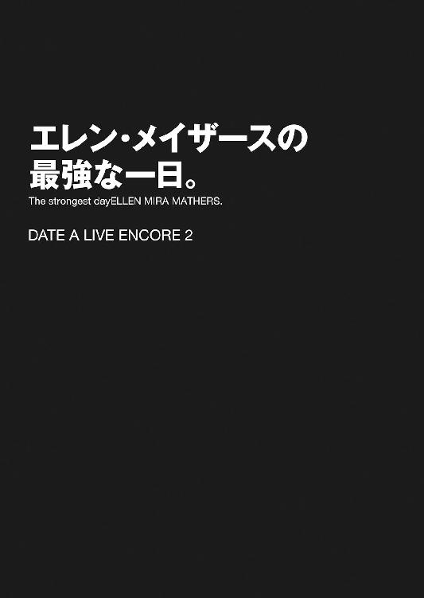

| デート・ア・ライブ アンコール2 <デート・ア・ライブ> (富士見ファンタジア文庫) | |
| 橘 公司 & つなこ | |
| Kadokawa / 富士見書房 (2014) | |
デート・ア・ライブ アンコール２
橘 公司

富士見ファンタジア文庫
本作品の全部または一部を無断で複製、転載、配信、送信したり、ホームページ上に転載することを禁止します。また、本作品の内容を無断で改変、改ざん等を行うことも禁止します。
本作品購入時にご承諾いただいた規約により、有償・無償にかかわらず本作品を第三者に譲渡することはできません。
本作品を示すサムネイルなどのイメージ画像は、再ダウンロード時に予告なく変更される場合があります。
本作品は縦書きでレイアウトされています。
また、ご覧になるリーディングシステムにより、表示の差が認められることがあります。
口絵・本文イラスト つなこ
「はぁ......っ、はぁ......っ」
薄暗い路地裏の壁に背を付けながら、五河士道は苦しげに息を吐いた。
両手に持った買い物袋を、できるだけ音がしないよう抱え直し、恐る恐る大通りの様子を窺う。
とはいえ無論、士道は忍者になるための修行に勤しんでいるわけでも、路地裏に潜むのがたまらなく好きなわけでもない。士道がこんなところにいるのには理由があった。
眉根を寄せながら耳を澄ませると、大通りの方から、怒号のような声が聞こえてくる。
「──どこだ！ どこへ行った!?」
「あっちよ！ 逃がすんじゃないわ！」
「は......はいっ！」
「............」
それと同時に、バタバタという足音が士道の方に近づいてくる。
そう。士道は今、複数人の追っ手に追われていたのである。
「い、一体......なんだってんだよ......！」
士道は悲鳴じみた声を上げながら買い物袋を握りしめ、その場から駆け出そうとした。
が、その瞬間、士道の前方に一人の少女が躍り出てくる。
夜色の髪に水晶の瞳を具えた、可愛らしい少女である。しかし今その美しい目は、獰猛な捕食者のごとく爛々と光っていた。
「！ 見つけたぞ、シドー！」
少女──夜刀神十香がそう叫び、こちらに向かって走ってくる。
「と、十香......ッ!?」
士道は息を詰まらせると、慌てて進路を変更し、大通りの方へと走っていった。
「待て！ なぜ逃げるのだ！」
「おまえらが追いかけてくるからだろうが！ 一体何が目的なんだよ!?」
「それは──とうっ！」
と、士道が路地裏から大通りに出たところで、十香が地面を蹴り、大きく跳躍した。
「う、うわっ!?」
この場に陸上部の顧問がいたなら間違いなくスカウトされているであろう見事な大ジャンプである。士道は十香に背中からのし掛かられ、通りのど真ん中にと転ばされた。
「よし、ようやく捕まえたぞ、シドー！」
言いながら、十香が士道の身体をごろんと仰向けにし、その上に馬乗りになってジッと士道の目を見つめてくる。
そして──微かに興奮した様子で、唇を開く。
「さあ、私と──キスをしてくれ！」
とある休日の夕方。買い物客で賑わう商店街のど真ん中で。
十香は、そんなことを言った。
「は......はぁ......ッ!?」
思わず目を見開き、返す。
「き......キス......？」
「そうだ！ キスだ！」
すると十香は頰を微かに染めながらも、大声で断言し、力強くうなずいてきた。
それを見てか、辺りに犇めいていた買い物客がにわかにざわめきだす。まあ、それはそうだろう。こんな街中で大立ち回りを演じた挙げ句、大声でキスだ何だと叫んでいるのである。注目するなという方が無茶な話だ。
士道は気まずげに辺りを見回してから、十香を宥めるように手の平を広げた。
「と、十香......とにかく、一旦落ち着こう。な？」
「駄目だ！ 悠長なことを言っている暇はない！ さあ、早くキスをするのだ！」
十香がガッと士道の腕を摑み、覆い被さるような格好で顔を近づけてくる。
「ち、ちょ......っ」
一体なぜこんなことに......士道は十香の息づかいを肌で感じながら、今日起こったことを思い返した。
◇
──そんな事態に陥るおよそ一時間前。
士道は夕食の買い物をしに商店街へ出かけていた。
今日はお供はおらず、一人だけである。日によっては妹の琴里や隣に住む十香なんかがついてくることもあるのだが、今日は見たいテレビがあるとかで、家に残っているのだ。
「さて......今日は何にするかな」
なんて呟きながら、右に左に目をやって、商店街を物色して歩く。
休日のためか、街には人が数多く見られた。士道と同じく夕食の買い物に来たであろう主婦たちや、散歩中と思しきお年寄り、観光客らしき人もちらほらと見受けられる。
と、士道が頭の中で焼き魚と豚の生姜焼きを天秤にかけていると、右方から何やら声が聞こえてきた。
『──は、イニシャルがＳ・Ｉの方です。あなたは今日、自分の運命の人を知ることができるでしょう。新たな出会いなのか......それとも既にあなたの側にいる人なのか......それを知るポイントは──』
どうやら電機店の店先に並べられたテレビの音声らしかった。フードを目深に被った女性が、水晶球に手をかざしている。どうやら占い番組のようだ。
そういえば、琴里は毎朝学校に行く前に、血液型占いや星座占いをはしごするくらいの占い好きだった。もしかしたら、琴里が見たい番組というのはこれのことだったのかもしれない。
そこで、士道はふと思い出した。
「......っと、そういえば、リモコンの電池が切れてたな」
呟き、電機店の中に入っていく。大型の家電量販店とは異なり、注文販売や家電の修理などが主な売り上げを占める個人経営店とはいえ、電池くらいは置いてあるだろう。
「ん......」
予想通り、壁際に電池の並んだコーナーがあった。その中から四本入りの単四電池を手に取り、会計を済ませる。
「あれ、そういえば......」
店から出た士道は小さく声を発した。先ほど聞いた占い番組の音声をふと思い出したのである。
イニシャルがＳ・Ｉの方......確かに占い師はそう言っていた。
士道の苗字は五河。つまりイニシャルはＳ・Ｉなのである。
「なんだ、ちゃんと聞いておけばよかったかな」
小さく笑いながら肩をすくめる。
とはいえ、別に士道は琴里ほど占いが好きなわけでも、そういうものを信じる性分でもない。大して気にするでもなく、道を進んでいった。
そうして五〇分ほど商店街をぶらつき、士道はいつも通り夕食の買い物を済ませた。
時刻はそろそろ一七時を回る頃だろうか。傾きかけた日が辺りに照りつけ、建物の長い影を地面に落とし始めている。
存外時間がかかってしまった。早く帰らねば、夕食の準備が遅くなってしまうだろう。
あと買うものは足りなくなった文房具くらいのものである。手早く済ませて帰路に着こうと、士道は少し歩調を早めた。
──と。
「ん......？」
士道は不意に足を止めた。前方に、見覚えのある少女が立っていたのだ。
細身の華奢な体軀。肩口をくすぐるくらいの髪に、人形のような面が特徴的な少女である。とはいえその人形のような、という形容には、端整な造作という意味と、表情のようなものが認められないという二つの意味があったのだが。
間違いない。士道のクラスメート、鳶一折紙だ。
「あれ、折紙？ 偶然だな。おまえも買い物か？」
「そう」
「そっか。じゃあ、俺はこっちだから、またな」
言って手を振り、道を歩いていこうとする。
が、そこで後方からガッと手を摑まれ、士道は足を止めさせられた。
「ててっ、な、なんだ？」
問うと、華奢な細腕からは想像できない握力で士道の手首を押さえつけながら、折紙が小さく口を開いた。
「こちらにきて」
「へ？」
突然のことに目を見開くが、折紙に答える気はないようだった。士道の手を摑んだまま、のしのしと通りを逆行していく。
「わ、ちょ、ちょっと？ 俺、家に帰らないと......」
「すぐに済む」
折紙は有無を言わさず路地裏まで歩いていくと、士道を壁際に追いやり、逃げ場を塞ぐように士道の顔の横に手をドン、と突いた。......なんだか、男女の位置が逆な気がする。
だが、士道にそれを指摘するような余裕はなかった。折紙が目を細め、ゆっくりと顔を近づけてきたのである。
「お、折紙......ッ!?」
「じっとしていて。大人しくしていればすぐに終わる」
「い、いや......あの......」
顔中に脂汗を浮かばせながら、上擦った声を発する。だが、折紙の進行は止まらなかった。ゆっくりと、しかし確実に、息づかいが感じられるくらいの位置まで顔が近づき──
「あーっ！ な、何をしているのだ貴様ッ！」
瞬間、通りの方から、聞き慣れた叫び声が響いてきた。
「え......？」
呆然と目を見開く。すると次の瞬間には、士道と折紙の間に横から手が差し入れられ、ぐいっと二人の身体が引き剝がされていた。
「大事ないか、シドー！」
「と、十香......？」
そう。そこにいたのは、家で待っているはずの十香だったのである。
「おのれ鳶一折紙！ 学校が休みと思えばこんなところで！ 油断も隙もないやつめ！」
「それはこちらの台詞。どこにでも湧くお邪魔虫。シロアリの方がまだかわいげがある」
「な、なんだとっ！」
十香がいきり立つ。やはりというか何というか、相変わらずこの二人は馬が合わないらしい。
だが、それも仕方のないことなのかもしれなかった。何しろこの二人は、つい数ヶ月前まで、何の冗談でもなく殺し合いをしていたのである。
実はこの十香は、人間ではない。
人類に、世界に害をなす特殊災害指定生命体。通称・精霊と呼ばれる存在なのである。
今はとある方法によってその力を封印され、人間とほとんど変わらない状態になっているが......精霊を殲滅することを目的とした組織──ＡＳＴに属している折紙とは、未だにすこぶる仲が悪いのだ。
しかし、だからといってこのまま喧嘩を放置しておくわけにもいかない。士道は十香の気を引くように声を上げた。
「十香、おまえ、どうしてここに？」
「！ おお、そうだった。鳶一折紙などに構っている暇はなかったのだ」
十香は大きくうなずくと、キッと視線を鋭くし、突然士道に跳びかかってきた。
「うわっ!?」
すんでのところでそれを避ける。十香は勢い余って士道のいた壁に激突した。
「ぐわっ！ ぬ、ぬぅ......シドー、なぜ避けるのだ」
「それはこっちの台詞だっての！ なんで急に......」
そこで士道はハッと息を詰まらせた。今し方十香に引き剝がされた折紙が、鋭い眼光を送ってきていたのである。そしてそれと同時に、体勢を立て直した十香が再び士道に向いてくる。
「な......な......」
十香と折紙。二人の眼光に射竦められ、士道は思わず後ずさった。
二人とも、一体どうしてしまったというのだろうか。普段から不可解な行動が多い二人とはいえ、これは明らかに異常だった。
「士道！」
と、そこで後方から、またも聞き覚えのある声が響いてきた。
見やると、そこに小さな女の子が二人立っていることがわかる。長い髪を黒いリボンで二つに括った勝ち気そうな少女に、帽子を目深に被り、左手にウサギのパペットをつけた気弱そうな少女だ。
そう。十香と同じく五河家で士道の帰りを待っているはずの、琴里と四糸乃である。
「琴里、四糸乃！」
十香と折紙に注意を払いながら、士道はじりじりと後ずさっていった。そして後方の二人に小さな声を発する。
「お、おい、あいつら一体どうしたんだ？ 何か様子が......」
言いかけて。士道は足を止めた。
理由は非常にシンプルなものである。士道の後方に陣取った琴里に、普段は大人しい四糸乃までもが、少し興奮した様子で士道をジッと見つめてきていたのである。
「......四糸乃。少しの間協力しましょう」
「え......っ？ あ、は、はい......！」
「そっちに回って。鳶一折紙にやられるまえに、士道を確保するわよ！」
「は、はい......っ」
「な......っ!?」
士道は目を剝いた。それはそうだ。琴里と四糸乃までもが、士道を狙うようにゆっくりと間合いを取り始めたのである。
「ちょ、ちょっと待て！ 一体何なんだよ！」
「いいから。ちょっと黙って私に捕まってちょうだい」
「いや、だから理由を──」
「とうっ！」
琴里が問答無用とばかりに士道に組み付いてこようとする。士道はすんでのところでそれを避けた。
普通に考えれば、彼女たちの体格で士道をどうこうできるはずはない。だがなぜだろうか、本能的な恐怖を感じて、士道は建物と建物の間にできた狭い道に駆け出した。
「あっ、シドー！」
「ち......ッ、追うわよ、十香、四糸乃！」
士道が逃げ出すと、後方からそんな声が響いてきた。
──そして、現在に至る。
思い返してみても、まったく理由がわからない。士道は天下の往来で十香に組み敷かれながら、ぐるぐると混乱する思考をうめき声に変換していた。
「ちょ、ちょっと待て！ なんでまた急にキスなんて......！」
「ぬ？ うむ、それはだな──」
「わーっ！」
と、十香が答えようとしたところで、後方から走ってきた琴里が大声を発した。それと同時、いつの間にか肉薄していた折紙が十香の顔をむんずと摑んで士道から遠ざけ、ついでに四糸乃が士道の手を引いてその場に立ち上がらせる。
まるで打ち合わせでもしていたかのような完璧なコンビネーションだった。
「うわぷっ、な、何をする！」
十香が折紙の手を払いのけ、刺々しい視線を送る。するとそこに琴里が乱入し、何やら十香にひそひそと耳打ちをした。
「む......？ それは秘密なのか？ なぜだ？」
「なぜって......それは、えっと、士道に知られると効力がなくなるのよ」
「そ、そうなのか！ それは困るぞ」
内緒話にしては随分と声量の大きな会話を交わしたのち、十香が士道に向き直る。
「訳あって理由は話せん。だが......私とキスをして欲しいのだ」
「い、いや、理由が話せないって、そんな」
「駄目か、シドー......」
「う......」
十香が今にも泣いてしまいそうな悲しげな顔を作る。士道は答えに窮し、頰に汗をひとすじ垂らした。
「や......そりゃ、駄目じゃ、ない......けど......」
「！ 本当か！ ではキスをしてくれるのか!?」
「え、ええと......」
士道は困り顔を作りながら、眼球運動で辺りを見回した。
通りのど真ん中でキスキスと叫んでいるものだから、見事にご通行中の皆様の注目を集めてしまっている。子供が不思議そうにこちらを指さし、母親がそれを止めさせていた。顔なじみの多い商店街である。これ以上騒ぎを大きくして、歩きづらくなってしまうのは避けたかった。
そして、それより大きな問題が三つ、ごく至近距離にあることも忘れてはならない。
興味なさそうに腕組みをしながらも、なぜかそわそわと士道と十香に視線を送ってきている琴里に、あたふたと落ち着かない様子でこちらを見上げてくる四糸乃。──そして、十香が実際に行動を起こそうものなら、微塵の逡巡もなく喉元を抉りかねない雰囲気を纏った折紙。
三者三様の視線に晒され、士道はごくりとのどを濡らした。
「じ、じゃあ、こうしよう。今日一日、いい子でいられたらご褒美にってことで......」
「ぬ？」
士道がそう提案すると、十香は目を丸くした。
「むぅ......今日一日いい子にしていたら、キスをしてくれるのか？」
「あ、ああ。それでどうかな......？」
「うむ、わかった！ いい子にしているぞ！」
十香が満面の笑みでうなずく。士道ははあと安堵の息を吐いた。
根本的な問題は解決していない気がしたが、とりあえず最悪の事態は避けられた。琴里や四糸乃ならまだしも、折紙の前で十香とキスなんてしようものなら、一体どうなるのか想像もしたくない。
折紙の様子を窺うように、ちらと視線を向ける。......ばっちりと目が合った。
「子供をいなすいい手。──本気にはしていない」
言葉の内容とは裏腹に、士道に警告を発するような口調で折紙が言う。士道はじとっと汗の滲んだ背が冷えるのを感じながらも、力なく笑った。
が......いつまでもそう気を抜いてはいられない。未だ、皆が士道を追ってきていた理由はわからないままだったのである。
「......それで、おまえら......一体なんで俺を追いかけてきたんだよ」
士道が言うと、琴里はピクッと眉の端を揺らした。
「や、やあねえ......見たい番組が終わったから、買い物の手伝いにきただけよ。ほら、荷物も多いでしょうし。ねえ、四糸乃」
「え......っ？」
急に話を振られた四糸乃が、目を丸くする。
「......そうなのか？」
「え、えっと......は、はい......そうです」
「............」
なんだかものっすごく疑わしかったが、四糸乃がそう言うのであればきっとそうなのだろう。士道は腑に落ちないものを感じながらも一応納得を示した。
「じ、じゃあ......行くか、残りの買い物」
「ええ、そうね。──ほら、十香と四糸乃も」
琴里の声に従って、二人が士道のあとについてきた。ついでになぜか、折紙まで。
「折紙？」
「──私も行く。私も、士道と同じものを買いにきた」
「ふ、ふざけるなっ！」
折紙の返答に叫びを上げたのは十香だった。拳を握りしめ、憎々しげに視線を鋭くする。
「なぜ貴様がついてくるのだっ！ 別々に行けばいいだろう！」
「私から言わせれば、あなたの存在こそ不可解。なぜあなたは士道に同行しようとしているの。用がないなら速やかに帰るべき。プッシー、ゴーホーム」
「なんだと貴様っ！」
十香がダン！ と地面を踏みしめる。が、そこで琴里が折紙にキッと目を向けた。
「......鳶一折紙。まさか、あなたもあの番組を──」
「............」
折紙は、否定も肯定もせずふっと目を逸らした。
琴里はその反応をどう受け取ったのか、フンと鼻を鳴らし、くわえていたキャンディの棒をピンと立てた。
だが、十香は未だ興奮が収まらないといった様子で鼻息を荒くしている。士道は慌てて二人の間に割って入った。
「ま、まあ、待てって。みんなで行けばいいだろ？ な？」
「む......」
「............」
十香が不満そうに、しかし渋々了承を示すように息を吐き、折紙が無言で視線を背ける。一応は二人とも、士道の言うことを聞いてくれるつもりらしかった。
「......っていうわけなんだが、二人もいいか？」
言って、今度は琴里と四糸乃の方に目を向ける。すると琴里はつまらなさそうに眉根を寄せ、四糸乃は折紙から視線を逸らすように麦わら帽子のつばを下げて見せた。......正直なところ、二人ともあまり折紙を得意としているわけではないようである。
それもそのはず。琴里も四糸乃も、十香と同じくかつて精霊の力を有し、彼女と敵対していたことがあるのである。
だが、二人ともそんな感情を遠慮なく発露してしまうほど子供ではないようだった。琴里はやれやれといった調子で、四糸乃は少し躊躇いがちに、首を前に倒してくる。
「ふん......まあ、いいわ。逆に姿を見えなくしても不気味だものね」
「わ、私は......はい、大丈夫......です」
「ん、ありがとうな、二人とも」
士道は安堵の息を吐くと、皆を伴って商店街の道を歩き始めた。
......だが、問題は何も解決していなかった。
きっと実際の時間にすれば、先ほどから一〇分も経っていないくらいだろう。だというのに士道は、まるで炎天下の砂漠を何時間も彷徨わされているかのような疲労を感じているのだった。
理由は非常に単純なものである。
『............』
前、後、左、右。
士道を囲うようにそれぞれ琴里、折紙、十香、四糸乃が陣取り、何やら異様なプレッシャーを放ってきているのだ。
正しく言えば、十香はいつも通り折紙を警戒しているだけだったのだが、他の三名は明らかに平時と雰囲気が異なっていた。なぜか皆落ち着かない様子で、時折ちらちらと士道の方を窺ってくるのである。まるで獲物が弱るのをじっと待っている猛禽だ。
「な、なんなんだよ、本当に......」
と。士道が途方もない緊張感に包まれながら歩いていると、右方から何やらひそひそと話し声が聞こえてきた。
『......からさ、攻めていかなきゃダメだよー。もっとこう、さ......』
「え......で、でも......届かないよ......」
どうやら四糸乃が、ウサギのパペット『よしのん』と話し込んでいるらしかった。内容までははっきり聞き取れなかったが、『よしのん』が四糸乃を煽動しているらしきことはなんとなくわかる。
『だいじょーぶだいじょーぶ、いけるって』
「そ、そうかな......」
そしてそれから何度か言葉を交わしたのち、四糸乃が不安そうに、しかし意を決したように小さくうなずいたかと思うと──
「きゃ......っ」
と、か細い声を上げて、その場に転んでしまった。
「四糸乃？ 大丈夫か？」
士道は四糸乃の方に目を向けると、膝を折って手を差し伸べた。
「ほら、手。気を付けろよ？」
「あ......は、はい......ありがとうございます......」
言いながら、四糸乃が士道の手を握ってくる。
と、その瞬間、四糸乃の左手の『よしのん』が、ひそめた声を発した。
『......四糸乃！ 今だ！』
「......！ え、えと......うん......」
その声に急かされるように四糸乃がうなずき、くっと士道の手を握って立ち上がった。
そしてそのまま、地面に膝を突いた士道の顔目がけて顔を近づけたかと思うと──
ちゅっ、と。
四糸乃の唇が、触れた。
──寸前で二人の間に差し挟まれた、折紙の手の甲に。
「え......っ」
四糸乃が、呆気に取られた様子で目を丸くする。
すると折紙が、ササッと士道の手を握っていた四糸乃の手を取り、パン、パン、と砂埃で汚れた四糸乃のスカートを払った。
「折紙？」
士道は意外そうに目を見開いた。
それはそうだ。四糸乃は精霊。折紙はＡＳＴ。今は霊波反応が確認されていないとはいえ、良好な関係とは言いがたい。──正直なところ、士道が折紙の同行を皆に認めてもらった理由の一つは、行動をともにすることで、この微妙な関係を少しでも和らげられないかということを考えたからだった。
──まさか、折紙が、四糸乃の心配を......？
士道が二人を見守っていると、折紙は四糸乃に視線を落としながら口を開いた。
「気を付けないと、危ない」
アクセントを強めながらそう言い、折紙が帽子越しに四糸乃の頭をわしわしと撫でる。
なぜだろうか、言葉の内容は優しいのに、その語調は、まるで重大な警告を発しているかのような威圧感に満ちていた。実際、頭を撫でられた四糸乃は、「ひっ」と声を詰まらせ、雨に打たれたチワワのように小刻みに震えていた。
「え、ええと......」
「先を」
士道が頰に汗を滲ませながら戸惑っていると、折紙が士道の背後に戻り、進行を促すように呟きながら背を押してきた。
と、それからまた少しの間、緊張に苛まれつつも歩みを進めていたところで、不意に後方から肩がトントン、と叩かれる。
「ん？」
何か用だろうか。士道は足を止めて後方に振り向き──
「のわっ!?」
思わず、身を竦ませながら声を発した。
振り向いた瞬間、折紙の顔が視界いっぱいに広がっていたのである。どうやら、背伸びをして士道の背にぴたりと寄り添いながら肩を叩いたらしい。
「ん......」
折紙が表情を変えないまま、さらに顔を近づけてくる。咄嗟のことに頭が混乱してしまい、士道はその場から動くことができなかった。
やがて折紙の唇が士道の唇に触れ──
──る寸前で、袖がグイッと引かれ、士道の身体が後方へと引っ張られた。
「わ......っ」
ガクン、と身体が揺れ、その場に膝を突いてしまう。驚いて自分の手元を見やると、前方を歩いていた琴里が、袖をがっしと摑んでいることがわかった。
「あら、うちのおにーちゃんに何か用かしら、鳶一サン？」
「............」
琴里が眉を歪めながら不敵に微笑む。折紙は微塵も表情を変えなかったが......なぜだろうか、その背後から、忌々しげなオーラが立ち上っている気がした。
「さ、ほら、行くわよ。しゃんとなさい、士道」
「あ、ああ......」
琴里に促され、士道は膝を払って立ち上がり、またも歩みを再開させた。
と、それから数分後。今度は琴里が、何やらちらちらと士道の方を窺ってくる。
「琴里？ 何か用か？」
「え？ ああ......うん、ちょっと、話しておかなきゃいけないことを思い出して......」
「話しておかなきゃいけないこと......なんだ？」
士道が言うと、琴里は辺りを見回したのち、小さく手招きをしてみせた。
「......ちょっと、耳を貸してくれる？」
そして軽く顔をうつむかせながら、うっすらと頰を染めてそう言ってくる。
琴里らしからぬ行動に首を捻りかけた士道だったが──すぐに思い直す。
もしかしたら、〈ラタトスク〉関連の話かもしれない。確かにそれなら、折紙がいるこの状況であまり声高に言うことはできないだろう。
「ん、わかった」
言って軽く腰を屈め、琴里の方に耳を向ける。
すると琴里は、なぜか顔をさらに赤くしながら、士道の耳元に口を近づけてきた。
次の瞬間。士道の頰に、柔らかい感触が触れた。
そう。それは瑞々しく、微かに濡れた琴里の唇──
ではなく、妙にふかふかとした感触だった。
「うん？」
不審に思ってそちらを見やる。するとそこに、白いウサギ型パペットの頭があることがわかった。士道と琴里の間に、四糸乃の左手が伸びていたのである。
『うーん、琴里ちゃんったら、な・ぁ・に？ よしのんにもそのお話聞かせてよー』
「うく......」
『よしのん』に話を遮られ、琴里が悔しそうに歯嚙みする。四糸乃が申し訳なさそうに「あ、あの......」と目を泳がせていた。
「おいおい、よしのん。琴里の話を邪魔しちゃ駄目だろ。......で、琴里、なんだったんだ？」
「......いいわ。あとにする」
「え？ 急ぎの用じゃないのか？」
「別に、大丈夫よ。そこまで急を要することでもないし......ッ」
「そ、そうなのか......？」
琴里がプイと顔を背け、腕組みする。その際、ガリ、というキャンディを嚙む音が聞こえてきた。
『よしのん』が四糸乃の懐に戻り、ビッ、と片手を上げて見せる。四糸乃は慌てたように肩を震わせた。
......なんだろうか、理由はわからないが、自分の回りで凄まじい攻防が行われている気がしてならない士道だった。
「い、一体何が起きてるんだ......」
士道は、もの凄く落ち着かない心地でうめいた。
◇
それからおよそ三〇分後。ただ文房具を買うにはかかりすぎなくらいの時間を隔てたのち、士道たちはようやく帰路に着いていた。
無論あのあとも、琴里や折紙、四糸乃たちの謎の攻防は続いていた。一体何が原因なのかも、何を目的としているのかもわからない緊張感に満ちた静かな戦いである。わけもわからないままその渦中に放り込まれた士道は、まるで玉手箱を開けてしまった浦島太郎のように憔悴しきっていた。
「......そ、それじゃあ、折紙。俺たちはこっちだから......」
ようやく五河家と折紙のマンションを隔てる丁字路に差し掛かり、士道は疲れ切った声でそう言った。
瞬間、琴里が勝ち誇ったようにフフンと鼻を鳴らし、四糸乃がホッと安堵の息を吐く。
......なぜだろうか、苦手な折紙と別れられて安心しているというより、競合相手の脱落を喜んでいるように見えなくもなかった。
しかしそれに反して、折紙は拳を握るでも視線を鋭くするでもなく、ゆっくりと踵を返した。
「それじゃあ、また」
「あ、ああ......」
そのあまりに素直な様子に、士道は少し驚いてしまった。いや、普通に考えれば何もおかしいことはないのだが、折紙だったらこのまま家についてくると言い張るくらいのことをしてくると思っていたのである。
が、折紙は駄々をこねることもなく、そのままマンションの方に歩いていってしまった。その背に向かって、十香が「いーっ」と歯を見せる。
「さ、じゃあ私たちも帰りましょ」
「ああ......そうだな」
うなずき、五河家の方へと足を向ける。
だが、ほどなくして、士道は不意に眉の端をぴくりと動かした。ポケットの中に入っていた携帯電話が、ぶるぶると震えだしたのである。
「ん？ メールか......」
言いながら携帯電話を取り出し、慣れた動作でメール画面を開く。すると、先ほど別れたばかりの折紙からメールが届いていることがわかった。
『今日の二三三〇時。誰にも言わず、一人で東天宮公園に来て。私たちの将来に関わる重大な案件。もし士道の姿が確認できなかった場合、私は大変なことになってしまう』
「た、大変なこと......？」
士道は、眉根を寄せて乾いた声を発した。
「？ どうしたのよ、士道」
「い、いや、なんでもない」
折紙からメールが届いたと知れれば、また面倒なことになりかねない。士道は適当に誤魔化しながら携帯電話をポケットにしまい込み、心なしか歩調を早めた。
ほどなくして、懐かしの我が家（何の冗談でもなく、随分と久方ぶりな気がした）に辿り着く。士道は慣れた調子で鍵を開けると、靴を脱いで家に上がっていった。
「ただいまー......」
軽く伸びをしながらそう言い、手洗いうがいを済ませてから、今し方買い揃えてきた食材を冷蔵庫に収納していく。
「......っと、これはすぐ使うか」
言いながら、豚のロース肉と生姜、キャベツを台所に置く。どれだけ疲れたと言っても、夕食の準備だけは欠かせないのである。
「おお、シドー。今日は何を作るのだ？」
十香がソファの背にのし掛かるようにしながら屈託のない瞳を向けてくる。士道は小さくうなずきながら口を開いた。
「おう、今日は豚の生姜焼きだ。ご飯が進むぞー」
「お、おお......！」
十香が目をキラキラと輝かせ、ごくりと唾液を飲み込んだ。
その様に、思わず苦笑してしまう。こんなにもストレートに喜んで貰えると、士道としても作り甲斐があるというものである。
「ま、そんなに時間かけないから、テーブルの上片付けておいてくれよ」
「うむ！ 任せろ！」
十香が元気よくうなずき、ダイニングテーブルを片付けていく。リビングの方を見やると、四糸乃と琴里が取り込んであった洗濯物を畳んでくれていた。......が、何だろうか、二人とも、作業をしながら小声でブツブツと呟いている。
『......から、まずは二人きりにならなきゃ駄目だよ。たとえば士道くんがトイレに──』
「え......で、でも......そんな......」
四糸乃は、『よしのん』と会話をするように。
「......どうしたものかしらね。ここはいっそ、催眠ガスを噴霧して気を失わせたところで......いやいやいや、それじゃあの女と変わらないわ。それは最終手段ね......」
琴里は何やら一人で物騒なことを言っていた。
首を捻りながらそんな様子を見つつ、士道は椅子にかけてあったエプロンを手に取りかけ......手を止めた。
「っと、そうだ。先に......」
言いながら台所を出て、廊下を歩いていく。
先ほどから皆に囲まれていたため、トイレに行けていなかったのを思い出したのである。調理に入る前に済ませておいた方がいいだろう。
ガチャリとノブを捻り、トイレに入る。と──
「え？」
士道は素っ頓狂な声を発した。何しろ、士道がトイレに入った瞬間、そのあとを追うように、四糸乃がトイレの中に滑り込んできたのである。
「よ、四糸乃？」
士道は予想外の事態に声を裏返らせ、「あ」と眉を動かした。
「もしかして、四糸乃もか？ 悪い悪い、じゃあ俺一旦出るから──」
しかし、士道が四糸乃の脇を通って廊下に出ようとした瞬間、四糸乃の左手の『よしのん』が、素早く扉を閉めてガチャリと鍵をかけてしまった。
「へ......？ な、何してるんだ......？」
『ほらほら、四ー糸乃。このチャンスを逃したらもうあとがないよー？』
『よしのん』が煽るように言う。恥ずかしそうに頰を染めていた四糸乃は、意を決するように唇をきゅっと嚙みしめ、バッと顔を上げた。
「すいません、こうしないと......二人になれないって......よしのんが......それで......」
「二人に......？ どういうことだ？」
「あっ、あの......」
四糸乃が、煙でも発するのではないだろうかと思えるほどに顔を赤くしながら言ってくる。そのただならぬ様子に、思わず士道も緊張してしまった。
......いや、四糸乃にそんな気がないのは重々承知しているのだが、士道も男の子なのである。四糸乃のような可愛らしい女の子と、こんな狭い密室に二人きりでいると、なんだか少し心拍が速くなってしまうのだった。
そんな士道の気分を知ってか知らずか、士道よりも数倍緊張した様子の四糸乃が、意を決して言葉を続けてくる。
「その......士道さん」
「お、おう。なんだ？」
「あの、こんなことお願いするの......変かもしれないんですけど......その、もし......よかったら、なので......ええと、いやだったら、断ってくれていいんです、けど......」
「いや、そんな」
あの気弱で引っ込み思案な四糸乃がここまで頑張るだなんて、よほどのことがあるに違いない。士道はジッと四糸乃の目を見つめながらうなずいた。
「せっかく四糸乃が勇気を振り絞ってお願いしてくれるっていうんだ。俺にできることならなんでもするぞ。言ってみてくれよ」
「──！」
四糸乃は驚いたように目を見開くと、小さく、しかし力強くうなずき、震える唇で言葉を続けてきた。
「あ、あの、わ......わ、私と......その、き、き、キ──」
だが。そこで四糸乃の頭がボンッ、と煙を噴いてしまった。
「ふにゅう......」
「よ、四糸乃!?」
その場にくずおれそうになる四糸乃の身体を支えようと、手を伸ばす。
するとその瞬間、四糸乃の左手に装着された『よしのん』が凄まじい速さで蠢いたかと思うと、士道の手首をかぷっと嚙んで、そのままグイと引っ張った。
「わっ、な、何だよ、よしのん」
『よひの！ 作戦Ｂら！』
『よしのん』が、士道の手をくわえたまま叫ぶ。すると四糸乃はその声にハッと肩を揺らすと、一瞬の逡巡のあと、ぺこりと頭を下げた。
「し、失礼します......っ」
そして、『よしのん』が拘束した士道の手の甲に、ちゅっ、と口づけをする。
「へ？」
その意外な行動に、士道は目を丸くした。今のは、一体......？
『よし！ やったね、四糸乃!?』
「う、うん......！ これで......いいんだよね......？」
『きっと大丈夫だよ！ これで四糸乃がお嫁さんだね！』
「......っ！」
『よしのん』が言うと、四糸乃は再び顔を真っ赤に染めた。
だが、すぐにその場に士道がいることを思い出したのだろう、四糸乃が深々と頭を下げてくる。
「す、すいません......失礼しました......っ」
そう言って、四糸乃が慌てた様子で鍵を開け、廊下に走っていってしまう。
「な、なんだったんだ......？」
一人残された士道は、手の甲に視線を落としながら呆然とその場に立ち尽くした。
『いただきます！』
四糸乃の謎の行動からおよそ二〇分後。五河家の食卓には美味しそうな料理が並べられていた。豚の生姜焼きに、昨日作っておいたひじきの煮物、ご飯にあさりの味噌汁である。
「うむ！ 今日も美味いぞシドー！」
十香が満面の笑みを作りながら、もっしゃもっしゃと肉を咀嚼する。
「あはは......ありがとよ。でも喋るのは食べてからにしような」

「ん！ んむ！」
十香が元気よく首肯しながら味噌汁を啜り、「ほわー」という顔を作る。士道は小さく苦笑した。
「ん、ま、悪くないわね」
「美味しい......です」
琴里と四糸乃も、十香ほどのオーバーリアクションはしないものの、満足してくれているようである。......まあ、なぜか四糸乃は、ほんのりと頰を染めながら、時折士道の視線を避けるように目を泳がせたりしていたのだが。
「............」
士道は無言で、先ほど四糸乃に口づけされた手の甲を見やった。......本当に、なんだったのだろう。何かのおまじないだろうか？
「ぬ？ どうしたシドー、食べないのか？」
「あ、いや、なんでもない」
十香に言われ、士道は料理を食べ始めた。手前味噌かもしれないが、いい出来である。
それから、会話に食事にと団欒を楽しみ──ほどなくして、全員がご飯を食べきった。
『ごちそうさまでした』
皆で一斉に手を合わせ、そう言う。すると十香と四糸乃が同時に席を立ち、自分の使った食器をシンクまで運んでいった。
「お、ありがとな、二人とも」
士道が言うと、十香と四糸乃が少し照れくさそうに笑った。
と、それに合わせるように、士道の隣に座っていた琴里が、小さく伸びをする。
「んー......なんかこう、デザートが欲しいわね」
「デザート？」
士道が問い返すと、琴里は悠然とうなずき、十香の方に目をやった。
「ねえ十香。プリンとか食べたくない？」
「──プリン!?」
その言葉に、十香が目をキラッと輝かせる。
「お、おお......食べたいぞ！ あるのか!?」
「残念ながら、今うちにはないわ。だから──」
言って、琴里が財布から千円札を取り出す。
「四糸乃とそこのコンビニまで買いに行ってくれない？ 好きなの選んでいいわよ」
「おお！ 行く！ 行くぞ！」
十香が力強くうなずき、琴里から千円札を受け取る。
「さあ、行こう四糸乃、よしのん！」
「え、えと、私......」
『あーれー』
四糸乃と『よしのん』は何か言おうとしていたらしかったが、十香に手を取られて言葉を終える前に連れ去られてしまった。
「はは......元気だな」
「......よし、邪魔者はいなくなったわね」
「ん？ 何か言ったか？」
士道が言うと、琴里はハッとした様子でブンブンと首を振った。
「......？」
まあ気にしても仕方あるまい。士道は十香たちが帰ってくる前に洗い物を済ませてしまおうと席を立とうとした。
──だが。服の袖がくっと摘まれ、その動作が阻害される。
「琴里？」
「ん......ちょっと」
少し拗ねたような、恥ずかしそうな声を発しながら、琴里が視線を逸らす。頰もほんのりと色づいている気がした。
「......ほっぺ。ご飯つぶ。ついてるわよ」
なぜか一言一言を区切るようにしながら、琴里が言ってくる。士道は小さく首を捻りながらも「ああ」と首肯した。
「ホントか？ ありがとよ。ええと......」
「......！」
と、士道が頰についているというご飯つぶを取ろうとすると、琴里がさらに袖を摑む手に力を入れた。
「わっ、な、なんだよ」
「いいから......！ ちょっと待ちなさい！」
「は、はあ......？」
「わっ、私が......取ってあげるから......！」
叫び、琴里が士道を押さえつけるように身を寄せてくる。温かな琴里の体温が士道の右腕を包み込んだ。
「へ......？ 別に、それくらい自分で......」
「いいから！ 士道は黙ってて！」
「お、おう......」
有無を言わさぬ琴里の迫力に押し切られ、士道は黙って腕から力を抜いた。
「............」
「............」
だが、そのまましばらくの間、双方何も喋らないまま時間が過ぎていく。
カチカチという時計の音が、やけに大きく鼓膜を震わせた。
どれくらい時間が経った頃だろうか、琴里が唇を尖らせ、何やら思案するように、士道の手の平の上に指先でのの字を書いてくる。......なんだか無性にくすぐったかった。
「お、おい、まだか？ 食器洗わないと......もう十香たちも帰ってくると思うし......」
「......！」
士道の言葉に、琴里がビクッと身体を震わせる。
そして覚悟を決めるようにぐっと奥歯を嚙むと、ゆっくりと士道の方に顔を向けてきた。なぜだろうか、その頰は酸漿のように真っ赤で、目は泣き腫らしたように充血していた。
「こ、琴里？」
「......取ってあげるから、ちょっと......目瞑ってなさい」
「は？ なんで目を──」
「いいから！」
琴里が片手で士道の目を覆い、半ば無理矢理視界を閉ざしてくる。
「わっ!?」
「動かないで！」
暗い視界の中、琴里の怒鳴り声が耳に突き刺さる。
そののち、小さく椅子が軋む音と、衣擦れの音。そして、何やらごくりと息を吞む音が聞こえてきて──
「ん......？」
次の瞬間、士道の頰に不思議な感触が触れた。恐らく状況からして琴里の指なのだろうが......何かが違う気がする。そう。指よりもっと柔らかく、微かに濡れた──
と、そこで、閉ざされていた視界に光が戻った。
右方に目をやると、なぜか琴里が顔を真っ赤にしてガッツポーズを取りながら、小声で何やら呟いているのがわかる。
「......よしっ、これでおにーちゃんは私の......」
「琴里？」
「......！ な、なななな何よ！」
「いや、おまえ、今......」
「シドー！ 帰ったぞ！ とろとろミルクプリンと生クリームたっぷりプリン、どちらがいい!?」
士道が問い掛けようとした瞬間、バタンとリビングの扉が開き、十香の快活な声が聞こえてきた。
「......ぬ？ どうしたのだ、二人とも」
「あ、いや......なんでもない......と、思う」
士道は曖昧に応えることしかできなかった。
◇
午後一一時一〇分。士道は街灯に照らされた道を一人歩いていた。
十香も四糸乃も自室へ帰っていたし、琴里も既に眠ってしまっていたため、家を抜け出してくることはそれほど難しいことではなかった。無論、琴里が目を覚ましてしまったときのことを考え、近所のコンビニに行ってくる旨の書き置きも残してある。
今士道が向かっているのはもちろん、メールで折紙に指定された公園だった。
別に士道も気が進んだわけではないのだが、折紙が重大な案件というからには何か理由があるのだろうし......それに何より、士道が出向かなかった場合の『大変なこと』という言葉が気にかかって仕方なかったのである。それについて問うメールもしてみたのだが、帰ってくるのは『待っている』という返信のみだった。
「ん......ま、この時間なら少し余裕があるくらいだろ」
などと独り言を呟きながら、丁字路を右に曲がる。この通りを真っ直ぐ行けば、目的の公園はすぐ見えてくるはずだった。
と──
「............ッ!?」
不意に。
士道はその場に足を止めた。
否──止めさせられた。
前方に何かを発見したわけでも、身が竦んだわけでもない。もっと単純に、何者かに足を押さえつけられたのである。
慌てて足元を見やる。そして士道は、その場に蟠った異常に眉をひそめた。
街灯に照らされているはずの地面に漆黒の影が蟠っており、その中から細く白い腕が二本顔を出して、士道の足を押さえつけていたのである。
「な......！」
士道は目を見開いた。明らかに──異常。ホラームービーの中でしか起こり得ないような事態である。
だが、士道が驚愕した理由は、少し異なっていた。
士道は──この影と手を見るのが、初めてではなかったのだ。
「狂三......ッ!?」
「──きひ、ひひひ。よくわかりましたわねえ」
士道がその名を呼ぶと同時、前方に蟠っていた影から、一人の少女が這い出てきた。
左右不均等に結われた黒髪に、病的なまでに白い肌。身に纏うは血と闇の色に彩られた煌びやかなドレスである。しかし、彼女を最も印象づける箇所はその目だった。金色に輝く左目には時計の文字盤が浮かび、かち、かち、と規則的に針が動いていた。
狂三。かつて士道の持つ精霊の力を狙って現れた、人喰いの精霊である。
「ごきげんよう。壮健そうで何よりですわ、士道さん」
狂三は妖しく微笑むと、スカートの裾を摘んで小さく膝を屈めてみせた。
「──でェ、もォ......少々迂闊なのではありませんこと？ こんな人気のない場所をお一人で歩かれるなんて。うふふ、怖い人に襲われてしまいますわよ？」
言いながら距離を詰め、狂三が士道の頰を指先でくすぐってくる。
「く......」
眉をひそめてその手を振り払おうとする。が、その瞬間、士道の後方の塀から別の手が生え、士道の腕を拘束した。
「ぐ、あ......っ」
「きひひひ、ひひひひひひッ。駄ァ、目、ですわよォ」
狂三は凄絶な笑みを浮かべると、士道の頰と肩に手を置き、まるで抱きつくような格好で耳元に口を近づけてきた。
「ふふ、痛くはしませんわ。少しの間、じっとしていてくださいまし」
「く──ぁ──」
──このままでは、まずい。士道は必死に思考を巡らせた。仮に大声を出して、近隣の住民が駆けつけてくれたとしても、被害が広がるのみである。かといって今から携帯電話を取り出し、助けを呼べるはずもなかった。こんなときに限って、インカムもつけていない。一体どうすれば──
「──え？」
そこで耳元に触れた感触に、士道は素っ頓狂な声を発した。
士道が感じたのは、予想していたような鮮烈な痛みではなく......柔らかな唇の感触だったのである。
「ふふ......」
狂三は小さく笑うと、士道の耳に舌を這わせていった。ぴちゃぴちゃという唾液の音と荒い呼吸音とが鼓膜を震わせる。快感と恐怖がない交ぜになったゾクゾクとした感覚が、士道の全身を通り抜けていった。
「な、何を......!?」
士道が顔を真っ赤にしながら上擦った声を上げると、狂三はもう一度微笑み、士道から身体を離した。
そして狂三がぺろりと唇を舐めると同時、士道の手足を押さえつけていた白い手が一斉に影の中に潜っていく。
「う、うわっ」
いきなり解放されたものだから、少しバランスが崩れてしまう。士道はどうにか倒れないよう姿勢を保ちながら、狂三に訝しげな視線を向けた。
「な、何なんだよ、一体。何がしたいんだ、おまえは......」
士道が問うと、狂三は唇に手を当て、大層可笑しそうに笑った。
「うふふ......これで士道さんはわたくしのもの......ですわねェ？」
「な、何を......」
「ふふ、目的も達しましたし、今日のところはこれで失礼いたしますわ」
「目的......？」
「それは、秘密ですわ。──わたくしがいただくまで、もっともっと美味しくなっていてくださいまし」
狂三はそう言って指を一本鼻の前に立てると、踊るようにくるりと踵を返し──そのまま、影の中に沈んでいった。
「............」
数秒間の沈黙のあと。士道は、大きく息を吐き出した。
「死ぬかと......思った......」
狂三は今まで何人もの人間を殺してきているという精霊である。狂三がどんな気まぐれを起こしたのか、どうにか命を拾うことができたが、次も都合よく助かるかはわからない。軽率に過ぎる行為を自戒する士道だった。
「やっぱ......琴里に報告しておくべきだよな......」
言って、ポケットから携帯電話を取り出し、発信履歴の画面を表示させる。と──
「──士道」
道の先から呼び声が響いてきて、士道はビクッと身体を震わせた。
一瞬、狂三が戻ってきたのかと思ったが──違う。そこで士道は、携帯電話の画面に表示されている時刻が、約束の時間を過ぎていることに気が付いた。
「折紙......」
そう。そこには公園で待っているはずの折紙が立っていたのである。
「よかった。時間になっても来なかったから、何かあったのかと思った」
「あ、ああ......」
曖昧に答えながら、士道は携帯電話をポケットにしまい込んだ。それと同時、折紙が音もなく歩み寄ってくる。
そして訝しげに半眼を作りながら、士道の肩に手を置くと、何やらすんすんと士道の匂いを嗅ぎ始めた。
「お、折紙......？」
「女の匂いがする」
「......ッ!?」
鋭い視線で見つめながら言われ、士道は思わず息を詰まらせた。
「これは、どういう──」
「そ、それより折紙！ 重大な案件って一体何なんだ!?」
士道は折紙の言葉を搔き消すように大きな声を発した。......狂三のことを折紙に言ったなら、余計ややこしいことになってしまう気がしたのである。
「............」
折紙は若干釈然としない顔をしていたが、思い直すように首を振ってから再び士道の顔を見つめてきた。
「──動かないで」
「へ？」
士道が頭に疑問符を浮かべていると、折紙は士道の肩に置いていた手をそのまま首に回し、士道の首元にちゅぅぅぅぅぅぅぅっ、と強く強く口づけてきた。
「お、折紙ッ!?」
「ぷはっ」
折紙が息継ぎをするようにようやく唇を士道の肌から離す。士道の首元には、見事なキスマークが刻まれていた。
「な、い、一体どうしたんだよ、急に......」
士道が困惑した様子で眉根を寄せると、折紙はくるりと踵を返した。
「──目的は果たした。将来は約束された。お休みなさい。いい夢を」
「え？ あ、ちょっと、折紙？」
問うように手を伸ばすも──折紙は答えず、すたすたと歩いていってしまった。
「本当に......何なんだ、今日は」
夜道を一人歩きながら、士道は難しげにうなった。
常日頃から行動の読めない折紙ではあるが、今日のは特に意味不明だった。否、折紙だけではない。十香に、琴里に、四糸乃に──それに、狂三まで。皆の行動がことごとく不可解だったのだ。
「うーん......」
士道はううむと眉根を寄せながら歩みを進め、自分の家まで辿り着いた。
もう時刻は〇時近いだろう。何だか今日は無性に疲れた。本当はこのままベッドにダイブしたいところだったが、汗と唾液で身体がベタベタである。手早く熱いシャワーを浴び、早く寝るとしよう。心の中でそう決意して、士道は玄関のノブに手をかけた。
──だが、その瞬間。
「シドーォォォォォォォッ！」
自宅隣のマンションの方からそんな叫び声が聞こえてきて、士道はその動作を中断させられた。
マンションの入口からパジャマ姿の十香が顔を出し、焦燥に溢れた表情をしながら叫んできている。
「十香......？」
「さッ、先ほど気付いたのだが──駄目だ！ 駄目なのだ！ 今日一日いい子にしたご褒美だと、今日中に貰えないではないか......っ！」
今にも泣きそうな顔でそう言い、十香が凄まじい速さで士道の方に駆け寄ってくる。
「シドー！ 時間がない！ はッ、早く！」
「お、おい......十香!?」
「ぬわっ!?」
士道が声を上げると同時、十香が段差に蹴躓いて体勢を崩してしまった。
十香の身体は一瞬ふわりと宙に浮くと、士道の方目がけて倒れ込んできた。
「うぎゃっ！」
「むぐ......っ!?」
十香の身体に押し潰されるような格好で、その場に背中から倒れ込む。鈍い痛みが全身を襲った。
が、すぐに、痛み以外の感触が、身体の上にのし掛かっていることに気付く。十香の柔らかい身体がむぎゅうと押し付けられ、ついでに、士道のおでこに十香の唇が触れていた。
「い......っ!?」
士道は裏返った声を上げかけ──すぐに思い直した。恥ずかしさはないではなかったが、そんなことより今は、十香の身体が心配である。
「と、十香！ 大丈夫か？ 怪我は──」
「お......おお！」
しかし十香は士道の心配になど気付いていない様子で、心底嬉しそうに声を上げた。
「シドー！ 今は何時だ！」
「え？ ええと......」
急に問われ、士道は携帯電話の画面を点灯させた。
「今ちょうど〇時になったところ......だけど」
士道がそう言うと、十香は士道の身体にのし掛かったまま、大きく安堵の息を吐いた。
「よかった......間に合ったぞ......」
「お、おい、一体何の話だよ。間に合ったって......」
「シドー」
士道の言葉を遮るように、十香が続ける。
「これで......ずっと一緒だな」
そしてそんなことを言って屈託のない笑みを浮かべるものだから......士道は、それ以上何も言えなくなってしまうのだった。
◇
「ふぁーあ......」
翌朝。疲労の残った身体を引きずりながら士道が目を覚ますと、既にリビングには十香、琴里、四糸乃の三人が勢揃いしていた。
「ん？ なんだ、珍しいな。こんな時間に来るなんて」
士道はしょぼしょぼする目を擦りながら言った。
今日は昨日と異なり、学校のある平日である。平時であれば十香は登校時か学校で合流することが多いのだが、今日は随分と早起きさんのようだった。
「うむ！ なんといっても今日は気分がいいからな！」
言って、十香が揚々と腕組みしてみせる。なぜだろうか、昨日までよりそこはかとなく自信に溢れているというか、気力が充実しているような気がした。
「ふふん、まあいいじゃないの。たまにはそういう日だってあるわよ」
と、これは琴里である。なぜか琴里も十香と同じように、やたらと得意げな様子だった。......何かいいことでもあったのだろうか。
そして、まさかと思って士道が四糸乃の方に目を向けてみると、彼女までもがいつもと違う様子だった。十香や琴里のようにふんぞり返ってはいないものの、時折士道の方を見ては、頰を赤くしてくるのである。
「なんだ？ みんな今日は随分と元気がいいな......」
士道は力無く笑うと、椅子にかけてあったエプロンを装着し、腕まくりをして手を洗い始めた。
そして冷蔵庫を開け、ベーコンと卵を取り出す。いつもより人数は多いが......まあ材料は足りるだろう。
『──さて次は、占いコーナーです』
と、士道が朝食の準備をしていると、リビングの方からそんな音声が聞こえてきた。どうやら琴里がテレビを点けたらしい。
「うぬ？ 琴里、この女は昨日テレビに映っていたやつか？」
「ええ、そうよ。昨日は日曜だからあの時間だったけど、いつもは朝にやってるの」
「ふむ......なるほどな」
などと言いながら、三人でまじまじとテレビに見入る。士道は苦笑しながらも、棚からフライパンを取り出した。
すると、リビングの方からテレビの音声が聞こえてくる。
『──あのー、私イニシャルＳ・Ｉで、昨日カレにチューしてもらったんですけどぉ、やっぱりカレが運命の人なんですかぁ？ ほら、昨日キスした人は生涯の伴侶になるって言ってたじゃないですかぁ』
『おめでとうございます。──ですが、それはちゃんと唇にですか？』
『いや、ほっぺですけど......』
『残念ですが、唇でないと効果がありません』
『ええええー』
「な......！」
「は？」
「え......っ」
士道は首を捻った。今なぜか、テレビの音声に交じって三人が息を詰まらせるのが聞こえてきた気がする。
「ん？ どうしたんだ三人と......も......」
そして、士道はリビングの方を振り向くと......そのまま身体を硬直させた。
ソファに仲良く並んでテレビを見ていたはずの三人が、目を爛々を輝かせ、士道の方を見つめてきていたからだ。
「え、えっと......あの......」
士道は思わず後ずさると、流し台にドン、とぶつかった。その際、そこに置いてあったスプーンが床に落ち、カラン、という小さな音を発する。
──それが、合図だった。
「シドーぉぉぉ！」
「士道！」
「し、士道......さん......っ」
三人が同時に名を呼びながら、跳びかかってくる。
「う、うわぁぁぁぁぁぁっ!?」
士道の絶叫が、朝の住宅街に響き渡った。
「シドー！ 一緒にお風呂へ行こう！」
......なんて台詞を女の子に言われたなら、世の男子たちは思わずドキッとしてしまうに違いない。
しかもそれが、夜色の髪に水晶の瞳を具えた絶世の美少女に、というのであればなおさらに。
だが、そんな言葉をかけられた士道は、ただただ苦笑するのみだった。
そんな士道の反応に違和感を覚えたのか、少女──十香が小さく首を捻り......ようやく自分の発した言葉が何を意味するのかに気付いたのだろう、慌てて首を振った。
「ち、違うぞ！ 今のは別に一緒に湯に入るということではなくてだな！ そんな、シドーと裸で、なんて......い、いや！ そうではなく......！」
頰を真っ赤に染めながら必死に否定する。士道は十香を落ち着けるようにぽんぽんと頭を優しく撫でると、もう一度苦笑いを浮かべた。
「大丈夫、わかってるって」
「む......むう」
十香が、ようやく落ち着きを取り戻した様子で小さくうなる。
士道は小さく肩をすくめると、ぐるりと周囲に目をやった。──もしかしたら士道も、こういう状況でなければ先ほどの十香の言葉に慌てふためいていたかもしれない。
そう。今士道たちがいるのは士道の自宅ではなく──とある海岸沿いにある旅館の中だったのである。
十香の今の言葉も、男湯・女湯が分かれている場所まで一緒に行こう、といった意味だったのだろう。
なぜ士道たちがこんなところにいるのかは......非常に単純な理由だった。
（──せっかくの夏休みなんだし、旅行に行くわよ！）
今から数時間前。士道の妹・琴里が突然そんなことを言い出したのだ。
あまりに唐突な物言いに面食らった士道だったが、司令官モードの琴里に逆らったところで意味がないことは明白である。......というか、一緒に居合わせていた十香や四糸乃、耶俱矢に夕弦が、その言葉を聞いた瞬間に目を輝かせたものだから、異を唱えられなくなってしまったのだった。
果たして士道たちはすぐに旅支度をさせられたのち、〈フラクシナス〉に回収され──〈ラタトスク〉が所有しているという、完全貸し切りの旅館・海の宿『ふぇんさりる』に移動させられていたのだ。
「──ほら、何してるのお二人さん」
と、そこで不意に、背に甲高い声がかけられた。
見やると、そこに二人の少女が立っていることがわかる。今士道に声をかけたと思しき、黒いリボンで髪を二つに括った少女──琴里と、麦わら帽子と左手につけたウサギのパペットが特徴的な少女──四糸乃である。
「でっかいお風呂......楽しみ、です」
『ねーねー琴里ちゃん、よしのんの特製ウェア早くー！ 耶俱矢ちゃんと夕弦ちゃんに先越されちゃったよー！』
と、四糸乃と『よしのん』が興奮した様子で言ってくる。
「はいはい......ほら、行くわよ。士道と十香も」
「うむ！」
十香が大きくうなずき、露天風呂の方へと歩いていった。士道と琴里、四糸乃もそのあとを追っていく。
その道中、士道は声をひそめながら琴里に話しかけた。
「......で、なんでまたいきなり旅行になんて連れてきたんだよ」
「......ふん、せっかくの夏休みだっていうのに、精霊たちを家の中に閉じ込めておくつもり？ ストレス発散と思い出作りの両方が一気にできるのよ。理に適っていると思うけれど」
そう。十香、四糸乃、そして八舞姉妹は、実は人間ではない。精霊と呼ばれる特殊災害指定生命体なのである。
今はとある方法によって力の大部分を封印してあるため、そこまでの危険はないものの、極度のストレスを感じたりして精神状態が不安定になると、封印された霊力が逆流し、大変なことになってしまうのだ。
そのため、琴里たち〈ラタトスク〉は、保護した精霊の精神状態管理を徹底しているのである。
「ま、確かにそうかもしれないけど......いくらなんでも急すぎないか？」
「仕方ないでしょ。前もって知らせてたらお邪魔虫に情報が漏れる可能性があったんだし。せっかく精霊水入らずの旅行だっていうのに、逆にストレスため込まれたら意味がないわ」
「お邪魔虫？」
「鳶一折紙よ」
「......あー......」
士道は汗を一すじ垂らした。
鳶一折紙は士道のクラスメートであり......精霊を殲滅することを目的とした部隊、ＡＳＴの一員である。当然、十香との仲はすこぶる悪い。確かに彼女がいては、十香がストレスをため込んでしまいかねなかった。
「確かに......でも、なんかあいつだったら、秘密にしててもいつの間にか宿に侵入してそうだけどな」
「......！」
士道が冗談めかして軽口を叩くと、琴里が急に顔を険しくした。
「そんなこと......させるもんですかっ！ ここの警備は完璧よ！ 猫の子一匹入れやしないわ！」
「じ、冗談だって......どうしたんだよ急に」
士道が言うと、琴里はハッと肩を揺らした。
「別に......士道が下らないこと言うからでしょ」
琴里はフンと鼻を鳴らし、続けた。
「......今日は、そういう気、回さなくていいから」
「え？」
「八舞姉妹の件があって、せっかくの修学旅行がバタバタしちゃったでしょ。......代わりにはならないかもしれないけど、せめてこれくらいは......ね」
「琴里......」
士道はぽりぽりと頭をかくと、ふうと息を吐いた。
「──ん、そっか。ありがとうな」
すると、琴里が頰を染めながらプイと顔を背けた。
「ふん、ついでよ。あくまでこれは十香たちのための旅行なんだから」
「ああ、わかって──」
と。
士道がそう言いかけた瞬間、旅館の外から、ドン！ という爆発音が聞こえた。
「ぬ!?」
「きゃ......！」
『おおー？ 何だろーねー』
十香、四糸乃、そして『よしのん』が驚いたように身を竦ませる。士道も同じように、目を見開き、窓から旅館の外を見やった。
「な、何だ、今の音......」
「......！ あ、ああ、あれね。花火よ、花火。気にしないで」
士道が言うと、琴里が不自然に上擦った声を発してきた。
それを聞くなり、十香がパァッと顔を輝かせる。
「花火！ 花火というのはあれだな、ドーンといってパチパチ！ となるやつだな！ 見てきてもいいか!?」
「！ 駄目よ!!」
十香の言葉に、琴里が急に大声を上げた。十香がビクッと肩を揺らす。
「む、むぅ......ど、どうしたのだ琴里。そんなに大声を出して......」
「......ごめんなさい。驚かせたかしら。──でも、ほら、今はお風呂でしょ。早く行くわよ」
「う、うむ......」
十香が、面食らったような様子のままうなずく。
士道は不思議そうに首を捻りながら、琴里のあとをついていった。
──ちなみに同時刻。
当然といえば当然であるが、鳶一折紙は旅館の裏手にある森で、幾人ものガードマンに追われていた。
「くそっ、どこへ行った！」
「こちらポイントＡ！ ターゲットを見失った！ 近くにいるぞ！ 気を抜くな！」
木の上に隠れた折紙を捜し、男たちが森を駆け回っている。装いこそ地元民といった風情であるが、顔につけた暗視ゴーグルと、油断なく構えた非殺傷性の電気銃が、異様な雰囲気を醸し出している。
正確な人数はわからないが、少なくとも二、三〇名はいるだろう。ただの旅館の警備としては、異様すぎる数だった。
「士道......」
折紙は誰にも聞こえないくらいの声でその名を呼ぶと、キッと視線を鋭くした。
今は八月。言うまでもなく高校は夏休み中である。折紙にもＡＳＴとしての仕事や訓練がある以上、士道と毎日会えるとは限らない。
それゆえ、休みの日は必ず士道に会いに行こうと決めていたのだが──今日は家に、士道がいなかったのだ。
そこで、微弱な電波を発信する乙女の勘で居場所を探ったところ、天宮市から遠く離れた海岸沿いに士道がいることがわかったのである。
まさかとは思ったが、万一ということも考えられる。折紙は即座に身支度を調えると、あらゆる交通手段を駆使して、乙女の勘の導く方向へとやってきたのだ。
そして──彼女を出迎えたのは、この異様な厳戒態勢だった。
「............」
折紙は確認のため携帯電話を取り出すと、アドレス帳から士道の番号を選び、電話をかけてみた。
しかし、士道は出ない。数度のコール音のあと、留守番電話に繫がってしまった。
「............」
折紙は無言で電話を切った。嫌な想像が、頭の中を駆けめぐっていく。
具体的に言うと、椅子に手足を拘束された士道と、悪の女幹部みたいな漆黒のボンデージに身を包んだ憎き夜刀神十香の姿である。
（う、うわあ！ 嫌で嫌でたまらないのに、十香に無理矢理こんなところまで連れてこられてしまった！）
（くくく、シドーよ。おまえは今日から、ずっとここで私と暮らすのだ）
（お、折紙なら......折紙なら、きっと助けに来てくれる！）
（無駄だ！ 私の部下が森中に待ち構えている！ あやつがここにたどり着くことなど不可能！ ふふ......あんなやつのことなど忘れて、楽しもうではないか。シドー......）
（や、やめろ！ 俺には恋人が......心に決めた人が！）
（ふふふ......）
（う、うわぁぁぁぁぁぁぁぁっ！）
「............！」
折紙は目を見開くと、奥歯をギリと嚙みしめた。
「士道......！」
あの十香がなぜこんな広大な私有地に立てこもっているのかとか、どうやってこのような数のトラップを仕掛けたのかとか、いろいろと気になることはあったものの、今重要なのはそんなことではない。
「............」
折紙はちらと下方を見やった。二人組の男が、折紙を捜し回っている。
「ったく......侵入者ねえ。わざわざ総出で捜す必要なんてあるのかね」
「油断するな。司令にどやされるぞ」
「おっと、そいつは勘弁だ。侵入者より一〇〇倍怖い」
なんて軽口を叩き合いながら、男たちがゆっくりと歩いてくる。
「............」
折紙は、音もなく木から飛び降りると、右側にいた男の延髄に膝を突き立てた。
「が......ッ!?」
男が苦悶とともに前方へ倒れ込む。
「う、うわぁっ!?」
左の男が、焦ったように銃を構え、引き金を引いた。バヂッと火花が散り、夜の闇を一瞬明るく照らす。だが、そんな状態で撃った銃がまともに当たるはずもない。折紙は軽々とそれをかわすと、男に肉薄し、鳩尾に鋭い蹴りを叩き込んだ。
「ぐえ......っ」
男がその場に倒れ込み──そのまま動かなくなる。
折紙は男たちから手早く装備を奪うと、乙女の勘が指し示す方向に目を向けた。
──士道は、私が助け出す。
あらゆる障害は、慈悲も刹那の逡巡もなく、排除する。
折紙は息を細く吐いて闇に紛れ──進軍を、開始した。
『応答願います、〈フラクシナス〉！ 何かが......何かが森にいますッ！』
旅館上空に浮遊した〈フラクシナス〉艦橋のスピーカーから、そんな悲鳴じみた声が聞こえてくる。
「何か──何かってなんですか!?」
椎崎が困惑した様子で返すと、ガードマンが切羽詰まった声で叫んだ。
『わかりません......！ でも、いるんです......ッ！ 畜生、竹原も淡島もやられちまった！ 一体、一体何なんだよこいつはぁぁぁッ！』
「お、落ち着いてください！ とにかく、もっとよく状況を──」
モニタには、海岸沿いの地図と、そこに配置された三〇名ほどのガードマンの反応が示されていた。
だが、慌ただしく動き回っているそれらの反応が、一定のペースで次々と動かなくなっていくのである。
森に侵入者が確認されてからまだ三〇分と経っていないというのに、もうこちらのガードマンは一〇名近くがやられてしまっていた。
明らかに、異常。想定外の出来事だった。
「司令は!?」
「今、十香ちゃんたちをお風呂に案内しています！ 後ほど折り返すと！」
「副司令は!?」
「ど、どこかへ行ったきり行方がわかりません！」
「ああもうこんなときに......ッ！」
川越が頭をわしわしとかく。現在艦橋にいるのは、川越、幹本、椎崎、中津川、箕輪の五名のみである。司令・副司令不在の艦橋は今、混乱を極めていた。
と、そこでさらに追い打ちをかけるように、別の通信が艦橋に響き渡った。
『こッ、こちら斉藤！ ポイントＤにて手代木と川西を発見！ 装備を奪われ、昏倒させられています！』
『ポイントＥ！ 森の中に不審者を発見、追跡しま──う、うわぁぁッ!?』
『上林！ 上林ィィィッ！』
艦橋に、阿鼻叫喚の声が響き渡る。クルーたちは混乱しながらも、どうにか態勢を立て直そうとコンソールを操作した。
「と......とにかく、何者かが森に潜んでいるのは間違いありません！ 反応を探ります！」
椎崎が叫び、操作を始める。
と、ほどなくして、スピーカー越しにドン！ という音が響いてきた。
「な、何がありました！」
「トラップの発動を確認！ どうやら、敵がポイントＦの地雷に引っかかった模様です！」
「僥倖......！ 非殺傷性とはいえ昏倒は免れないはず！ そこを要員に取り押さえさせれば──」
「よし！ 木崎・柏田班はターゲットを取り押さえろ！」
『了解！』
川越の指示に、応答の声が返ってくる。しかし──
『──ぽ、ポイントＦに、ターゲットの姿がありません。場所はここで確かですか？』
「間違いない。周囲に吹き飛ばされたりしているのでは？」
『了解、捜索してみま──な、う、が......ッ!?』
『お、おい、どうした木崎。おい！ お──う、うわッ!? な、なんだ貴様はぁぁッ！』
そんな叫びとともに連続して銃声が響き──やがて、通信機からは何も聞こえなくなった。
「ま、まさか......地雷に引っかかったのではなく、要員をおびき寄せるためにわざと......？」
中津川の声に、クルーたちがごくりと息を吞んだ。
「な......い、一体、森で何が......」
箕輪が震えた声を響かせる。
得体の知れない何かが森に、いる。
それが屈強なガードマンを次々となぎ倒し、地雷すらも抜けて旅館へ向かっているのである。
「！ 五番カメラ！ 映像、出ます！」
と、そこで椎崎が声を発した。同時に、メインモニタに森の映像が映し出される。
暗闇と爆風の中を──一人の少女が風のように走り抜けていった。
『な......！』
その姿を見て、クルーたちは一斉に息を詰まらせた。
肩口をくすぐる髪。華奢な肢体。そして、人形のように表情のない貌。
間違いない。その姿は──十香の宿敵・ＡＳＴの鳶一折紙であったのだ。
「噓......一人であの人数を......!?」
「ていうか、なんでこんなところに!? 天宮市から何百キロ離れてると思ってるんですか！」
「い、一体どうすれば......」
「と、とにかく、司令に報告です！」
椎崎は泡を食って琴里用の通信回線を開いた。
「......みんな。悪いけど、先に行っててくれるかしら」
士道と別れたあと。女湯の暖簾前に差し掛かったところで、琴里は不意に足を止め、後方を歩いていた二人と一匹にそう言った。
「む、どうしたのだ琴里」
「お風呂......入らないんですか？」
『なんでー？ 琴里ちゃんお風呂好きじゃなーい』
十香、四糸乃、そして『よしのん』が言ってくる。琴里は視線を少し上にやると、頰をかきながら答えた。
「あー......あれよ。ちょっとお手洗い。すぐに戻るから先に入ってて」
「うむ、そうか。わかったぞ」
「じゃあ......先に、行ってます」
『まったねー』
琴里が言うと、二人と一匹は存外素直に頷いて、脱衣所へと歩いていった。
琴里はひらひらと手を振って彼女らを見送ったのち──ポケットから小型のインカムを取り出して耳に装着し、バスタオルにくるんで部屋から持ってきていた携帯端末を開いた。
「──私よ、待たせたわね」
『しッ、司令！』
そして琴里が言うと、インカムの向こうから焦った様子の川越の声が聞こえてきた。
『侵入者の正体がわかりました！ ＡＳＴの......鳶一折紙ですッ！』
川越の言葉に、琴里はピクリと眉を動かした。
「......やっぱりか。侵入者って聞いてから、なんとなく予感はしてたのよね」
『現在ターゲットはポイントＧに入りました！ こちらの負傷者は現在一二名！ トラップを手動操作して迎撃を試みていますが、全て突破されています！ 人間業とは思えません！』
「顕現装置を使っているの？」
『い、いえ、その反応はありません！ 純粋な身体能力のみで罠をくぐり抜けているものと思われます......！』
「......ち。とんだ化け物が来てくれたものね」
琴里は忌々しげに舌打ちをすると、携帯端末の画面に表示されているマップに目をやった。
「おお！ これは凄いな！」
浴場に入るなり、十香は大きな声を発した。
ごつごつとした岩で形作られた広い湯船にもうもうと湯気が立ちこめ、その先に、藍色の水平線がずっと広がっている。なるほど、これが噂に聞くおーしゃんびゅーというものらしい。
「すごく、広い......です」
『おー！ 開放感あっふれてるねー！』
四糸乃と『よしのん』も十香と同じく、興奮した様子で声を発する。
すると、それに応ずるように、湯船の奥の方から聞き慣れた声が聞こえてきた。
「くく......相も変わらず元気よの。まあ、ここな湯は既に我ら八舞が堪能し尽くさせてもらったがな」
「呼応。ようやくきましたか、十香、四糸乃、よしのん」
見やるとそこには、恥ずかしげもなく仁王立ちになったスレンダーな身体つきの少女──耶俱矢と、その胸元と局部を横から巧みに隠しているグラマーな少女──夕弦の姿が見て取れた。
十香や四糸乃と同じ精霊の双子である。そういえば、先に入っているという話だった。
「くく、待ちくたびれたぞ。さあ、早く我らが城へと来るがいい！」
言って、耶俱矢が手招きをする。だが、十香は首を横に振った。
「うむ、しかし少し待て。お風呂に入る前には身体を洗わねばならぬと習ったのだ」
言って洗い場に置いてあった椅子に腰掛け、身体を洗っていく。四糸乃と『よしのん』もそれに倣い、身体を洗い始めた。
「......ん、十香と四糸乃はきちんと覚えていて偉いね」
すると、耶俱矢と夕弦の隣から、静かな声が聞こえてくる。
そこには〈ラタトスク〉の解析官、村雨令音の姿があった。眠たげな双眸が特徴的な女である。いつもは服の中に隠されている見事なサイズの胸が、縛めを解き放たれてぷかぷかと湯に揺れていた。ちなみに、その隣に浮かんだ桶の中には、傷だらけのクマのぬいぐるみが入っている。
「う......そ、そういえば」
「呵責。......すっかり忘れていました」
耶俱矢と夕弦が、先ほどの勢いを削がれた様子で肩をすぼませる。
二人は顔を見合わせると、そろそろと湯から上がり、十香たちの隣にやってきて、今更ながら身体を洗い始めた。
そして、今度こそ皆で一斉に湯船に入っていく。
「んんんー......っ、うむ、これは......よい気分だな......」
「はい......気持ちいい......です」
『いやはー、極楽極楽』
十香、四糸乃、『よしのん』が、ふはぁと息を吐きながら全身の筋肉を弛緩させる。
と、ようやく先ほどの威勢を取り戻したらしい耶俱矢と夕弦が、再び湯の中でざぱぁと立ち上がった。
「くくく、ついに場は調った！ 琴里がまだ来ておらぬ気はするが、まあよし！ 十香、四糸乃よ、ただ湯に浸かるというのにも飽いてきたところよ。一つ我らと勝負をせぬか？」
「勝負？」
十香が首を傾げると、今度は夕弦が声を上げてきた。
「説明。せっかくこんなに広いのです。ここは、精霊対抗お風呂水泳（一〇〇メートル自由形）を開催しようかと」
「おお！」
その言葉を聞き、十香は目を輝かせながら立ち上がった。
が──すぐに思い直して首をブンブンと振る。
「いや、確かに楽しそうだが......シドーが、みんなのお風呂では泳いではいけないと言っていたぞ」
「う......」
「逡巡。それは......」
耶俱矢と夕弦は口ごもると、何やらひそひそと話をし始め、再びバッとポーズを取ってきた。

「ならば！ 種目を変えればよい！」
「提案。ずばり、長くお湯に潜っていられた者が勝利です」
すると、それに呼応して声を上げたのは『よしのん』だった。
『おおーぅ？ それならよしのん大得意だよー！ 勝負するー？』
『......っ！』
『よしのん』の言葉に、八舞姉妹がピクリと眉を動かした。『よしのん』は独立した人格であるが......見てのとおり身体の機能は四糸乃に依存している。いくら『よしのん』が水中に潜っていようと、四糸乃さえ呼吸をしていれば息が続かなくなることはない。どう見ても勝ち目がなかった。
二人はもう一度ひそひそ話をしてから、またも別のポーズを取ってくる。
「な、ならば、これだ！ これならば皆公平だ！」
「提案。ここは言うなれば、うら若き乙女が一糸纏わぬ姿で遊ぶ夢の園です。この情景を言の葉にし、審査員をもっとも興奮させた者が勝ちというのはいかがでしょう」
「審査員......？」
十香が眉をひそめると、耶俱矢と夕弦が顔を左上の方にやり、大声を発し始めた。
「というわけだ！ 異存あるまい、士道！」
「説明。とりあえず現状をお伝えしますと、令音の胸がヤバいです。先ほど触らせていただきましたが、世界の真理を見た気がします。士道は誰の身体が一番気になりますか？ 詳細に調べてレポートします」
すると、湯船にそそり立った壁の向こうから、くぐもった声が聞こえてきた。
『──いや、俺を巻き込むなって！』
「シドー!? そんなところにいたのか！」
女湯と男湯で入口が随分離れていたのだが、お風呂の方は繫がっていたらしい。十香は驚きの声を上げた。
「............」
何だろうか、壁を隔てて士道がいると思うと、少し不思議な気分になってくる。十香はなんだか裸身を空気に晒しているのが恥ずかしくなり、湯船に身体を沈み込ませた。
そんな様子を見てか、八舞姉妹が顔を見合わせてから十香の方に目を向け、わきわきと指を動かしてくる。
「くく、そうかそうか。ならば十香、まずは御主からだ！」
「首肯。十香の身体の感触、余すところなく士道に伝えてあげます」
「な......！ 何を言っているのだ！ ほ、他の勝負にするのだ！」
後ずさるも、八舞姉妹はしつこく追いすがってきた。仕方なく十香はスピードを上げざるを得なくなり──結局、精霊対抗お風呂水泳（無制限自由形）が始まってしまった。
「ったく......何やってるんだよあいつら」
壁越しの女湯から聞こえてくる声にははは、と苦笑し、士道はぐぐっと身体を伸ばした。
全身の毛穴から、蓄積された疲労が溶け出すような感覚。士道は「んんー......」と細く長いうなり声を発し、全身から力を抜いた。
「あー......いいお湯だ」
そして、素直に感想を発する。
いきなり「旅行に行くから荷物を纏めろ」と言われたときは面食らったが、これは琴里に感謝せねばならないかもしれない。
確かにここ数ヶ月、士道の身には様々なことが起こりすぎて、身体も気も休まっていなかったのである。こんなに何もない、平和な一日というのは、本当に久しぶりかもしれなかった。
士道は静かに揺れる紺碧の水平線を眺めながら細く息を吐いた。
「ああ......本当に、平和だな......」
「くそッ、くそッ！ 何なんだよ！ 何なんだよこれはァァァッ！ 簡単な警備任務じゃなかったのかよ！ 聞いてねえぞ、こんな化け物が相手だなんてよォォォッ！」
「おッ、落ち着け！ 相手の思うつぼだぞ！」
「ポイントＧ、応答せよ！ ポイントＧ！ 畜生、浜木と浦田がやられた！」
そんな平和な場所から、距離にしておよそ八〇〇メートル。
旅館裏手の森には、阿鼻叫喚の地獄絵図が広がっていた。
森に潜む目に見えない敵。要領を得ない指示。次々とやられていく仲間。
〈ラタトスク〉のガードマンたちは既に恐慌状態になりつつあった。
「と、とにかく、敵を旅館に近づけるな！」
「うるせェっ！ そんなの言われなくてもわかってるよ！ でも、敵が見えなきゃどうしようも──」
と。そこで右方の茂みがカサカサと動いた。
「ひ──ッ！」
ガードマンの一人、葛西が電気銃を向け、何度も何度も引き金を引く。バヂッ、バヂッ、と連続して火花が散り、やがてカートリッジがなくなったのだろう、カチカチと軽い音に変わった。だが、葛西は引き金を引くのを止めなかった。血走った目で、何もいない場所目がけて空砲を撃ち続ける。
「おい、止めろ！ 何もいやしない！」
「無駄撃ちするな！ 早くカートリッジを装塡しとけ！ もし今──」
言いかけたところで、石田は息を詰まらせた。葛西の背後に、華奢な少女の姿が認められたのである。
少女はまるでスパイダーマンの如く木から逆さまにぶら下がり、音もなく葛西の背後に迫ると、しゅん、と手を素早く動かした。
次の瞬間、少女の手元でキラリと何かが光ったと思うと、葛西が「ひゅッ」とのどから奇妙な音を発して白目を剝き、銃をその場に取り落とした。──恐らく、糸。丈夫な繊維を葛西の首に巻き付け、静脈と気管を締め付けて気絶させたのだ。
「か、葛西ッ！」
石田は電気銃を構えると、少女目がけて引き金を引いた。
だが少女は身を捻ると、葛西の身体を盾にして電気銃を防いだ。
「な──」
次の瞬間、少女は逆さまの姿勢のまま、他のガードマンから奪ったのであろう電気銃を残った二人に向け、何の躊躇いもなく引き金を引いた。
「ぐッ！」
「ぎゃっ!?」
そんな苦悶を残し......二人は、地面に突っ伏した。
『ターゲットは現在ポイントＨにて交戦中！ こちらの負傷者数、二〇を超えました！』
『トラップ群、悉く避けられています！』
『進行が止まる気配はありません！』
「ち──」
連続して届くネガティブな情報に、琴里は忌々しげに舌打ちした。
このままでは鳶一折紙はこの旅館の中に侵入してきてしまうだろう。そうなれば十香は不機嫌になるし四糸乃たちの精神状態も悪化してしまう。それに何より──せっかくの士道との休暇が台無しになってしまいかねない。
琴里はキッと視線を鋭くすると、インカムに向かって声を発した。
「対象を旅館に侵入させるわけにはいかないわ。ポイントＨを抜ける前になんとしても撃退するのよ。──一部顕現装置の使用を許可するわ。神無月に任せなさい」
だが、琴里が言った瞬間、〈フラクシナス〉のクルーたちの間に動揺のようなものが走った。
「......何？ 顕現装置の使用を躊躇っているの？ 問題ないわ。神無月なら上手く──」
『い、いえ......そうではなくてですね、司令......』
『今、副司令が艦橋にいなくてですね......』
「はぁっ!? どういうことよ！ この非常時にどこ行ってるっていうの！」
『さ、さぁ......』
椎崎が困惑した様子で言ってくる。琴里はくしゃくしゃと頭をかいた。
「ああもう......まったく、なんでこんなときに！」
「？ どうかされたのですか、司令」
「どうもこうもないわよ！ 鳶一折紙がここに迫ってるっていうのに、神無月がどこかへ消えたのよ！」
「なんと、それは大変だ。いかがいたしましょうか」
「決まってるでしょ！ すぐ捜索なさい！ それと、万一のときを考えて、チェンジキーを用意しておきなさい！ もし旅館に侵入された場合は──」
そこまで言ったところで、琴里は途方もない違和感を覚えた。
なんだか妙に聞き覚えのある声と会話をしていたような気がする。しかも、インカム越しのくぐもった声ではなく、まるで目の前にいるかのようなクリアーな音質で。
「............」
琴里は携帯端末の画面に向けていた目をゆっくりと上げた。
そこには、ヘッドホンと物々しい集音マイクを手にした長身の男が、女湯の赤い暖簾を持ち上げながら、やたらイイ笑顔で立っていた。
神無月恭平。琴里が捜していた〈ラタトスク〉副司令兼〈フラクシナス〉の副艦長である。
「......何してんの、あんた」
「司令こそ。もうご入浴されているものと思って機材を揃えてきたのですが......」
「............」
琴里は無言で拳を固めると、神無月のあご目がけて鋭いアッパーカットを放った。
「げふ......ッ!?」
「この非常時に何女湯覗こうとしてんのよッ！」
「ご、誤解です！ 覗きだなんてそんな......！ 私は紳士です！ そのようなことはいたしません！」
「説得力皆無でしょうが！ 何よその物々しい機材は！ 覗く気満々じゃないの！」
「とんでもない！ これらは全て録音機器です！ 実は私は音だけの方が興奮を高められるタイプなのです！」
「知・る・かァァァァァァァァッ！」
「ぎゃっぷァッ!?」
琴里が鳩尾にコークスクリューパンチを炸裂させると、神無月は「あ、ありがとうございます......！」とうめき声を上げてその場にくずおれた。
『ポイントＨ、突破されました！』
「は......っ！」
インカムから響いたクルーの声に、ハッと我に返る。
「ちょっと、神無月！ 何寝てるのよ！ 起きなさい！」
「............」
それから慌てて神無月の肩を揺するも、目覚める様子はなかった。どうやら完全に気を失ってしまっているらしい。
「肝心なときに使えないんだから......！」
理不尽極まる台詞を吐いて、琴里は再び端末に目を向けた。
「仕方ないわ......これだけは使いたくなかったけれど、みんながお風呂に入っている間にケリを付けるわよ。こっちの端末に操作権を移しなさい！ チェンジキー承認！ 海の宿『ふぇんさりる』、トランスフォーム！」
『は......ッ！』
琴里の声に、クルーたちが一斉に呼応した。
幾人もの兵士。夥しい数の地雷。悪意を持って偽装された落とし穴やネットなどのトラップ。絶え間なく放たれる電気銃やラバースラッグ弾。
異常としか思えない警備と罠の数々を紙一重でくぐり抜けながら、折紙はとうとう目的の旅館へとたどり着いた。
「士道......待っていて」
裏口と思しき扉のノブに手を掛けかけ──寸前でぴくりと身体の動きを止める。
そして鞄から乙女の必須アイテム・プラスチック爆薬を取り出すと、それをノブの周りにぺたぺたと張り付けていき、雷管を刺してから耳を塞いでスイッチを押した。
ボン！ という音が鳴って、裏口の扉が吹き飛ぶ。もうもうと立ち上る煙を裂いて進み、旅館の中に足を踏み入れると、扉の内側に不自然に千切れた電気配線が見て取れた。恐らく、ノブに電気が通されていたのだろう。不用意に触っていたなら、今頃昏倒していたやもしれない。念のため爆破処理をして正解だった。
しかし、士道を助け出すまで安堵はできない。折紙は気を引き締めると、ポケットから端末を取り出して、乙女の勘を働かせた。
「東棟三階の......客室」
折紙は小さく呟くと、土足のまま旅館の廊下を駆けだした。
廊下の先から顔を出した自動歩哨銃を、腰から抜いた乙女アイテムその二・９㎜拳銃で撃ち抜いて爆散させ、床に仕掛けられたトラップを回避し、目的の部屋まで進んでいく。
室内に仕掛けられたトラップは、避けづらい反面、屋外のものよりも規模が小さく、視界も明るいため感知しやすい。それに何より──折紙自身が自分の部屋に似たような種類の罠を仕掛けているため、それらの可動範囲や死角は手に取るようにわかった。
──ほどなくして、折紙は先ほど士道の反応が認められた部屋の前までたどり着いた。
また扉に何か仕掛けられているかもしれないが、ここで爆薬を使っては士道に危険が及ぶ可能性がある。折紙は９㎜拳銃でノブを撃ち抜き、安全を確認してから扉に向かった。
「......!?」
と、その瞬間、ゴゴゴゴ......という低い音を伴って、折紙の足元が微かに震動した気がした。
「地震......？」
訝しげに首を捻り、言う。が、今はそんなことに気を取られている場合ではなかった。拳銃を構えながら扉を蹴破り、部屋の中に踏み込んでいく。
「士道。助けに──」
だが。折紙はそこで言葉を止めた。
部屋の中には、誰もいなかったのである。
「......？」
折紙が部屋を間違えるだなんてあるはずがないのだが......一応念のため、乙女の勘で士道の位置を確認してみる。
「......！ これは......」
折紙は目を見開いた。士道の反応が......移動している。
一瞬、士道が歩いて他の部屋に移ったのかと思ったが......違う。
そう。そもそも旅館の形が、さきほどと変わっているのである。
「どういう──こと......」
と。折紙がそう呟いた瞬間。今し方折紙が蹴破った扉の上方から金属製のシャッターがガシャン！ と閉まった。
そしてそれに次いで、通気口の辺りから、煙のようなものが部屋に流れ込んでくる。
「く......！」
折紙は口元を覆うと、銃口をシャッターに向け、幾度も引き金を引いた。だが、シャッターは頑強で、折紙愛用の９㎜拳銃程度の威力ではビクともしなかった。
ならば爆破するしかない。折紙は腰元に手を伸ばし、次なる乙女アイテムを取り出そうとした。だが、そうしているうちに意識が段々朦朧としてきて、その場に立っていられなくなる。
「う......」
目が霞む。意識がどこかへと引っ張られるような感覚。口内の肉を嚙んでどうにかそれに抗おうとするも──睡魔にも似た感覚はどんどん折紙の頭を覆っていく。
「士、道──」
折紙は、ぼやける視界の中で士道の名を呼んだ。
「......っと、そういえば今、何時なんだ......？」
湯船に浸かりながらうつらうつらしていた士道は、ふと目を見開いた。
確か、揃って夕食を食べるため、八時に大広間に集合、と琴里が言っていた気がする。
遅れぬよう時間を把握しておこうと視線を巡らすも──浴場の中に時計らしきものは見当たらなかった。
「んー......」
士道はぽりぽりと頰をかきながら、湯船から立ち上がり、脱衣所の方へと歩いていった。
あの琴里のことだ。一分でも遅れたなら世にも恥ずかしい罰ゲームが待っているに違いない。絶対に遅れるわけにはいかなかった。
それに、長く湯に浸かっていたのもあって、少し涼みたいのも本当だった。持参していたタオルでざっと身体を拭き、脱衣所へと入っていく。
「ふー......」
息を吐きながら時計を探すも......脱衣所にもそれらしきものは見受けられなかった。
仕方なく自分の脱衣カゴまで歩いていき、ズボンのポケットから携帯電話を取り出す。
と、そこで士道は、時刻よりさきにあることに目を奪われた。
「ん......？」
どうやら、不在着信が入っていたらしい。画面を表示させてみると、そこには『鳶一折紙』の名が記されていた。
「折紙......？」
何か急用でもあったのだろうか。士道はその名前を選択すると、発信画面を表示させた。
琴里曰く、絶対にこの場所を知られないようにしろ、ということだったが......士道自身、ここが日本のどこかすらわかっていないのである。電話をして用件を確認するくらいなら構わないだろう。
士道は発信ボタンを押した。
「............！」
朦朧とする折紙の意識を覚醒させたのは、ポケットに入れていた携帯電話のバイブレーションだった。
力の入らない手をどうにか動かし、携帯電話を取り出す。着信画面には──『五河士道』の名があった。
「あ......」
折紙は掠れた声を発しながら、通話ボタンを押した。
『もしもし？ 折紙か？』
「士、道......？」
『ああ、そうだけど......どうしたんだ？ なんか苦しそうだけど』
「無事で......よかった......」
『へ？』
折紙の言葉に、士道は素っ頓狂な声を発した。
『無事って......まあ、いいか。それより、電話くれたみたいだけど、何か用だったのか？』
「士、......道......私、は......もう......、夜刀神......十香のもとから──逃げ......て......」
呂律の回らない舌でたどたどしく言うと、士道は困ったようにうなり声を上げた。
『えっと......手短に済むことだったら今聞くけど......長くなりそうだったらあとでもいいか？ 今、風呂入ってるところでさ......』
「......ッ!?」
──瞬間。
折紙の意識にかかっていた靄が、噓のように晴れた。
「──お風呂？」
『え？』
「今、入っているの？」
『ああ、そうだけど......それがどうかしたか？』
「............」
折紙はむくりと起きあがると、腰から乙女アイテムその三・ハンドグレネードを取り出し、可及的速やかにシャッターを爆破した。凄まじい音と爆風が部屋中に撒き散らされる。
『う、うわっ!? ど、どうしたんだ折紙！ 今の音は一体──』
「待っていて。──私も、すぐに行く」
『へ？ 悪い、もう一回言ってくれないか？ 耳がキーンとして聞き取れな──』
折紙は電話を切ると、お風呂場に向かって進撃を再開した。
急にぷつん、と電話が切れる。士道は不審そうに首を傾げた。
「......なんだったんだ、一体」
何の用件があったのかは結局わからず終いだったが......まあ、重要な用であればまた電話をかけてくるだろう。
そう結論づけて、士道は画面に表示された時間を確認し、風呂に戻っていった。
「な......ッ！」
女湯の前で。携帯端末を操作しながらガッツポーズを取っていた琴里は、狼狽の声を上げた。
旅館変形からのシャッターと催眠ガスで完全に捕らえたと思った目標が、急に息を吹き返し、シャッターを吹き飛ばして部屋から逃げ出したのである。
「どういうことよ！ ちゃんとガス出てたんでしょうね！」
『ま、間違いありません！ 一度は完全に動きを止めていました！』
「じゃあなんで復活したのよ！」
『わ、わかりません......ッ！』
椎崎が悲鳴のような声を上げる。琴里はギリと奥歯を嚙みしめると、携帯端末の操作を再開した。
「仕方ない......！ もうこうなったらなりふり構っていられないわ。機動旅館『ふぇんさりる』の全機構を以て、ターゲットを封殺するわよ......！」
『了解！』
「............」
地震のような地響きとともに、旅館の廊下がパズルのように変形していく。あるいは右に。あるいは左に。縦横無尽に変化する壁床天井の姿は、一種のシュールさと美しささえ備えていた。
言うなれば、大きな時計か、複雑な機構を持つエンジンの中に放り込まれた感覚だろうか。普通の人間であれば、巨大なものに吞み込まれる原始的な恐怖に身を竦ませていたやもしれない。
だが。折紙は。今の折紙は、世界の誰より強かった。
頭が冴える。意識が研ぎ澄まされる。全身に力が漲り、かつてない充実感が身体を支配する。
「──そこ」
小さく呟くと、折紙は背負っていた鞄を捨ててその場から跳躍していた。
そして別の道を繫ぐためにか一瞬開閉した壁に身を躍らせ、そこから再び跳躍。天井を蹴ってその先の廊下へと躍り出る。
旅館の変形機構を全て理解しきっているかのような無駄のない動き。
折紙は自分でも驚いていた。──わかるのである。感覚的に。本能的に。直感的に。まるで自分の通るべき道に光の絨毯が敷かれているかのように、変形機構の隙が見えたのだ。
──士道が、お風呂に入っている。
無論、湯船にタオルを浸けるのはマナー違反である。即ち入浴中、士道の身体を隔てるものは湯しかないのだ。もし折紙が同じ湯に入ることができたのなら、士道と折紙は、一つの衣服をともに纏っているということになるのである。それを想像するだけで、折紙の血管はどくどくと脈打つのだった。
精神と身体のシンクロ率が四〇〇パーセントを超えていた。こんな気持ちで戦うのは初めてだった。もう何も怖くなかった。
折紙の行く手を阻むように、旅館の廊下が変形し、道を閉ざしてくる。
「............」
しかし折紙は慌てなかった。腰に手を回すと、先ほどと同じようにハンドグレネードを手に取り、流れるような動作でピンを抜いて前方に放った。
──凄まじい爆音と同時に、栄光のロードが再び折紙の視界に現れる。
そして折紙は光の導くままに身を躍らせ──約束された聖地へとたどり着いた。
『男』と書かれた青い暖簾。士道が入浴している、男湯である。
「士道──今、一つに──」
折紙は暖簾をくぐると、ボロボロになった服と、士道に見せるため着けていた勝負下着を脱ぎ去った。
そして、生まれたままの姿になった折紙は、ひた、ひたと浴場に歩いていき──
「......！」
その途中。とあるものを見つけて息を詰まらせた。
広い脱衣場の中央付近。そこに一つだけ、使用中の脱衣カゴがあったのである。
「これは──」
折紙は、誘蛾灯に誘われる虫のごとく、無意識のうちにそれに引き寄せられていった。
そして、カゴを目の前にした折紙は、パンと手と手を合わせ、ペコリと頭を下げた。
「く......！」
旅館のどこかで凄まじい爆音が響き、天井からパラパラと建材の破片が落ちてくる。
どうやら道を閉ざされた鳶一折紙が爆発物を使用したらしい。なんとも無茶な女である。琴里は忌々しげに顔をしかめた。
「やってくれるじゃないの......！ 上等よ、こうなったら──！」
と。琴里はそこで言葉を止めた。
携帯端末の画面に映し出されたマップにザザッとノイズが走ったかと思うと、突然何も映らなくなったのである。
「な......ちょっと！ どうなってるのよ、これは！」
『い、今の爆発で機器に異常が！ ターゲットの反応、確認できません！』
「な、なんですってぇッ!?」
琴里は携帯端末を床に叩きつけんばかりの勢いで大声を発した。
「復旧急いで！ こんなの、エイリアンが船内に潜んでいるようなものよ！ せめて反応を見つけないと、マズいことに──」
「？ 何がマズいのだ？」
「......！」
不意に響いた声に、琴里はビクッと肩を震わせた。
振り向くと、そこには湯上がりほかほか浴衣姿の十香が首を捻りながら立っていた。
「と、十香......それに、みんなも......」
十香の後ろには、同じく浴衣姿の四糸乃、令音、そして、浴衣を取りに行かずに風呂場に飛び込んでしまったのだろう、先ほどと同じ格好をした八舞姉妹がいる。どうやら、皆風呂から上がってしまったらしい。
「うむ。すまぬな、琴里。おまえが来るまで待っていようと思ったのだが、あまりに遅いのでお腹が空いてしまってな」
十香が言うと、それに合わせるようにコロコロコロコロ......と可愛らしいお腹の音が鳴った。
「そ、そう......」
琴里は上擦った声でそう答えた。と、令音が何かを察したのだろう、ぴくりと眉を動かしてから、小さく首を横に振ってきた。
──恐らく、十香たちを不安がらせない方がいい、ということだろう。
「............」
タイムオーバー──である。琴里ははあと息を吐き、小さな声でインカムに話しかけた。
「......しばらく抜けるわ。反応を確認したら、どんな手段を使っても構わないわ。捕獲しなさい。それと、破壊された箇所が十香たちの目に触れないよう変形お願い」
『り、了解！』
クルーの返事を聞いて、琴里は十香たちに向き直った。すると、八舞姉妹がバッ！ と左右対称のポーズを取ってくる。
「くく、ちょうどいい。琴里よ、おまえも付いてくるがよい」
「同行。今から士道を迎えに行こうと思っていたのです」
「え......？ あ、ちょっ......」
琴里は、八舞姉妹に手を引かれ、半ば強制的に戦線離脱させられた。
「............」
──ビューティフル。
折紙は満足げに息を吐いた。心が、満ち足りている。嗚呼、世界は斯くも美しい。
......ちなみに折紙の目の前には、やたらと乱れた脱衣カゴが広がっていた。
折紙は、ゆっくりと視線を浴場の方に動かした。
前菜は堪能した。ここからが──主菜である。
だが。そこで折紙は微かに眉を揺らした。
廊下の方から、何やら複数人の足音と話し声が聞こえてきたのである。どうやら、前菜に時間をとりすぎてしまったらしい。
「く......」
折紙は一瞬のうちに考えを巡らせた。──逃げる？ 隠れる？ それともここで敵を迎え撃つ？
そして──一秒とかからずに、結論を出す。
「ち──」
度重なる強行軍で体力を消耗してしまった今の折紙に、多人数を倒すことは難しいだろう。折紙は悔しげに舌打ちをすると、自分の衣服を纏めて、大きなロッカーの中に身を隠した。
「あ......」
そこで、気付く。
折紙はその手に、士道の下着を握ったままであり──
その代わり、自分の下着をその場に取り落としてきてしまっていたのだった。
「シドー！ そろそろ夕餉だぞ！」
「くくく、いつまで入っているのだ！ まさかヒュプノスの呪縛に囚われてはおらぬだろうな！」
「警告。極度の長湯は体調を崩します。注意を」
なんて言いながら、十香、耶俱矢、夕弦が無遠慮に男湯の脱衣所に踏み込んでいく。
「あ、ちょ、ちょっと......！」
琴里が制止しようとするも、三人はのしのしと歩いていってしまう。......まあ、他に客がいるわけでもなし、構うまい。琴里はふうと息を吐いてあとを追っていった。
「おーい！ シドー！」
『......ん、ああ......十香......？』
と、十香が脱衣所から呼びかけると、くぐもった士道の声が浴場の方から聞こえてきた。
「うむ、ご飯だぞ！」
『ああ......もうそんな時間か。悪い、一回確認したはずなのに、寝ちまってた。すぐ上がるから、先に行っててくれないか？』
「おお！ わかった！」
その反応に、琴里はほうと安堵の息を吐いた。もしかしたら、反応を見失った折紙が士道を襲っているかもしれないという懸念があったのである。
まだ安心はできないが、士道の無事が確認できただけでも良しとしよう。琴里はもう一度深く息を吐いた。
と、そこで、琴里は脱衣所の床に、カゴが出しっぱなしになっているのを発見した。服もぐちゃぐちゃで、だらしないったらない。
「まったく......誰もいないからってこんなに脱ぎ散らかしちゃって」
琴里はブツブツ言いながら、散乱した衣服を畳んでカゴに収めていった。
──と。
「え......？」
琴里は身体を硬直させた。
そこに散乱していた衣服に視線を落としながら、ごくりとのどを鳴らす。
大きめのバスタオルに、半袖のシャツ、デニムのパンツ。
そこまではいい。服も、先ほどまで士道が着ていたものだ。
だが──問題はそこからだった。
明らかに女性ものと思しきシルクのショーツとブラが、そこに落ちていたのである。
「え......こ、これって......」
一瞬、「まさか、士道、やっちゃった......？」とも思ったが、女性陣は誰も下着が盗まれただなんてことは言っていなかった。
それに何より......ここには、士道が本来穿いているべき男性用の下着が、見当たらなかったのである。
「ま、まさか......」
脳内に、バッチリ化粧を決めて腰をくねらせながら「お姉ちゃんって呼・ん・で♡」と投げキッスをしてくる士道の姿が再現され、琴里はブンブンと首を振った。
「そ、そりゃ、女の子の気持ちをわかるようになれとは言ったけど......そ、そういう意味じゃ──」
「む？ どうしたのだ、琴里」
「......ッ！」
不意に十香に話しかけられ、琴里は息を詰まらせながら、下着をバスタオルの下に隠した。
「何かあったのか？」
「な、何でもないわ！ さ、さあ、早く行きましょ！ ね」
「む......？ う、うむ......」
琴里は混乱する感情をどうにか抑えながら、十香の背を押して脱衣所から出ていった。
「ふぁーあ......」
朝。大きなあくびをこぼしながら、五河琴里はトントンと自宅の階段を下りていた。
黒いリボンで二つに括られた長い髪を揺らし、どんぐりのように丸っこい目を擦りながら、洗面所に歩いていく。
と。
「あ、おはよう、琴里ちゃん」
琴里が洗面所に入ると、そこにいた先客がそんな声をかけてきた。
「んー......おはよ......」
琴里は眠たげにそう返し──次の瞬間、ぴたっと身体の動きを止めた。
理由は単純。その先客の姿に、見覚えがなかったからだ。
否、正確に言うと、見覚えがなかった......というのも少し違う。
中性的な顔立ちに、優しそうな双眸。そこにいたのは琴里の兄、五河士道だった。それは間違いない。
ただし、髪が妙に長く、物腰が妙に柔らかく、純白のブラジャーとショーツを身につけているところを除けば。
「な......ななななななな......ッ!?」
あまりに衝撃的な光景に、琴里は目をまん丸に見開きながらその場に凍り付いた。と、そんな琴里のリアクションをどう取ったのか、士道がふふっと微笑んでみせる。
「どうしたの？ あ、もしかしてまだ寝ぼけてるのかな？ 琴里ちゃんたら寝・ぼ・す・け・さんっ」
言って、士道が琴里の鼻を指先でつんっ、とつついてくる。その箇所を起点として、琴里の全身にぞわぞわぞわぞわっ！ と鳥肌が立っていった。
「な、何、その格好......」
琴里は士道の全身を睨め付けながら震える声を発し──すぐに息を詰まらせた。
そう、士道の異常はその装いのみではなかったのだ。
士道は今下着姿。つまり身体のラインが丸見えなのである。
士道は、男。そのはずだ。だが......琴里の意識を支配するのは、異様な違和感だった。
なぜか今琴里の目に映るその身体は、妙に丸みを帯びているというか、妙に柔らかそうというか、ブラがきっちり着けられているというか──
「............」
琴里の視線を感じ取ったのか、士道が「うふっ」と身をくねらせる。
「どうしたの？ 琴里ちゃん」
「......ッ!?」
琴里は雷に撃たれたかのような衝撃に、目を白黒させた。
「し、士道、あなた、まさか......」
「んー、もうっ、士道なんて呼ばないでってばぁ。お姉ちゃんって呼・ん・で♡」
士道が可愛らしい仕草でそう言ってくる。
琴里は、肺腑に満ちる絶望を声に変換させて、凄まじい絶叫を上げた。
「う......うきゃぁぁぁぁぁぁぁぁぁぁぁぁぁぁぁぁッ!!」
琴里が叫びを上げると、周囲に座っていた十香に四糸乃、耶俱矢に夕弦、そして士道が一斉にビクッと肩を揺らした。唯一はす向かいに座った令音だけが、落ち着いた様子で首を傾げている。
「ど、どうしたのだ、琴里よ。急に大きな声を出して」
隣の席の十香が、目を丸くしながら尋ねてくる。長い夜色の髪に水晶の瞳が特徴的な美しい少女である。今はその身に、ゆったりした浴衣と紫色の羽織を纏っていた。
「！ い、いえ、なんでもないわ......」
琴里は適当に誤魔化すように手を振ると、コホンと咳払いをして食事を再開した。
そう。琴里たちは、夏休みを利用して〈ラタトスク〉所有の海の宿に遊びに来ているところだったのだ。今はもうお風呂にも入り終え、皆で海の幸に舌鼓を打っているところである。
なんとも平和で楽しい旅行。だが琴里の精神状態は、冬の日本海の如く大荒れに荒れていたのだった。
理由は大きく分けて二つある。
一つは、ＡＳＴ・鳶一折紙がこの宿の中に隠れ潜んでいるらしいこと。
とはいえこちらは〈フラクシナス〉が居場所を捜索中であるし、じきに見つかるだろう。
問題は、もう一つの懸案事項の方だった。そう、それは──
「............」
琴里は無言で、士道の方に視線をやった。
そう。先ほど風呂から上がるのが遅い士道を皆と迎えに行った際、琴里は見てしまったのだ。
──士道の脱衣カゴからこぼれたと思しき、女性ものの下着を。
士道が誰かの下着を盗んだというのであれば、まだ救いはあった（まあ、もしそうだった場合は容赦なく袋叩きだが）。しかし、本来あるべき士道のパンツが存在していなかったということはつまり......そういうことだろう。
確かに琴里は士道に再三、女の子の気持ちを理解しなさい、と言い続けてきた。
だが、それはあくまで精霊と対話をする上での心構えを言っていたのであって、ＹＯＵ女の子になっちゃいなＹＯ☆という意味では決してない。
とはいえ、琴里は士道からカミングアウトを受けたわけではないし、士道がオネエキャラを演じ始めたわけでもない。密かに下着を女性ものにしていたあたり病巣は根深そうだが、まだ男性的な嗜好として、女性用下着を身につけて興奮していただけ、という可能性も残されているのだ。......まあ、それはそれで問題がありそうだったが。
とにかく、士道が完全に道を踏み外す前に、何か手を打たなくては。琴里はグッと拳を握ると、力強くうなずいた。
「............」
海辺の宿の屋根裏に潜みながら、折紙は微かに身じろぎした。
精霊・十香に無理矢理（ここ重要）拐かされた士道を救い出すためこの宿に侵入した折紙であったが、もう一歩というところで士道奪還のチャンスを逃してしまったのである。
折紙は先刻、数々のトラップをくぐり抜け、士道が入浴していると思しき露天風呂まで至った。しかしその戸に手をかける前に、とあるものを発見してしまったのだ。
そう──士道の使用している脱衣カゴを。
そんなものを前にして行動を起こさないなど、もはや瀆神である。折紙は正式な手順で以てそれを『堪能』した。
だが、そうしているうちに脱衣所に十香たちがやってきてしまい──折紙は裸のまま隠れる羽目になってしまったのである。
しかも、折紙はそこで手痛いミスを犯してしまった。
無論自分の脱いだ衣服の回収は忘れなかったのだが、その際、下着だけを士道のものと取り違えてしまったのだ。
士道が女性ものの下着を身につけるはずがない。それが見つかれば、近くに折紙が隠れていることがばれてしまうだろう。
しかし......なぜだろうか、それを発見した士道の妹・琴里は、ビクッと肩を震わせたあと、他の面子に見つからないようそれを脱衣カゴに放り込み、脱衣所を去っていったのだ。
琴里にどういう意図があるのかはわからない。が、九死に一生を得たのは事実だった。折紙は手早く士道と自分の下着を元に戻すと（名残惜しかったが、二人でこの魔窟を抜け出すためには、今見つかるわけにはいかなかった）、屋根裏に潜み、士道を奪還したあとの逃走ルートを探る作業に移ったのだ。
「士道......待っていて。すぐに助け出してみせる」
折紙はひそめた声でそう呟きながら、胸元のボタンを留め始めた。
「みんな、ちょっと聞いてちょうだい」
食事を終え、士道が男部屋に、他の皆が女部屋に戻ったタイミングを見計らって、琴里は声を上げた。
「どうしたん......ですか、琴里さん」
『なになにー、あらたまっちゃってー』
綺麗な青い髪を結い上げた少女・四糸乃と、その左手に装着されたウサギのパペット『よしのん』が問うてくる。
それと同時に、早々に鞄からトランプを取り出し、遊びを始めようとしていた瓜二つの双子・八舞姉妹が、左右対称の仕草で首を傾げた。
「くく、なんだ琴里。四宝紋章の刻まれし魔符は不得手か？ まあ、天運と知略とを兼ね備えた我に恐れをなすその心持ち、解らぬでもないがな」
「密告。大丈夫です。耶俱矢はすぐ手札が顔に出るので負けようがありません」
勝ち気そうな表情の少女・耶俱矢が胸を反らし、それとは対照的に目を半眼にした少女・夕弦がひそひそと言ってくる。
「な、何を言うか夕弦！ この颶風の御子・八舞耶俱矢が......って、え、ちょ、マジ？」
「首肯。第三五試合、ババ抜き対決での大敗を忘れましたか」
「えっ、うそ、えっ」
どうやら気づいていなかったらしい。耶俱矢が自分の頰をぺたぺたと触りながら困惑した顔を作る。
だが琴里はふるふると首を振ると、静かな声を発した。
「トランプとは違うんだけど、──ちょっと、みんなでゲームをしない？」
「......ゲーム？」
部屋の隅でぼうっとしていた令音が不思議そうに聞いてくる。琴里はゆっくりと首を前に倒し、先ほど用意しておいたカードを広げてみせた。
「ルールは簡単。まず、このロールプレイカードを一枚ずつ配るわ。そしたら順番に士道のところに行って、そこに書かれている配役の通りに『ごっこ遊び』をしてくるの。そしてその結果──士道の、男の本能を呼び覚ました人の勝ちよ！」
『は......？』
琴里の提案に、部屋にいた令音以外の一同が、皆ぽかんとした顔を作った。
「男の本能を呼び覚ます......？」
「えっと......どういうことですか？」
「ふ、勝負事とあらば我が力を振るうも吝かではないが、些か解りづらくはないか？」
「同調。もう少し明確な基準を求めます」
皆が困惑したような表情を浮かべる。
「そ、それは......ええと......」
琴里は口ごもった。琴里とて、無茶苦茶なことを言っていることは自覚しているのである。だが、冷静さを欠いた今の琴里に、そう易々といい言い訳が浮かぶはずもなかった。頭をわしわしとかき、バッと顔を上げる。
「うがぁぁぁぁぁぁぁぁぁぁッ!!」
『おお......ッ!?』
普段の琴里らしからぬ大声に、皆が驚いたように肩を震わせる。
「とにかく......！ みんなの力が必要なの！ もし......もしこの作戦に失敗したら、士道は......士道でなくなってしまうかもしれないのよ......！」
『............ッ!?』
琴里の言葉に、皆が一斉に息を詰まらせる。
「ど、どういうことだ!? シドーがシドーでなくなる......!?」
「......ええ。詳しくは言えない。でも、危機的状況なのよ。──自分でも虫がいい話をしてるってのは理解してる。でも、みんなの協力が必要なの......！」
すると数瞬後、そんな琴里の肩に、ポンと手が置かれた。──十香だ。
「頭を上げろ、琴里。わかった、協力するぞ」
「！ ありがとう、十香......！」
琴里は、泣きそうな顔になりながら十香の手を握った。十香が「うむ」と首肯してくる。
「気にするな。シドーは、琴里は、私を救ってくれた。シドーの危機に琴里のお願い。それだけで、私が動くには十分な理由だ」
「十香......」
と、それに続くようにして、四糸乃や八舞姉妹も琴里に視線を送ってきた。
「私も......お手伝いします......！」
『でも、何もご褒美ナシじゃ面白くないよねー。そうそう、前の水着対決のときみたく、一番になった人に、士道くん一日独占権進呈とかどーう？』
「くく、それは面白い。よかろう、未だ不可解な点はあるが、それも些末なこと」
「同意。士道を玩具にするのは夕弦たちです」
言って、精霊たちが琴里の周りに集まってくる。琴里は、感動にじわりと滲みかけた涙を拭うようにしてから、力強くうなずいた。
「いいわ。一番士道に男の幸せを感じさせた人には、士道を一日独占させてあげる」
琴里の宣言に、精霊たちが『おおー！』と色めき立つ。
「でも！ それだけに困難なミッションよ。──まずはこれを」
言って、琴里は自作のロールプレイカードを皆の前に広げてみせた。
このカードには、男に生まれたなら一度は体験してみたい夢のイベントが書き記されている。この奇跡体験を士道にさせることによって、彼に「ああ......やっぱり俺、男でいたい......！」と思わせるのが目的である。
「みんな、一枚ずつカードを引いてちょうだい」
琴里が言うと、皆が一斉にカードを引いた。そしてそれに書かれた文面に目を這わせ、頷いたり、眉をひそめたり、困惑気味に首を傾げたりする。
「琴里、このカードなのだが......」
と、十香がカードを示しながら言ってくる。
「──ああ、『ずっと一緒に育ってきたため、あまり男女を意識していない無防備な幼なじみの誘いに思わずドキッ』ね」
「うむ。これは一体何をすればいいのだ？」
「つまりね......」
琴里は、至極真剣な顔で、説明を始めた。
「ふぅ......風呂もいい湯だったし、料理も美味かったし、言うことないな」
部屋に戻った士道は、窓から夜の海を見やりながら小さく呟いた。紺碧の水平線に月の光がこぼれ、なんとも幻想的な風景になっている。
「さて......と、これからどうするかな」
小さく伸びをしながら、部屋の方に目をやる。部屋には既に布団が敷かれていたが、就寝するには少々早い時間である。
適当に売店でも回ってみるか、十香たちを誘って卓球でもしにいくか──士道がそんなことを思っていると、不意に部屋の扉がコンコンとノックされ、浴衣姿の十香が部屋に入ってきた。
「シドー、いるか？」
「ん......？ ああ、十香か。ちょうど今呼びにいこうと思ってたんだ。確か琴里が、別館の方に卓球台があるって言ってたよな。もしよかったら──」
しかし十香は答えず、履き物を脱いでつかつかと士道の方へ歩いてくると、窓辺に座った士道の隣に腰掛けた。
そしてそのまま士道に寄りかかり、肩に頭をのせてくる。
「なあ、シドー」
「な、なんだ？」
急な十香の行動に困惑しながら返す。すると十香は、窓の外を眺めながら続けてきた。
「久しぶりだな。二人でこうするのは」
「え？ ああ......そう、かな」
「うむ。一〇年前はいつも二人で遊んでいたのだが」
「......ん？」
士道は首を傾げた。十香と士道が出会ったのは今年の四月。一〇年どころか、半年も経っていないはずだ。
しかし十香はそんな士道の困惑に気づいたふうもなく、言葉を続けた。
「しかし中学校に上がり、女の幼なじみと遊ぶのに恥ずかしさを覚えたシドーが私を避けるようになった。だが高校二年生になり、お互いの気持ちに気づいた二人が、皆の輪を抜け出し、久方ぶりに二人きりになったのだ」
「......は？ え？ いや、何の話だ？」
士道が混乱していると、十香はその場にすっくと立ち上がり、士道に覆い被さるようにドン！ と窓に手を突いてきた。
「というわけでだな、シドー」
「お、おう......」
突然のことに目を剝きながら、十香の顔を見やる。するとその頰が、まるで酸漿のように赤く色づいていることが見て取れた。
十香は心を落ち着けるために大きく深呼吸をし、意を決するようにうなずいてから唇を動かしてきた。
「私と、ふ、風呂に入らないか......!?」
「は......はぁっ!?」
十香が言った言葉に、士道は思わず眉をひそめた。
「何言ってんだよ、いきなり......！ そんなの......」
「そちらこそ何を言っているのだ。昔はよく一緒に入ったではないか！」
「いやだから昔って何の話だよ!?」
すると十香はその返答をどう受け取ったのか、「く......っ」と悔しげに呻いたのち、額に汗を滲ませながら言葉を続けてきた。
「......わかった。バスタオルなしでもいい！」
「なんか悪化してないかそれ!?」
士道が叫ぶと、十香は「これでも駄目か」といった顔を作ると、目をきゅっと瞑りながら絞り出すように声を発した。
「な、ならば......！ 目隠しありでなら、身体を洗いっこしてもいい......!!」
「いやだからなんでどんどんエスカレートしてんだよ!?」
なんだかもう十香の意図がさっぱり読めず、士道は悲鳴じみた声を上げた。十香が驚いたように目を丸くする。
「うぬ......！ ま、まさか私の言うことが噓だと思っているのか!? ほ、本当だぞ！ 私はやると言ったらやるぞ！」
言うと、十香はおもむろに浴衣の紐を解いてみせた。浴衣の合わせが重力に従ってはらりと垂れ、十香の白い肌を微かに覗かせる。
「な......っ!?」
「ど、どうだ、これで本当だとわかったろう!? だからシドー、私と風呂に......」
「頼むから、俺の話を聞いてくれぇぇぇぇぇぇっ！」
士道は、のどが潰れんばかりに絶叫した。
「............」
十香が士道の部屋に向かってからおよそ一五分後。琴里は落ち着かない様子で、口にくわえたチュッパチャプスの棒をせわしなく動かしていた。
「......琴里。貧乏揺すりがすごいことになっているよ」
「え？ あ、ああ......」
令音に指摘され、チュッパチャプスの棒と同じリズムで膝が動いていたことに気づく。手を膝に置き、どうにか心拍を落ち着けるように深呼吸をした。
と、それに合わせるようにして、小さな音を立てて女部屋の扉が開かれた。どうやら十香が戻ってきたらしい。
「！ 十香！ 早かったわね。首尾は!?」
琴里がバッと振り返り、声を上げると、十香は暗い顔をしながら首を横に振った。
「......駄目だった。琴里の言うとおり、一緒に風呂に入ろうと誘ってみたのだが、嫌がられてしまったぞ......」
「な......！」
しょんぼりとした十香の声に、琴里は戦慄した。
「と、十香との入浴を拒絶......？ ま、まさか、そんな......」
わなわなと両手を震わせながら、顔中に脂汗を浮かべる。
ちなみに琴里の脳内では、
十香からお風呂のお誘い。 普通男だったら嬉しい。なのに断った。士道の女性ホルモンで地球がヤバい。
普通男だったら嬉しい。なのに断った。士道の女性ホルモンで地球がヤバい。
という恐怖の方程式が展開されていた。
「そ、そんな......噓でしょ......士道......」
「......いや、そこまで驚くことかな？ 別にいつもの反応だと思うが......」
令音が何か言っている気がしたが、今の琴里には聞こえていなかった。絶望的な心地でその場にくずおれ、額に手を置く。
「こ、琴里！ 大丈夫か？」
「え、ええ......問題ないわ。まだ......諦めたりしないんだから......！」
琴里は十香に手を貸してもらいながら身を起こすと、部屋を見渡すように首を回した。
「とにかく、次よ！ 次は誰!?」
琴里が叫ぶと、今度は四糸乃がおずおずと手を挙げた。
「四糸乃ね......確か四糸乃のシチュエーションは......」
「え、えっと......『いつも可愛がっている無垢な妹的存在からの、誰にも言えない相談事に、背徳の炎は激しく燃え』......です」
「よし、頑張って！ さっき渡した小道具も忘れずにね！」
言って、四糸乃の手元に置かれたカバー付きの本を指差す。ページが開きやすいように、真ん中辺りに付箋が挟んであった。
「は、はい。でも、これって一体何の本なんですか......？」
「気にしないで。くれぐれも四糸乃は中身を見ないこと」
「え、えっと......」
「手はず通りにやれば大丈夫、士道は妹萌えよ！」
「も、萌え......？」
四糸乃が困惑した様子で返してくる。何やら自分でもおかしなことを言った気がしないでもなかったが、今はそんなことを気にしている場合ではなかった。ビッと部屋の扉に指を向け、叫びを上げる。
「さあ、行ってらっしゃい四糸乃！ そのロリぽっぷな魅力で、士道を更生させてくるのよ！ あ！ でもあくまで『妹的存在』だからね！ 『妹』じゃないからね！ それは私のだかんね！」
「え、えと......」
「返事！」
「わ、わかりました......っ！」
四糸乃はビクッと肩を震わせてから返事をすると、スリッパをパタパタと鳴らしながら士道の部屋へと向かっていった。
「な、何だったんだ、十香のやつ......」
どうにか十香を帰したのち、士道はようやく心臓のリズムを整え、深く息を吐いた。
明らかに普段の十香とは様子が異なっていた。また琴里に何か入れ知恵でもされたのだろうか......？ もしそうなら、あとで注意しておかねばならないだろう。
と、士道が眉をひそめていると、再び部屋の扉がノックされた。
「！ だ、誰だ......？」
「あ、あの......」
士道が目をやると、ゆっくりと扉が開き、四糸乃が顔を出した。
「なんだ......四糸乃か。どうしたんだ？ そんなところに立ってないで、入っていいぞ」
「すいません、お、お邪魔、します」
『やーん、もうお布団敷いてあるなんて、士道くん気が早ーい』
「......っ！ よ、よしのん......！」
「おいおい......」
苦笑しながら『よしのん』の言葉に返す。四糸乃はかぁっと頰を赤くし、少し顔をうつむかせてから、おずおずと士道の方に歩いてきた。
「あ、あの......」
「おう、どうした四糸──」
「お、お兄ちゃん......っ」
不意に四糸乃が発した声に、士道は言葉を中断させられた。
「へ......？ お、お兄ちゃん......？」
裏返った声で士道が返すと、四糸乃はこくりとうなずき、そのまま続けてきた。
「あの、私、お兄ちゃんにお願いがある......の」
「な、なんだ？ ていうか、そのお兄ちゃんっていうの......」
しかし四糸乃は答えず、小脇に抱えた本を士道に向けて開いてきた。
「あ、あのね、お兄ちゃん。これ、一体何をしてるところなの......？ 私に、教えて？」
「え？ これって......」
士道は四糸乃の差し出した本の誌面に目を這わせ──すぐに息を詰まらせた。
何しろそこには、一糸纏わぬ姿で抱き合う男女の姿が描かれていたのだから。
「よッ、四糸乃......？ おまえ、一体これをどこで......」
顔中に脂汗を浮かばせながら、震える指で本を指差す。
「え......？」
すると四糸乃はそんな士道の反応に違和感を覚えたのか、自分で差し出していた本を上から覗き込み──ボンッ！ と顔を赤くした。
「あっ、あの、その、これは......！」
本をその場に取り落とし、四糸乃があたふたと手を振り出す。
「ち、違うんです。これは......その、わ、私はただ、士道さんに男の人の良さを知ってもらいたくて......！」
「お、男の人の良さ......？」
四糸乃が発した言葉に、士道は思わず眉をひそめた。すると四糸乃が、さらに慌てたように目をぐるぐると回す。
「あ、あの、そうじゃなくて、えっと......わ、私は士道さんは、男の人の方が似合うと思って......！ し、士道さんも、男の人の方が......いいですよね......？」
「い、いやいやいや......さすがにそれは抵抗があるというか......」
頭を掠めた嫌な想像に、士道は頰をぴくつかせた。
「............！」
するとなぜか四糸乃は愕然とした顔になり、その場に本を忘れたまま、部屋を出ていってしまった。
「な、なんだったんだ、一体......」
士道は、パタパタと走り去る四糸乃の足音を聞きながら、呆然と声を発した。
第二の刺客を放ってからおよそ一〇分後。女部屋に四糸乃が舞い戻ってきた。
「はぁっ、はぁ......っ」
なぜか妙に焦った様子で、頰は紅潮し、恐らくここまで走ってきたのだろう、息も荒い。
その様子を見て、琴里はぐっと拳を握った。
「四糸乃、どうしたの!? もしかして士道に、本能の赴くまま襲われそうになったの!?」
「......なぜそんなに嬉しそうなんだい？」
部屋の奥から令音が言ってくる。琴里はハッと表情を直して、四糸乃に向き直った。
しかし、呼吸を落ち着けた四糸乃はふるふると首を横に振った。
「いえ......その......」
言って、四糸乃が申し訳なさそうに顔を伏せる。
「私、途中で慌ててしまって......それで、士道さんに、士道さんは男の人の方がいいですって......言っちゃったんです」
「！ そ、そう......それで？ 士道は何だって？」
「その......『男の人は嫌だ』って......」
「............!!」
四糸乃が発した言葉に、琴里はがくりとその場に膝を突いた。
男の人は嫌だ。もう男なんてうんざりだ。俺は生まれ持った性別になんて縛られたくない。お姉ちゃんって呼んで？
悪夢の公式が、琴里の頭の中を蹂躙する。
──まさか、まさかそこまではっきり明言するだなんて......ッ！
「......いや、それは何か別の意味に捉えてしまったように聞こえるのだが......」
またも令音が言ってくるが、頭がシェイクされてしまっている琴里の耳には届かない。
「次ッ！ 耶俱矢！ 夕弦！ 二人セットで、士道に男の悦びを教えてあげなさいっ！」
なんだかもう泣きそうになりながら叫びを上げ、ビッと扉の方を指差す。すると夕弦が悠然と、耶俱矢が憮然とその場に立ち上がった。
「請負。任せておいてください。夕弦の手に掛かれば、士道などイチコロです」
「......ふん、我は気が乗らぬわ。なんだこのカードは......」
先ほどまで乗り気だった耶俱矢が、不機嫌そうに唇を突き出しながら言ってくる。
それもそのはず、夕弦のカードには『絶対無敵の女王様。従属する悦びを教えてア・ゲ・ル』と書いてあり、耶俱矢のカードには『絶対隷属の雌奴隷。ご主人様の望むことならばなんでもいたします』と書いてあったのである。
そう。十香、四糸乃の甘酸っぱいシチュエーション攻撃でも揺るがなかった士道を更生させるには、もうダイレクトに男としての本能を刺激する他ないのである！
「さあ行きなさい二人とも！ ＳとＭの同時攻撃で以て、士道の理性を崩壊させるのよ！」
「......いや、崩壊させては駄目だろう」
琴里が高らかに声を張り上げると、ツッコミを入れるように令音が静かに言った。
「はぁ......一体どうしたんだ二人とも。琴里も飯のとき様子がおかしかったし......」
と、士道が四糸乃の落としていった本の処理に困っていると、今度は部屋の扉が無遠慮にバン！ と開け放たれた。
「な、なんだぁ？」
士道が驚いてそちらを向くと、部屋に奇妙な二人組が入ってくるのが見て取れた。
すぐにそれが八舞姉妹だということはわかったのだが......問題はその出で立ちだった。
何しろ、夕弦は露出度の高い黒のボンデージに身を包み、手に革製の鞭を持っており、耶俱矢に至っては、浴衣の上から身体を亀甲縛りにされ、首輪を付けられて地面に四つん這いにされていたのである。
「な......ふ、二人とも、何やってんだ......？」
士道が呆然としていると、八舞姉妹は、まるで犬とその飼い主のような様子で、士道のもとまで歩いてきた。ちなみに、夕弦はどこか楽しげで、耶俱矢はものっすごく悔しそうだった。
「命令。何を座っているのですか、士道。這い蹲りなさい。あなたに、支配される悦びを教えてあげます」
言って、夕弦が鞭でビシィ！ と畳を叩く。
次いで、夕弦の足元で四つん這いになっていた耶俱矢が、「うー......」と顔を真っ赤にしながら近づいてきたかと思うと、辿々しく口を開き始めた。
「ぐ......わ、我は、ご主人の......奴隷、である、です。何なりと、欲望の赴くままに、命令をお申し付けください......ッ」
口調は従順。しかしその目は、何やら猛禽のごとく鋭かった。だがそれが、高貴な身分の者が無理矢理這い蹲らされているかのようなギャップを生みだし、見る者の心を妖しくざわつかせるのだった。
「な、何を......」
とはいえ、今の士道はどちらかというと呆気に取られてしまう感の方が強かった。突然奇妙な格好で現れた二人の意図がわからず、思わず後ずさってしまう。
しかし夕弦は恥ずかしげもなくツカツカと士道の目前まで歩いてくると、浴衣の首もとを摑んで士道を畳に押しつけた。
「ぐえ......っ！」
「強制。這い蹲りなさいと言ったはずです。そして、耶俱矢は仰向けになりなさい」
「へ......？ 何それ夕弦。私聞いてな......」
耶俱矢が何かを言おうとしたところで、夕弦がピシャンと鞭を鳴らした。
「ひ......ッ!?」
「確認。聞こえませんでしたか？ 夕弦は寝転がれと言ったのです。だらしなくお腹を見せて服従のポーズを取りなさいと言ったのです」
夕弦はそう言うと、耶俱矢をその場に転がし、浴衣の合わせを広げてその白いお腹を露出させた。
「ちょ......っ、夕弦！」
「憤慨。黙りなさいと言ったはずです、耶俱矢。さあ、士道。四つん這いになったまま、夕弦がいいと言うまで耶俱矢のおへそを舐めるのです」
『な......ッ』
士道と耶俱矢の声が被る。
しかし、夕弦は聞いていないといった調子で、頰を紅潮させながらはぁはぁと息を荒くしていた。
「恍惚。はぁ、はぁ......士道が夕弦の言いなりになって耶俱矢のおへそを......ふふ、屈辱的な姿で転がされ、士道におへそを舐められる耶俱矢の悔しそうな顔もたまりません。さぁ、さぁ、早く......！」
興奮気味に言いながら、夕弦が士道の頭を耶俱矢のお腹に押しつけようとする。
「ちょ、ちょっと！ 悪ふざけが過ぎるわよ夕弦！」
「お、おい、夕弦!? いくらなんでもそれは──」
「無視。さぁ、ほら、大丈夫ですよ士道。耶俱矢のおへそは甘いです。さぁ、さぁ」
だが夕弦は構わず、士道の頭をさらに強く押し込んでくる。
次第に士道の顔が耶俱矢のお腹に近づき、吐息がへそを撫でる。と、耶俱矢が「ひゃ......っ」と甘い声を発した。
「愉悦。ほうら、口ではそう言っていても、耶俱矢も悦んでいるのです。さあ、豚は豚同士、仲良くするがいいです。ほら、ほ──」
『い・い・加・減・に──しろぉぉぉぉっ！』
限界に達した耶俱矢と士道が、同時に大きな叫び声を上げた。
二〇分後。女部屋に戻ってきた耶俱矢と夕弦は、配役が入れ替わっていた。
服装は両者そのままだったのだが、なぜかぷんすかといきり立った耶俱矢が鞭を握っており、夕弦の首に首輪が巻かれていたのである。
「......な、何があったのよ」
「ふん、実はかくかくしかじかでな」
耶俱矢が不機嫌そうに腕組みしながら、ことの顚末を簡単に説明した。
「反省。過ぎた権力は人を狂わせます」
夕弦が、反省しているんだかいないんだかよくわからない調子で言ってくる。琴里は大きなため息を吐くと、額に手を当てた。
「まったく......何してるのよ。......で、士道は他に何か言ってなかった？」
たとえ望むとおりの結果が得られていなかったとしても、八舞姉妹の妖しいやりとりに、少しでも士道が反応を示していてくれたなら......と、僅かな希望に縋るように問う。
すると耶俱矢と夕弦は考えを巡らせるように小さくうなってから、同時に何かを思いだしたようにうなずいた。
「何かを......か、そういえば言っておったな」
「首肯。確か、『俺は女の子にいじめられて悦ぶ趣味も、女の子をいじめて悦ぶ趣味も持ってねえっての！』と言っていた気がします」
「な......なんですって......!?」
二人の証言に、琴里は愕然と目を見開いた。
女の子にいじめられて悦ぶ趣味も、女の子をいじめて悦ぶ趣味もない。男の子にいじめられたい。男の子をいじめたい。
つまりそれは、そういうことだろう。
琴里の頭の中には、革製のピチピチスーツに身を包んだ筋骨隆々の男たちと、官能的に戯れる士道の姿が再生されていた。
「そ、そんな......まさかそこまで堕ちていたなんて......」
ちょっと方向性も違ってきている気がしたが、そんなことは些末な問題である。士道が盛大に道を踏み外そうとしていることはもう疑いようがない。
「......何を想像しているのかわからないが、たぶん間違っていると思うよ」
至極冷静な口調で令音が言ってくる。が、もちろん琴里は聞いていなかった。
琴里はわしわしと頭をかくと、十香、四糸乃、八舞姉妹が引いたカードを全て手に取り、ギリッと奥歯を嚙み合わせた。
こうなったら......最後の手段である。
「もう......私が出るしかないようね」
琴里はその場に立ち上がると、髪を束ねていたリボンに手をかけながら扉へと向いた。
「教えてあげる。......『義理の妹』こそ、全属性中最強だってことを」
「ったく......なんだってんだよ......」
八舞姉妹を追い返し、士道はようやく一息吐いた。
一体今日は皆どうしたというのだろうか。明らかに様子がおかしかった。これはあとで、琴里か令音に確認を取っておいた方がいいかもしれない。
と、士道がそんなことを考えていると、またも扉が開き、今度は琴里が入ってきた。
「とうっ！」
なんて元気よく、士道の布団にダイブする。
「あはははははは！ ふっかふかー！」
「琴里？」
士道は、先ほどまでの琴里と随分様子が異なることを一瞬不思議に思ったが......すぐにその理由は知れた。
琴里の髪を括っているリボンの色が、黒から白に変わっていたのである。
琴里は自己に強力なマインドセットを施しており、リボンの色によって性格が一八〇度変わってしまうのだ。
なぜこのタイミングでリボンを替えたのかはわからなかったが......今士道にはもっと気になることがあった。琴里の方に向き直り、口を開く。
「なあ、琴里。さっきから十香たちが代わる代わる部屋に来て、何かよくわからないことを言ってきたんだが......心当たりはないか？」
「んー、わかんない。私も、あっちの部屋が騒がしいから抜け出してきたんだー」
「？ そうなのか？」
「そーそー。だからちょっとこっちで休ませてほしいんだー。いい？」
「ああ......そりゃ構わないけど......」
「やったー！ ありがとー、おにーちゃん」
琴里は無邪気にそう言うと、そのまま布団の上に寝転がり、持参していた携帯電話をいじり始めた。
と、三分ほど経った頃だろうか、琴里が携帯電話の画面に目をやりながら、何気ない調子で声を発してくる。
「そういえば、おにーちゃん。ここの露天風呂、凄かったでしょー」
「ん？ ああ。湯加減もちょうど良かったし、見渡す限りのオーシャンビューで......」
「えーっ！」
と、琴里が大声を発し布団から跳ね起き、士道の腕を摑んできた。
「何それ、ずーるーいー！ 女湯は半分生け垣に覆われてて見えなかったのにー！」
「へ？ おまえ、女湯もオーシャンビューって言ってなかったっけ？」
「言ってないよー！ ずるいずるいー！ おにーちゃんだけそんなのずるいー！」
「そ、そんなこと言われてもなあ......」
士道が困り顔で頭をかくと、琴里がぐいぐいと士道の手を引っ張ってきた。
「もう一回お風呂入る！ 男湯の方混浴にしてもらうから、おにーちゃんも一緒にいこ！」
「はいはい......って、な、何言ってんだよおまえ！」
あまりに自然なお誘いにうなずきかけるが、すんでのところで踏みとどまる。
しかし琴里は諦めず、さらに士道の手を引いてきた。
「大丈夫だよー！ ここ貸し切りだし、昔はよく一緒に入ったんだしー！」
「昔って、小学校低学年までだろ！」
言いながら、士道は眉をひそめた。なんだかこのやりとり、数十分前にした気がする。
しかしそんな思考は、次いで発された琴里の声にかき消された。
「うそー！ 今月一緒に入ったよー！」
琴里の言葉にハッとする。そういえば、今月初旬の琴里の誕生日のとき、家が急に停電し、怖がった琴里が一緒に風呂に入ってくれと言ってきたのだ。
そのときのことを思い出し......士道はさらに力強く首を振った。そう。あのときは、予想以上に成長していた琴里の身体に、不覚にもドキドキしてしまったのである。
「駄目駄目駄目！ 絶対に駄目だ！ 入るなら一人で入ってこい！」
「......！ おにーちゃんは、女の子とお風呂入りたくないの......？」
「そう！ 入りたくないの！」
「............ッ!?」
士道がきっぱりと言うと、琴里は愕然と目を見開いた。
「......？ こ、琴里......？」
さすがにショックを受けすぎな気がして、士道が声をかけると、琴里は気を取り直すようにブンブンと首を振ってから、再び布団に倒れ込んだ。
そうしてから、先ほど四糸乃が忘れていった本に手を伸ばし、パラパラとページを捲る。
「あ、それは......！」
士道は自分の油断を呪った。なぜあれを放置しておいてしまったのだろうか。
しかし、遅い。件のページを開いた琴里が、澄んだ目を士道の方に向けてきた。
「ねーねー、おにーちゃん。この人たちは何をしてるの？」
「い、いや、それはだな......」
「なんだか......楽しそう。ねえ、おにーちゃん。私もこれやってみたいな......おにーちゃんの本なんだし、やり方......わかるよね......？」
そう言って、琴里が士道に身を寄せてくる。
「い......ッ!?」
士道は飛び跳ねた心臓をなんとか落ち着かせると、琴里の肩を摑んで身体を離した。
「......おい、悪ふざけが過ぎるぞ」
「......！ これも......駄目だっていうの......？」
士道が少し厳しい口調で言うと、琴里が絶望に満ちた表情を作る。
だが、琴里はすぐに首を振ると、その場に本を捨て、目にも留まらぬ動作で髪を括っていたリボンを白から黒につけ替えた。
そして浴衣の袖から革製の鞭を取り出し──ピシャン！ と畳を叩いてみせる。
「こ、琴里......？」
「あら、誰が喋っていいなんて言ったかしら。豚が人間の言葉を喋るなんておかしいわよねぇ......？ ブヒィでしょ？ ねえ？」
先ほどと人格が一八〇度入れ替わったかのような調子で、高圧的に琴里が言ってくる。
「な、なあ、おい、どうしたんだよさっきから。おかし──」
「わからない豚ね」
言うと、琴里は士道の首根っこを摑んでその場に引き倒し、四つん這いにさせた。そして片足を上げ、士道の頭をぎゅむと踏んでくる。
「あははっ！ いい格好ねぇ。──さ、哀れな豚さん。私の足を舐めさせてあげる」
「お、ま、え、なぁ......」
士道は唐突過ぎる琴里の態度に、歯を嚙みしめた。確かに黒リボンのときの琴里は高圧的な振る舞いが目立つが、さすがにこれは理不尽に過ぎた。
「いい加減に......しろっ！」
叫び、琴里に踏まれていた頭をバッとあげる。
「う、わわっ!?」
すると琴里はバランスを崩し、その場に派手に倒れ込んだ。だが──
「あ、いたたたた。う、うわっ、何よこれー」
琴里がわざとらしく言ってくる。その格好を見て、士道はポカンと口を開けた。
琴里はなぜか士道の方にお尻を突き出すような格好で倒れ込んでおり、ついでに派手に浴衣の裾がめくれて下着がちらりと覗いているのである。あまつさえ、倒れた拍子に鞭が両手に絡みつき、琴里の自由を奪っているときたものだ。いくらなんでも不自然すぎる。
「こ、琴里......？」
「きゃあっ！ 支配者と奴隷の立場が逆転してしまったわ！ こんな恥ずかしい格好なのに動けない！ な、何をするつもり!? 自由を奪われた哀れな義妹に、何をするつもり!?」
琴里が、ちらちらと士道の反応を窺うようにしながら言ってくる。士道はいろんな意味で困ってしまってその場に立ち尽くした。
すると琴里が焦れたのか、士道の方にお尻を振りながらゆっくりとバックし──そこで、動きを止めた。
「ん......？」
不思議に思って琴里の方を見やると、ちょうど琴里の顔の辺りに、風呂に入るまで士道が着ていた服が落ちていることがわかった。そういえば、まだ鞄に収めていなかった。
「............！」
琴里は何かに気づいたようにその服の匂いをくんくんと嗅ぐと──
「............お」
「お？」
「おにーちゃんの、ばかぁぁぁぁぁぁぁぁぁぁッ！」
凄まじい絶叫を上げ、一瞬で拘束を解くと、逃げるように部屋から出ていってしまった。
──最悪だ！ 最悪だ！ 最悪だ！
琴里は廊下を走りながら、心の中で幾度もその言葉を繰り返した。
士道の女性化は、琴里が危惧していたレベルを遥かに超えてしまっていた。十香、四糸乃、八舞姉妹の誘惑に揺らがなかったばかりか、琴里の必殺義妹パンチラにさえ興味を示さないとは。
そして極めつけは──今し方嗅いだ士道の服の匂いだった。
そう。あれに顔を突っ込んだ瞬間......認めたくないことではあるが、ふわっと、女の子の匂いがしたのである。もう琴里にはどうしたらいいのかわからなかった。
琴里は女部屋の扉を乱雑に開け放つと、そのまま自分の布団にダイブして、嗚咽にも似たうめき声を上げ始めた。
「う......うぅぅ......っ、噓よ......噓よ......こんなの夢......悪い夢なのよ......」
と、琴里が残酷な現実に打ちひしがれていると、その背を優しく撫でる手があった。──令音だ。よく見ると、他の皆も、一様に心配そうな顔をしている。
「うぬ、一体どうしたというのだ、琴里」
「さっきから......様子が、おかしいです......」
「くく、何か悩みがあるのなら言ってみるがいい。我が瞬く間に解決してくれようぞ」
「首肯。何があったかは知りませんが、話せば幾分かは楽になります」
「みんな......」
琴里はずずっと鼻を啜ると、観念したようにはあと息を吐いた。
どうにかして秘密裏に処理するつもりだったが、もう一人では抱えきれない。琴里は堰を切ったように、皆に士道のことを話し始めた。
「......と、いうわけよ」
「な、なんと......」
琴里の話に耳を傾けていた一同は、ごくりと唾液を飲み込み、緊張した面持ちだった。
しかしそんな一同の緊張を裂くように、令音の静かな声が響き渡る。
「......話はわかった。だが、にわかには信じられないな」
「私だって......信じられなかったわ。でも──見ちゃったのよ！ それに、この一連の作戦の失敗が、それを裏付けてるじゃない......！」
「......いや、それで判断してしまうのはどうかと思うが......」
令音はぽりぽりと頰をかきながら続けてきた。
「......とにかく、琴里。君が見たのはあくまで脱衣カゴからこぼれた下着であって、シンが直接それを身につけているところを見たわけではないのだろう？ なら、悲観的になるのは、実際にシンがそれを着ているかどうかを確かめてからでも遅くないのではないかな？」
「確かめる......って......」
言われて、琴里は眉根を寄せた。
確かに令音の言うこともわからなくはない。幸か不幸か今は旅館に宿泊中である。深夜に士道の部屋に忍び込み、その着衣を確認することは不可能ではあるまい。
だが、もし士道の浴衣をはだけさせ──そこにブラとショーツが鎮座していた場合、琴里は炎熱の悪鬼と化し、付近一帯を火の海に沈めてしまうやもしれなかった。
しかし。琴里はブンブンと首を振った。
「......いいわ、やりましょう。何もせずにうじうじしてるだなんて、私らしくないものね」
琴里が言うと、十香たちも一様にこくりと首を前に倒した。
──深夜三時。静かな細波の音と虫の声しかしなくなった宿の廊下を、琴里、十香、四糸乃、耶俱矢、夕弦の五人は、息をひそめながら歩いていた。
向かっているのは無論士道の部屋。眠っている士道の浴衣をはだけさせ、士道が身につけている下着を確認するのが目的である。
「むぅ、なんというか......ドキドキするな」
「いけないことを......してる、みたい、です......」
後方から十香と四糸乃が小さな声を発してくる。するとそれに応ずるように、八舞姉妹がふふんと鼻を鳴らした。
「くく、まあやっていることは夜這いをかけるのとそう変わらぬからな」
「動悸。部屋に忍び込んで服を脱がす。普通に犯罪行為です」
「しっ。着いたわよ」
琴里は指を一本立てて皆を静まらせると、懐からマスターキーを取り出し、できるだけ音を立てないように部屋の鍵を開けた。
「......さ、行くわよ。慎重にね」
琴里はそう言ってそろそろと扉を開けると、スリッパを脱いで部屋に上がっていった。それに続いて、十香、四糸乃、耶俱矢、夕弦も部屋に入ってくる。
そして薄暗い部屋の中を歩き──士道が眠っていると思しき布団まで辿り着く。頭まですっぽりと布団を被っていたが、時折寝返りを打つようにモゾモゾと蠢いている。中に士道がいるのは間違いないだろう。
「............」
その真ん前に立ち、ごくり、とのどを鳴らす。
これから行う行動自体はさほど難しいことではない。布団を剝ぎ、浴衣をはだけさせ、士道の下着を確認する。それだけだ。
だが、そこにあるやもしれない残酷な現実の可能性に、琴里はしばらく動けないでいた。
しかし、今ここには、そんな琴里の肩を、背を、優しく押す少女たちがいた。琴里を勇気づけるように、皆が力強くうなずいてくる。
「みんな......」
琴里は首肯すると、膝を折って布団に手をかけた。
やっていることは正直、変質者のそれであったのだが、当人たちにとってそれは、この上なく崇高で尊い決意に他ならなかった。
手に力を入れ、ゆっくりと布団を剝いでいく。
最初に見えたのは足だった。うつ伏せに寝ているのだろう。足の裏が上を向いている。
ゆっくりと布団を上にやっていく。既に寝相で浴衣がはだけているのだろうか。膝、腿に至っても、浴衣は見えてこなかった。
「............っ！」
そして、琴里は意を決すると、さらに布団を捲り上げた。
そこには──
「う──そ......」
琴里は呆然と声を発した。
布団の中から現れた下腹部。そこにあったのは、士道愛用のボクサーパンツではなく──純白のショーツであったのだ。
「──、──、──」
ひッ、ひッ、と、引きつけを起こすかのような吐息が肺から漏れる。
もう、決定的だ。覆しようがない。士道は......女の子になりたがっているのだ。
頭の中がぐるぐるとシェイクされるような感覚。目が霞み、平衡感覚が失われていく。たった今目にしたものを否定するように、琴里の意識は闇に落ち......
「......ぬ？ この匂いは......」
と。そこで十香が、ひくひくと鼻を動かした。
「琴里、少しいいか」
「え......？」
琴里が呆然と立ち尽くしていると、十香が琴里が握っていた布団を手に取り、一気にばさっと捲り上げた。
するとそこには。
「うーん......うーん......」
と、悪夢にうなされるように苦しげにうめく士道と、
「............」
しれっとした顔でその士道の上に覆い被さった、下着姿の鳶一折紙の姿があった。
「とッ、鳶一折紙......ッ!?」
琴里は裏返った声を上げた。そういえば──士道の女性化問題で失念していたが、この宿には今、この女が潜んでいるのだった。
そこではたと気づく。彼女が身に纏っている下着。それは、先刻琴里が脱衣所で見たものとまったく同じものだったのである。
「え──」
頭の中で、パズルのピースがはまっていくような感覚。もしかして琴里は、とんでもない思い違いをしていたのでは──
「おのれ貴様！ なぜこんなところに！ シドーから離れぬか！」
が、そんな琴里の思考は、十香の大声に中断させられた。
そうだ。今はそれどころではない。士道の布団の中に不審者が紛れていたという、一一〇番待ったなしの異常事態なのだ。
しかし当の折紙はまったく悪びれた様子もなく、琴里たちを見返してきていた。
「夜這いだなんて、不潔」
「どの口が言うかっ！ いいからとにかく、シドーから離れろ！」
叫び、十香が折紙の腕を摑もうと手を伸ばす。
するとその瞬間、折紙は布団の陰から手榴弾のようなものを取り出し、ピンを抜いて琴里たちの方へと投げて寄越した。
「な......っ」
一瞬あと、手榴弾から凄まじい勢いで煙が噴き出し、部屋の中を覆い尽くした。
「こ──これは......ッ!?」
「な、何も見えません......！」
「く、何をするか！」
「驚嘆。けほっ、けほっ」
皆が、思い思いの狼狽を口にする。すると今度は部屋の奥の方で窓が割れる音が響き、部屋に満ちた煙が吸い出されるように薄れていった。
だが──琴里たちが視界を取り戻したとき、既にそこには、士道と折紙の姿はなくなっていた。
「し、士道!?」
「琴里！ あそこだ！」
十香が窓際に駆け寄って叫びを上げる。彼女の指し示す方向を見やると、半裸の折紙が士道を抱えながら、小型のハンググライダーで緩やかに滑空していくのが見て取れた。まるでアニメに出てくる怪盗のような逃げ方である。
「な......あんなものまで......」
琴里は忌々しげに眉をひそめ、インカムを小突いて〈フラクシナス〉に指示を出そうとした。が──折紙ごと〈フラクシナス〉で回収してしまうわけにもいかないし、海の上でハンググライダーを撃ち落としてしまうわけにもいかない。
一体どうすれば......と琴里が頭を悩ませていると、隣にいた十香の身体が、淡く発光しているのが見て取れた。
十香の着た浴衣の周りに、淡い光の膜が現れる。霊装。精霊を精霊たらしめる、絶対の鎧にして、城。どうやら、士道がさらわれるというショッキングな事態を目の当たりにしたことにより、十香の精神状態が乱れたらしい。
「シドーを......返せぇぇぇぇぇぇッ！」
十香が叫んだ瞬間、部屋の中に巨大な玉座が出現し、その背もたれに収められていた大剣が、十香の手に収まった。
「〈鏖殺公〉......！」
「ちょ、十香──！」
琴里の制止も聞かず。十香は、夜の空に天使の一撃を放った。
「......ぶ、ぶぇっくしょん！」
翌日の朝。皆で揃って朝食を食べている最中に、士道が派手なくしゃみをした。
「ちょっと。気を付けてよね」
「ああ......悪い」
琴里が言うと、士道はすまなさそうに言ったあと、訝しげに眉をひそめた。
「その、幾つか訊きたいことがあるんだが」
「何よ」
「......なんで俺、風邪ひいてるんだ？」
「し、知らないわよ。寝冷えでもしたんじゃない？」
「......じゃあ、なんで身体中傷だらけなんだ？」
「さ、さあね。寝相が悪すぎたんじゃない？」
「......ていうかそもそも、俺が今日起きた部屋、昨日まで俺がいた部屋と違う気がするんだが......」
「そ、そんなことないわよ。まだ寝惚けてるの？」
「............」
琴里がきっぱりと返し続けると、士道は不思議そうに首を捻ったあと、テーブルの端を指差した。
「......じゃあ、なんでそこに折紙がいるんだ？」
そう。そこには、士道と同じように包帯や絆創膏で全身を覆われた折紙が座っていた。ちなみに両手には手錠が施され、腰にも頑丈な紐がくくりつけられている。まるで護送中の容疑者のような有様だ。
「気にしないで」
と、これは折紙。
「......そ、そうか」
本人に言われてはもうどうしようもなかったらしい。士道が困惑した表情をしながら食事に戻る。
「............」
そんな士道の姿を見て、琴里は誰にも気づかれないくらい小さな吐息をこぼした。
結局、昨日の一件は全て琴里の勘違いだったのだ。琴里が士道のものだと思っていた下着は折紙のもので、士道は普通に自分の下着を身につけていた。
十香たちへの反応も、あとになって考えてみれば至極士道らしいものだった。どうやら士道が女の子になってしまう！ というショッキングな事態に、冷静さを欠いてしまっていたらしい。
こんなことで慌ててるようでは、司令失格である。琴里は決意を新たに、ご飯を一気にかき込んだ。
......ただ。
「......な、なんだよ」
士道が、琴里の視線に気づいたのか、怪訝そうな目を返してくる。
「......一応聞いておくけど、士道」
「ん、なんだ？」
「あなた、女の子になりたいとかって、思ってないわよね......？」
「はぁ？ 何言ってんだよいきなり......」
「いいから。答えて」
琴里が真剣な口調で問うと、士道は意味がわからないといった様子で肩をすくめてきた。
「いや、当たり前だろ。思ってねえよ」
「......そ」
その答えに、琴里ははぁと安堵の息を吐いた。
そんな琴里の様子を不審に思ってか、士道が眉をひそめてくる。
「ていうか、むしろなんでそんなこと思ったんだよ」
琴里は小さく鼻を鳴らすと、わざとらしく視線を逸らしてみせた。
「べっつにー」
さんざ動揺させられ、振り回されたのだ。無論士道に非がないことは重々承知しているし、別に仕返しなんて考えてはいないのだが──
もし今度機会があったなら、絶対士道を女装させてからかってやろうと心に決める琴里だった。
巨大なオーブンの中に放り込まれ、弱火でじっくり焼かれるのは、きっとこんな気分に違いない。
周囲から肌がちりつくような鋭い視線を浴びせられながら、士道は何とはなしにそんなことを思った。
「う......」
小さくうめき、眼球運動のみで辺りの様子を見やる。
六畳ほどのスペースに大きなテーブルが置かれ、その周囲に、十香、琴里、四糸乃、耶俱矢、夕弦、令音、それに折紙が座っていた。......というか、四糸乃と令音を除く全員が、辛うじて椅子に臀部を触れさせているだけで、今にも士道に跳びかかってきそうな前傾姿勢を作っている。
そしてその爛々と輝く目で、士道の方を睨みつけてきているのである。既に士道の背中は汗でびしょ濡れになってしまっていた。
とはいえ......正確に言うのであれば、皆の熱視線は士道に注がれているのではない。
その手元。士道が握った割り箸の束を、全員がジッと注視していたのである。
「......っ」
辺りを支配する途方もない緊張感に、ごくりと息を吞む。だが、いつまでもこうしているわけにもいかなかった。士道は意を決してすぅっと息を吸うと、震える唇からその言葉を発した。
「お、王様、だーれだ......っ！」
──瞬間。
『はぁっ！』
皆が一斉にテーブルに手を突いて身を乗り出し、池に放り込まれた肉に群がるピラニアのごとく、我先にと割り箸を引いていった。
「う、うわ......っ！」
一瞬のうちに五本の割り箸が士道の手の中から消え去る。スピードを競う競技ではないのだが......今の彼女らにはそんなことを言っても無駄だろう。
「え、えと......失礼します」
「......ん、では私はこれにしよう」
嵐が過ぎ去ってから四糸乃がおずおずと、そして令音がゆったりと残った割り箸を引いていく。
「よしっ！」
と、十香が叫び、割り箸を高々と掲げてみせる。
そこには燦然と輝く『王』の一文字があった。
「次は私が王様だ！ 覚悟しろ鳶一折紙......！ 己の所行を悔いるがいい！」
言って、ビッ！ と割り箸を折紙に突きつける。しかし折紙は、ぴくりとも表情を変えずに平坦な視線を返すのみだった。
そんな様を見ながら、士道は絶望的な心地で呟いた。
「......王様ゲームって、こんなのだっけ......？」
◇
夏休みが明けて数日が経ったある日のこと。
四時間目の終了と昼休みの始まりを同時に告げるチャイムが鳴り、士道が教科書やノートをしまい込んで昼食の準備をしようとしていると、両隣から机がガシャーン！ とドッキングされた。
「シドー！ 昼餉にしよう！」
「昼食の時間」
右隣から長い夜色の髪に水晶の瞳を具えた少女──十香が、左隣から人形のような貌の少女──折紙が同時に言ってくる。
二人はぴくりと眉を動かすと、鋭い視線を交じわらせ、これまた同時にプイと顔を背けた。
なんというか、犬猿の仲だというのに息ぴったりである。士道はそんな光景を見てぽりぽりと頰をかいた。
十香の転入当初はそれこそ取っ組み合いの喧嘩になろうかという剣幕だったのだが、士道がきつく注意してからは二人とも幾分かは自制をしているのだった。......とはいえまあ、積極的交戦が冷戦に移行したようなものなので、士道の気が休まるわけでは決してなかったのだが。
と、士道が頰に汗を垂らしながら弁当（念のため、十香のものとは微妙に中身を変えてある）を鞄から取り出そうとしていると、不意に教室の扉が開き、二人の少女が腕を組みながら意気揚々と歩み寄ってきた。
士道たちの隣のクラスに在籍する双子の姉妹、八舞耶俱矢と八舞夕弦である。
「くく......おうや、賑やかだと思えば。士道に十香、折紙ではないか。主らも今昼餐か？ ではともに食卓を囲もうではないか。我らもたった今、煉獄に蠢く亡者どもを蹴散らし、糧を得てきたばかりよ」
「勝利。やはり夕弦と耶俱矢は今日も最強でした。八舞の前に敵はありません」
「かか、改めて言うまでもないことであるがな！ 万象薙ぎ伏す颶風の御子八舞を止められる者など、この世にもあの世にも在るはずがない！」
「同意。まったくその通りです。特に今日は耶俱矢の動きが素晴らしかったです。あの素早くも美しい身のこなしは、耶俱矢にしか為し得ない芸術です」
「いやいや、あれは夕弦のサポートあってこそだしー」
「首肯。しかし、やはり耶俱矢の動きの冴えこそが」
「でもやっぱり夕弦の方が」
「否定。耶俱矢の方が」
瓜二つの少女たちはしばらくそんなやりとりをしたあと、「にへらー」と頰を緩ませ、士道たちに向かって誇らしげに胸を反らしてくる。
相変わらず見ているこちらが胸焼けしてしまいそうな仲の良さである。士道は思わず苦笑し、二人に視線を這わせた。
瓜二つ......とはいったものの、それはあくまで顔の造作に限った話である。
髪を結い上げた勝ち気そうな耶俱矢のスレンダーな体つきと、三つ編みにぼうっとした表情が特徴的な夕弦の肉感的な肢体が、胸を反らしたことによってより強調比較され、なんだか耶俱矢がかわいそうなことになっている。......まあもちろん、耶俱矢には耶俱矢の魅力があるので一概にどちらがよいとは言えないのだが。
しかし耶俱矢と夕弦はそんな士道の思考に気づいていないのか、手にしていたパン入りの袋をずびしっ！ と掲げてきた。
耶俱矢がメロンパンとうぐいすあんパン、いちご牛乳で、夕弦がツナサンドにカレーパン、コーヒー牛乳だった。
「ああ、今日も購買行ってきたのか」
士道が言うと、耶俱矢と夕弦は大仰に首肯した。
少し前、弁当の用意がなかったときに二人を購買部に連れて行ったことがあるのだが、以来二人はすっかり購買が気に入ってしまったらしく、ここのところ昼食はいつもパンだったのである。
「にしても随分早いな。まだ昼休み始まったばかりじゃないか」
「くく、兵は拙速を尊ぶのだ。至高の逸品を手に入れるためには速さこそ肝要よ」
「首肯。しかし、今日の敵はなかなかてこずりました」
夕弦が息を吐きながら言ってくる。
珍しいこともあるものだ。士道は目を丸くした。
「一体誰だ？ 購買四天王に新しいメンバーでも入ったのか？」
しかし二人は士道の言葉に、ふるふると首を横に振った。
「否。購買の店主だ。持ち合わせがなかったのでツケを頼んだのだが、何故かしつこく追い縋ってきてな」
「首肯。御年の割に素早く、撒くのに苦労しました」
「ぶ......ッ!?」
二人の言葉に、士道は思わず噴き出した。
「おッ、おまえら......金払わずに持ってきたのか!?」
「だから、ツケと言っておろうが」
「同調。明日にはきちんと支払います」
士道は二人の頭をポコッ、と小突いた。
「あいたっ！」
「驚愕。たっ」
耶俱矢と夕弦が頭を押さえ、短い悲鳴を上げる。
「な、何すんのさー」
「不服。説明を求めます」
「ツケってのは向こうが了承しないと成立しねえんだよ！ ほら、俺が払っといてやるからついてこい！ 一緒に謝りに行くぞ！」
「うぐー」
「不満。うー」
八舞姉妹は不満そうに唇を突き出していたが、大人しく士道に従って歩き始めた。
士道は大きなため息を吐くと、十香と折紙に目を向ける。
「......ってわけだ。すまないが、ちょっと購買まで行ってくるから、先に食べてて......」
「ぬ？」
「............」
十香と折紙が同時に視線を送ってきて、士道は言葉を止めた。
......冷戦状態の十香と折紙を二人きりにしていくことに、途方もない不安を覚えたのである。
士道は教室を見回し──壁際の席に、ちょうどいい一団を発見した。
「......山吹、葉桜、藤袴っ！」
士道が言うと、わいわいと談笑していたクラスメートの女子──山吹亜衣、葉桜麻衣、藤袴美衣の仲良しトリオが同時に目を向けてきた。
「ん、なになに？」
「どーしたの？」
「五河くんが話しかけてくるなんて珍しー」
「ちょっと席を外すから、十香の相手をしてやっててくれないか？ 頼む！」
士道はそう言うと、八舞姉妹を引き連れて歩いていった。
......耶俱矢と夕弦に相手の同意を得ろと説教したばかりだが、仕方がない。購買のおばちゃんが先生にこのことを話したなら、最悪停学になる恐れだってあるのである。......まあ、もしそうなったなら〈ラタトスク〉がなんとかしてくれそうではあったが。
「あっ、シドー！」
「............」
「ちょっ、何よ急にー！」
「説明してよねー！」
「私たちは高いぞこのやろー！」
背に十香や三人娘の声を浴びながら、士道は教室を出ていった。
「まったく......何だってのよね説明もなく」
「ほんとほんと。そりゃ十香ちゃんの相手くらいいつでもするけどさー」
「五河くんにあごで使われるってのが納得いかないわよねー」
士道が八舞姉妹を引き連れて教室を出ていったあと、ぶーぶーと文句を呟きながら十香の方に歩いてきた亜衣麻衣美衣は、十香と、その隣の隣に座った折紙を見ると、すぐに納得したように苦笑した。
「ああ......なるほど」
「こりゃ二人にはしておけないわよね......」
「夜鳶戦争勃発かー」
言って、空いている椅子を引っ張ってきて、十香を囲うように腰掛ける。
「というわけで十香ちゃん。五河くんが帰ってくるまで私たちとお話ししなーい？」
「でも五河くんひどいよねー。十香ちゃんを放っていっちゃうなんてさー」
「許されないよね。帰ってきたら股裂きの刑よね」
三人が口々に言ってくる。十香は否定を示すようにぶんぶんと首を振った。
「いや......私なら大丈夫だ。ちゃんと理解できている。シドーはたくさんやらねばならないことがあるから、私だけに構っているわけにはいかないのだ」
十香が言うと、三人娘は感極まったように目を潤ませ、同時に「はしっ」と十香に抱きついてきた。
「む、むぅっ!?」
突然押しくらまんじゅうに巻き込まれたような格好になり、十香は思わず狼狽の声を上げた。だが亜衣麻衣美衣の勢いは衰えることなく、十香にぐりぐりと頰をすり寄せてくる。
「ああっ、なんていい子なの十香ちゃん！」
「でもいいのよ、無理しないで！」
「そうよ！ 女の子は我儘言ってなんぼなのよ！」
「し、しかし、私はシドーに迷惑をかけたくないのだ」
十香が言うと、三人はうんうんとうなずきながらようやく身体を離してきた。
「でも、もっと五河くんに甘えたりしたいのよね？」
「そ、それは......」
十香は言い淀み......ほんのりと頰を染めながらこくっとうなずいた。途端、亜衣麻衣美衣がきゃーきゃーと色めき立つ。
そして何やら三人で円陣を組み、ひそひそと話し合うと、にまーっという笑みを浮かべてきた。
「じゃあねぇ、そんな十香ちゃんにとっておきの方法を教えてあげちゃう」
「これなら、五河くんにいろんなコトお願いし放題よ」
「どんなことだってしてもらえちゃうんだから！」
「な......そ、そんな方法があるのか!?」
十香が驚愕に目を見開くと、三人が自信ありげに首肯してきた。その際、今までまったくの無反応を貫いていた折紙の耳がぴくりと動いたのだが......そのとっておきの方法とやらに気を取られていた十香はさして気にしなかった。
「あのね、それは──」
亜衣麻衣美衣は不敵な笑みを浮かべると、その方法を十香に伝授してくれた。
「はあ......まったく、今度からは気をつけるんだぞ」
教室を出てからおよそ一五分後。購買のおばちゃんに平謝りし、なんとかお咎めなしで事態を収めた士道は、階段を上りながらやれやれと息を吐いた。
「くく、大儀であったな士道。褒めて遣わす」
「首肯。よきに計らうがいいです」
あとに続く耶俱矢と夕弦がそんなことを言ってくる。士道は眉をひそめ、ぎろりと後方を睨みつけた。
「ごめんなさいは」
「......うぐむ、すまなんだ」
「反省。もうしません」
言うと、存外素直に八舞姉妹が頭を下げてくる。士道はぽりぽりと頭をかきながら教室の扉を開けた。
士道の机の周りには十香と折紙、それに亜衣麻衣美衣がいる。どうやら喧嘩にはなっていないようである。士道はホッと胸を撫で下ろしてそちらに歩いていった。
すると、それに気づいた十香が、パァッと表情を明るくして立ち上がってきた。
「シドー！」
「おう、悪いな十香、待たせちまって」
言いながら、亜衣麻衣美衣の方に視線をやり、感謝を示すように手を挙げる。すると三人は不満そうな顔を作るでもなく、どこか上機嫌そうに不気味な笑みを返してきた。
「ん......？」
不審に思い、首を傾げるが、そんな思考はすぐに中断された。
士道の目の前にやってきた十香が、元気な声を発してきたからだ。
「なあシドー、王様ゲームというのを知っているか!?」
「へ......？ あ、ああ......そりゃ、知ってはいるけど......」
士道は戸惑いながらも首肯した。
実際にやったことはないが、ルールくらいは知っている。確か人数分用意した割り箸の先端に『王』の文字を一つと数字を書き、くじのように引いて、『王』を引いた者が王様となり、他の数字を引いたメンバーに命令できる......というゲームだ。
王様の命令は絶対であり、拒否することは許されない。そのルール上、飲み会や合コンなどでよく用いられるらしく......正直あまり健全なイメージはなかった。
「そのゲームをやってみたいのだ！ 一緒にやろう！」
「え......ええっ？」
士道は目を丸くし──すぐに再び亜衣麻衣美衣の方に視線をやった。すると三人娘はわざとらしく視線を逸らし、ぴゅーぴゅーと口笛を吹く振りをする。
「あ、あいつら、また余計なことを......」
「なあ、駄目か、シドー」
「い、いや......それは......」
士道は困ってしまって視線を泳がせた。
と、『ゲーム』という単語に反応してか、士道の背後に立っていた耶俱矢と夕弦が目をキラリと輝かせ、ぬっと顔を出してくる。
「ほう、何やら面白い話をしているではないか」
「自負。ゲームであれば夕弦たちは負けません。参加を希望します」
「ぬ？」
八舞姉妹がそう言うと、十香が不思議そうに目を丸くした。
「王様ゲームは二人でやるものと聞いたのだが......皆でもできるのか？」
「へ？ ああ......むしろあんまり二人じゃやらないような気が......」
士道の言葉に、十香が「そうなのか」とうなずく。背後で亜衣麻衣美衣が大きくバッテンを作っていたが、十香は気づいていないようだった。
「そうか。ならば皆でやろう！ なあ、いいだろう、シドー！」
「え、ええと......」
うまく諦めさせる言葉が思いつかず、士道は頰をかいた。
「じゃ、じゃあ、琴里がいいって言ったら......な」
「うむ！」
十香は、満足げにうなずいた。
◇
「──ああ、いいんじゃないの、別に」
放課後。士道が自宅に戻ってから妹の琴里にその件を相談したところ、返ってきたのはそんなぞんざいな返事だった。
「って、いいのかよ！」
士道はたまらず声を上げた。十香にはああ言ったものの、琴里ならば、何か合理的な理由をつけて十香を諦めさせてくれるのではないかと期待していたのである。
琴里は黒いリボンで二つ結びにした髪を揺らしながらソファにふんぞり返り、丸っこい目を細めて士道に視線を送ってきた。
「いいじゃないの。十香がやりたいって言ってるんだから付き合ってあげれば。〈ラタトスク〉としても、精霊の自発的な行動はできるだけ阻害したくないわ」
言って、舐めていたチュッパチャプスの棒をピンと立てる。
そう。士道の妹は、市内の学校に通う中学生であると同時に、十香たち『精霊』を保護し、幸福な生活を送らせることを理念とする組織〈ラタトスク機関〉の司令官なのである。
「で、でも、王様ゲームなんて十香には早すぎるだろ......」
士道が頰に汗を垂らしながら言うと、琴里がくっとあごを上げて肩をすくめてきた。
「あら。純粋にルールだけを見れば至極まっとうなパーティーゲームだと思うけれど？ 士道は王様になったら一体どんなことを命令するつもりだったのかしら？」
「うぐ......」
士道は思わず口ごもった。別にそんな過激なことを命令するつもりなど微塵もなかったのだが、なんだか不純な想像が見透かされた気がして少し恥ずかしくなる。
確かに、不健全なイメージだけが先行してしまっているゲームではあるが、気心の知れたメンバーだけでマイルドな命令を楽しむ分には問題ないのかもしれない。
「どちらかというと、要求を無下に断って十香が不満がる方が深刻よ。ま、そんなに心配なら私と令音もサポートに入ってあげるから」
「ん......わ、わかったよ」
士道がうなずくと、琴里は小さく足を上げて、反動をつけるようにしてソファから立ち上がった。
「さ、じゃあ善は急げってね。早速準備しましょ。会場は......まあ家でもいいけど、せっかくだから雰囲気出しましょうか」
言って琴里は携帯電話を取り出すと、何やら素早く画面を操作し、どこかに電話をかけ始めた。
それからおよそ一時間後。着替えを済ませた士道たちは、駅前のカラオケボックスの一室を訪れていた。
六畳ほどのスペースにテーブルと長椅子が設えられ、部屋の最奥にプロモーション映像を流す大きなモニタとカラオケの機材が置かれている。壁には蛍光塗料で星のマークがいくつも描かれ、天井からは色とりどりのライトが照射されていた。
恐らく初めてこの場所を訪れたであろう十香と八舞姉妹が、部屋に入った途端目を丸くして辺りを見回す。
「お、おお......なんだここは！ 凄いぞ、部屋がキラキラしているぞ！」
「くく、なるほどな、王に相応しき場を用意したということか」
「理解。納得です。やはりこの勝負、負けられません」
などと言いながらうなずき、部屋に入っていく。
と、次いで部屋に足を踏み入れたのは、つばの広い麦わら帽子を被り、左手に個性的なウサギのパペットを装着した小柄な少女だった。海のように青い髪に、蒼玉の瞳。琴里がせっかくだからと呼び寄せた精霊──四糸乃である。
「わぁ......すごいね、よしのん」
『うんうん、なんだかロマンチックだねぇー』
四糸乃が十香たちと同じように目を輝かせながら呟くと、左手のパペット『よしのん』がそれに応じるように口をパクパクと動かした。やはり彼女らも、カラオケボックスに入るのは初めての経験らしかった。
とはいえ、このままではゲームをするのに具合が悪すぎる。四糸乃の後ろから入った琴里と令音が部屋の明かりを調節し、普通の照明に切り替えた。十香たちが「おおっ!?」と驚いたような声を発する。
士道はそんな様子に苦笑しながら最後に部屋に入ると、扉を閉めて席に着いた。
そして部屋に備えつけられている電話で適当に飲み物と軽食を注文し、その到着を待ってから、琴里が手にしていた鞄から人数分の割り箸を取り出した。
「さ、じゃあ始めましょうか。十香ご所望の王様ゲームを」
「おお！」
十香が拳をぐっと握りながら声を上げる。
「──ま、さっき一応ざっくりと説明したから大丈夫だとは思うけど......」
言って、琴里が割り箸を一本掲げてみせた。先端には、『王』の文字が書かれている。
「王様ゲームっていうのは、みんなでくじを引いて、この『王』って書かれた割り箸を引き当てた人が、他の人たちに一回だけ何でも命令ができるゲームよ」
「命令......ですか」
四糸乃が言う。琴里はええ、と首肯した。
「他の割り箸には数字が書かれてるから、それを指定して命令するの。ま、とりあえず一回やってみましょ」
琴里が割り箸を束ね、文字や数字が書かれている部分を手で隠すように持って皆に差し出してくる。
「さ、一本ずつ引いてちょうだい。他の人に見えないようにね」
琴里の言葉に従い、皆がくじを引いていく。そして琴里が一本残った割り箸を握り、声を上げた。
「王様だーれだ！」
言うと同時、皆が手元の割り箸を覗き込む。そして──
「！ わっ、私だ！」
一拍おいたあと、十香が目を見開き、バッと手を挙げた。頰は紅潮し、声が興奮に弾んでいる。
「な......っ、わ、我は王の器ではなかったというのか!?」
「異議。納得できません」
八舞姉妹が不満げに言ってくる。士道は苦笑しながら二人を宥めた。
「いや、これはただの運だし、またすぐ次の回が巡ってくるから」
「ふん、まあよいだろう。どうせ最後に笑うのは我ら真の王・八舞なのだからな」
「肯定。選定の剣は相応しき者のもとに」
言うと、八舞姉妹は小さくうなりながらも何とか矛を収めた。......なんだか妙な勘違いをしている気もしたが、まあいいだろう。
とにかく、最初の王様は十香に決定した。琴里が命令を促すように十香に目を向ける。
「さ、じゃああなたが王様よ、十香。なんでも好きな命令を出してちょうだい」
「う、うむ！」
十香が大きく首肯する。次いで琴里は他の皆に目を向けた。
「──みんなはそれに従うこと。いい？ 王様の命令は絶対よ？」
そして、念を押すように言う。皆はごくりと息を吞みながらうなずき──絶対の命令権を持つ王様・十香に視線をやった。
しかし、十香はそれからしばらく考えを巡らせる仕草を見せたかと思うと、何やら言いづらそうにもじもじとし始めた。
「琴里......確認するが、命令は何でもいいのだな？」
「え？ ええ......そうだけど」
「ほ、本当だな？ 私に命令された者は、絶対に言うことを聞くのだな？」
なぜか頰を赤らめながら、念を押すように十香が言う。
士道は思わず眉根を寄せた。ここまで言いづらそうにするだなんて、十香は一体何を命令しようというのだろうか。
不意に、先ほど解消したはずの不安が鎌首をもたげてくる。琴里は心配ないと言っていたが、よくよく考えてみれば十香に入れ知恵をしたのはあのかしまし三人娘なのである。意味もわからぬままとんでもないことを言い出す可能性だって十分あった。
と、士道が十香にそれとなく注意を促そうとした瞬間。意を決したように十香がのどを震わせた。
「しっ、シドー！ 私に『あーん』をしてくれっ！」
「へ......？」
十香の口から発された意外な言葉に、士道は目を丸くした。
「ええと、『あーん』っていうと......ご飯を食べさせるあれか？」
「う、うむ。......亜衣麻衣美衣が、王様になればそんなことさえ思いのままと言っていた。駄目とは言わせぬぞ。王様の命令だからな！」
言うと、十香は至極真面目な顔でこくりとうなずいた。
士道は肩から力が抜けるのを感じた。どうやら考えすぎだったらしい。
「な、なんだ......それくらいなら──」
だが。そこまで言いかけて士道は「あ」と言葉を止めた。十香は今王様である。無論その命令は絶対であるが......その内容に一つ、不備があったのである。
「十香、王様は命令の対象を数字で指定しなきゃいけないんだ」
「な、何？ そうなのか？」
十香は意外そうに目を見開き、椅子に座ったメンバーたち六人を見回した。そして困ったように眉を八の字にする。
「それでは、シドーにやってもらえないかもしれないのか？」
「まあ、そういうルールだからな......」
「う、うぬぅ......」
十香は消え入りそうな声を発して肩をしゅんと落とした。
と、そこで士道は脇腹がつつかれるのを感じた。見やると、隣に座った琴里が険しい顔をしているのがわかる。
要は、「何十香をしょげさせてるのよこの糞虫」とでも言いたいのだろう。......なんとなく理解できてしまう自分がなんだか悲しかった。
琴里はコホンと咳払いをすると、十香に向かって声を発した。
「残念だけど十香。ルールはルールよ。数字を指定してちょうだい」
「む、むう......そうだな」
十香はすっかり覇気のなくなった顔を上げ──不意に何かに気づいたように眉をぴくりと動かした。
その視線を追って、士道は「あ」と小さな声を発した。
琴里が十香に向かって、指を三本立てながら、士道をあごで示していたのである。
そう。それは、士道の引いたくじの番号である。どうやら今脇腹をつついた際に覗き見たらしい。
「......琴里、おまえ」
士道が頰に汗を垂らしながら半眼を作り、小声で言うと、琴里が同じくらいの音量で返してきた。
「仕方ないでしょ。十香の希望を叶えるためにゲームをしてるのに、十香の要望を通さなくてどうするのよ」
「いやまあ、そりゃそうかもしれないけど......」
「......ふん、私だって本当は士道に──」
「え？」
士道が眉を揺らすと、琴里がぷいと顔を背けた。
と、それと同時に、琴里の意図に気づいたらしい十香が「おお......！」と目をまんまるに見開いた。
「３だ！ ３番の者は私に『あーん』をしろ！」
十香が高らかに宣言する。
明らかなルール違反であるが......まあ、今回ばかりは特別である。士道はやれやれと苦笑すると、『３』と書かれた割り箸を掲げた。
「仰せのままに」
言って、仰々しくお辞儀をしてやると、十香はパァッと顔を明るくした。
「ええと......じゃあとりあえずこれでいいか？」
士道が大皿に盛られたフライドポテトを指さすと、十香が「うむ！」と元気よく首肯してくる。
士道はポテトを一つ手に取ると、十香の方に手を伸ばしてやった。
「ほら、あーん」
「う、うむ。......あーん」
十香がそれに応じるように言って、口を大きく開けてくる。士道はゆっくりとその中にフライドポテトを入れてやった。
瞬間、周囲から『おー』という声が上がり、ついでに小さな拍手とはやし立てるような口笛が聞こえてくる。
......何だろうか、思ったより恥ずかしかった。頰を染めながら頭をかく。
「ど、どうだ、美味いか、十香」
「うむ......！ ありがとうだ、シドー！」
照れ隠しに士道が問うと、十香が満面の笑みでそう返してきた。
「う......」
不意にどきりとしてしまう。士道はわざとらしく視線を逸らした。だが、そんな仕草は当然のごとく琴里に見透かされていた。今度は肘でもって脇腹をつついてくる。
「なーによーその反応。渋ってたわりには楽しんじゃってるじゃないのー」
「う、うるせっ」
士道が返すと、琴里はにやにやと笑いながら割り箸を回収し、手の中でシャッフルしてから再び先ほどと同じように皆の方へ差し出した。
「さ、次の王様を決めるわよ。引いてちょうだい」
皆がうなずき、くじを引いていく。
『王様だーれだっ！』
そして一斉に言ったあと、琴里が「あら」と眉を上げた。
「次は私みたいね。ふふ......どんな命令をしようかしら」
琴里が唇を歪めてサディスティックな笑みを浮かべる。その不穏な表情に、士道はたらりと汗を浮かばせた。
と、そんな士道の様子に気づいたのだろうか、琴里が視線を寄越し、「わかってるわよ」とでも言うように肩をすくめる。
「じゃあ、そうね。せっかくカラオケに来てるんだし、１番と４番にデュエットでもしてもらおうかしら」
琴里が『王』の割り箸を弄びながら言うと、耶俱矢と夕弦が同時に立ち上がった。
「くく、１番は我だ」
「呼応。４番は夕弦です」
そして互いに顔を見合わせたのち、はしっと手を取り合ってなんだか妙に格好いいポーズを取ってくる。
「かか、我らを合わせて指定するとはよい度胸よ。デュエットと申したな。要は我らの美声を堪能したいということか」
「理解。歌唱力勝負は、第三六試合で経験済みです。夕弦と耶俱矢のコンビネーション、しかと目に焼きつけさせてあげます」
耶俱矢と夕弦はそう言うと、テーブルの上に置かれていたマイクをはね上げ、ジャグラーのような見事な手さばきでキャッチすると、曲がかかってもいないのに歌い始めた。
『────────！』
無伴奏だというのに、見事に歌を歌い上げる。各々の歌唱力もさることながら、事前に練習でもしていたのではないかと思えるほどのハーモニーが部屋中に響き渡った。
そして数分後、耶俱矢と夕弦のステージが幕を下ろす。皆が一斉にパチパチと拍手を響かせた。
「何よ、結構上手いじゃない」
「かか、当然であろう。我らは超完璧な八舞シスターズ！」
「同意。夕弦たちにできないことなど少ししかありません」
言って、再びやたらと格好いいポーズを取ってみせる。
「さあ、早く次なる選定をせよ。未だに我らが元に王の座が巡って来ぬのは不可解だ」
「肯定。次こそ夕弦たちが王となる時代です」
耶俱矢と夕弦が左右対称の動作で椅子に腰掛け、テーブルの上に置いていた割り箸をカッ、とつま先で弾く。すると割り箸は空中をくるくると回転して琴里の手に見事に収まった。再び、皆から拍手が沸き上がる。
琴里は残る皆からも割り箸を回収すると、また同じように前方へ差し出した。
『王様だーれだっ！』
言って、皆がくじを引いたあと、
「え、えっと......私......です」
端の席にひっそりと座っていた四糸乃が、静かに言ってくる。八舞姉妹が悔しそうにうなり声を上げた。
「おめでとう、四糸乃。じゃあ、命令を」
「え、えっと、私は命令なんて......」
『うんじゃーねー、２番の人は王様を膝の上にのっけて撫で撫でするっこー』
と、四糸乃が首を横に振りかけたところで、左手の『よしのん』がそう言った。
「よ、よしのん、何を......」
「......ん、私か」
四糸乃が言いかけたところで、『２』のくじを掲げた令音が小さくうなずき、ぽんぽん、と自分の膝を叩いた。
『あっちゃー、士道くんは外しちゃったかー。ぬふふ、でも四糸乃ぉ、いつも令音さん見ながら「どんなことしたらあんな胸になるのかな......」って言ってたじゃなーい？ せっかくだから現地調査しておいでよー』
「ひ......っ」
四糸乃が息を詰まらせ、『よしのん』の口を塞ぐ。だが当の令音は意に介さず、ただ「......座らないのかね？」というように首を傾げるのみだった。
「う......」
やがて、プレッシャーに耐えかねたのだろう。四糸乃が「じ、じゃあ......お願いします......」とか細い声で囁き、邪魔にならぬよう帽子をとってから、令音の膝にちょこんと腰掛けた。
「うぉ......っ」
その様に、士道は思わず小さな声を発していた。琴里や八舞姉妹も同様である。
だがそれも無理からぬことだろう。令音のその豊満なバストが四糸乃の背に押しつぶされ、むぎゅうと変形していたのである。
「ふ、ふぁ......っ」
その感触をダイレクトに感じているであろう四糸乃は、そんな恍惚とした声を発すると、頰を真っ赤にしながら顔をうつむかせた。
「......あとは、撫でるのだったかな」
しかし令音は皆の視線や四糸乃の声に気づいていないかのような様子で、ふっと視線を下方にやると、四糸乃の頭を撫でた。そのたび、令音の胸がクッションのようにぐにぐにと変形する。
──それから数分後、ようやく四糸乃が令音の膝から解放された。
「......っ、......っ」
四糸乃はとろんとした表情のまま立ち上がると、くずおれるように自分の席に戻った。
『............お、おぉ』
一同がごくりと唾液を飲み下す。
すると令音が不思議そうに首を傾げた。
「......？ 次に進まないのかい？」
その一言で、皆はハッと我に返った。琴里が慌てたように割り箸を回収していく。
士道はふうと息を吐いた。......まあ、今のは少々刺激的だったが、おおむね穏やかにゲームは進んでいた。皆楽しそうであるし、命令の内容もマイルドなものだ。どうやら心配のしすぎだったようである。
琴里がまた、中央にくじを差し出してくる。
『王様だーれだっ！』
と──皆がくじを引こうとした、そのとき。
不意に、部屋の扉がバタンと開け放たれた。
「っ、何だ？ 別に何も頼んでな......」
言いかけて。士道は言葉を止めた。
店員が間違えて入ってきたのだと思ったのだが──違う。
そこに立っていたのは、士道のクラスメートにして十香の天敵、鳶一折紙嬢だったのである。
「むっ!?」
「お、折紙？ 一体何でこんなところに......」
士道が問うと、折紙は視線を士道に向け、はっきりとした声で一言言った。
「──私も、交ぜて」
「は、はぁっ？」
予想外の要望に、士道は素っ頓狂な声を上げた。
「い、いや、折紙？ 俺たちが今何してるか──」
「王様ゲーム」
「......じ、じゃあ一体どうしてここが......」
「偶然通りかかった」
「......ええと」
「実は私は熱狂的な王様ゲームフリーク。国内に一〇名しかいないＳ級ランカーの一人。〈無茶ぶりトビー〉といえばその筋では知らない者はいない」
「............」
まくし立てる折紙に士道が言葉を失うと、十香がバン！ とテーブルを叩いて立ち上がった。
「そんなもの知ったことか！ 貴様の途中参加など認めぬぞ！」
「狭量な女」
「な、なんだとっ!?」
と、十香と折紙が睨み合っていると、椅子に座った八舞姉妹が声を上げた。
「かか、よいではないか。愚かな挑戦者を受け入れるのもまた王の器よ」
「同意。マスター折紙であれば、夕弦は異存ありません。是非Ｓ級ランカーの技を見せていただきたく思います」
「ぬ、ぬう......」
思わぬ援軍の登場に、十香が眉を歪める。
が、すぐ何かに気づいたように目を見開いた。
「そ、そうだ、割り箸が足りぬではないか！ これでは──」
「それなら用意してある」
折紙が十香の声を遮り、ポケットから数字の振られた割り箸を取り出してみせる。数は八本。ちゃんと折紙を含めた人数分用意されていた。
「な、なんつー周到な......」
士道は額に汗を滲ませた。
しかし、十香はそれでも納得がいかないといった様子で首を振った。
「駄目と言ったら駄目だ！ 鳶一折紙の参加など認めん！」
すると、折紙は涼しい顔でフンと鼻を鳴らした。
「負けるのが怖いの？」
「な──ッ、貴様、言うに事欠いて......！」
あからさまな折紙の挑発に、十香がいきり立つ。......そもそも王様ゲームに明確な勝ち負けがあるのかは不明なのだが、十香にとってそれは重大な侮辱に当たったらしい。鼻息を荒くしながら折紙にさらに鋭い視線を向ける。
だが折紙は無論、そんなもの気にも留めていない様子だった。勝手に空いている席に腰掛けると、手にした割り箸をずいと差し出してくる。
「引いて」
「あっ、き、貴様、勝手に......！」
十香が抗議の声を上げかけるも、そのときにはもう八舞姉妹がくじを引いてしまっていた。次いで、折紙が無言で琴里に割り箸を差し出す。
「............」
「............」
無言で、二人が視線を交じわらせる。
とはいえそれも無理からぬことである。折紙は以前、琴里を自分の両親の仇と疑い、命を狙ってきたことがあったのだ。結局それは誤解だったのだが......二人の間に複雑な感情が蟠っているのは当然のことだった。
琴里はしばらく無言でいたが、やがて根負けしたように息を吐き、割り箸を一本引いた。
「はいはい、これでいいんでしょ。......少しだけだからね」
琴里がそう言うと、どうすべきか迷っていた四糸乃と、端の席で傍観していた令音もくじを引いた。士道もやれやれと頭をかき、割り箸に手を伸ばす。
折紙は満足げにうなずくと、手元に二本の割り箸を残したまま声を上げた。
「王様だーれ──」
「ま、待てっ！ 私が引いていないだろう！」
十香が慌ててくじを引く。......結局、皆折紙の勢いに乗せられてしまった形になる。
折紙がフンと鼻を鳴らす。皆はそんなやり取りを見ながら声を合わせて言った。
『王様だーれだっ！』
「──私」
と、一拍の間も置かず、折紙が手を挙げる。その手には確かに、印刷したように綺麗な『王』の字が書かれた割り箸があった。
そして、
「６番を引いた者はその場に立ち、自らスカートを捲り上げて下着を露出させ、そのまま一分キープ」
思案を巡らせる素振りもなく、淡々とした調子で、その『命令』を口にした。
『な......ッ!?』
折紙の発言に、皆の表情が凍りつく。
別に誰が定めたわけでもないが、このメンバーの中には不文律があった。要は......相手に嫌な思いをさせない、という。
だがその紳士協定は、凶暴極まる外来種の到来によって脆くも崩れ去ったのであった。
認識が甘かった。士道は己の浅慮を悔やんだ。琴里が承諾したのだから大丈夫だろうと、判断を人任せにしてしまったのもいけないし、何より、せっかくこんなところまでやってきたのに無下に追い返すのも気の毒だと思ってしまったのが最大のミスだった。
折紙に王様ゲームだなんて、鬼に金棒どころか、無反動核弾頭を持たせるようなものではないか──！
「ふ、ふざけるな！ そんなことができるかっ！」
顔を真っ赤にして叫んだのは十香だった。どうやら、６番は彼女だったらしい。
すると折紙は意外にも、悠然とうなずいた。
「そう。ならば別にやらなくても構わない」
「な、なに......？」
十香が訝しげに眉をひそめた。他の皆も、その折紙らしからぬ言動に驚きの表情を作っている。
だが、折紙は静かに続けた。
「──その代わり、王様の命令を拒絶したあなたは、『反逆罪』となり、ゲームから除外される」
「除外......抜けろというのか!?」
「そう。それを繰り返していって、最後に残った者が真の王となる。そして、真の王はゲーム参加者の中から一人を選び、一日の間好きにすることができる。──それが王様ゲーム・エクストラルール『王の中の王』」
『......ッ!?』
その言葉に、再び皆の顔色が変わった。士道、十香、琴里、四糸乃は驚愕に。令音は平坦なまま。そして八舞姉妹は、なんだか少し興奮気味に。
「一人を一日好きに......だと？ 貴様、何を考えている！」
「............」
十香が戦慄した様子で言うと、折紙は無言で士道を一瞥し──無表情のままぺろりと唇を舐めた。なぜだろうか、本能的な恐怖を覚え、背筋がぞくりとする。
「ぃ......っ!?」
「き、貴様！ なぜシドーを見るのだ！」
「あなたには関係ない」
折紙は聞く耳を持たなかった。『王』の割り箸を十香に向け、静かにのどを震わせる。
「では、夜刀神十香は『反逆罪』でゲームから除外──」
「ま、待て......っ！」
と、折紙の言葉を遮るように十香が叫びを上げ、その場に立ち上がった。
そして士道の方をちらりと見てから、「う、うぅぅぅ......」とうなり声を上げ、目をきゅっと瞑りながら自分のスカートに手をかける。
「お、おい、十香、早まるな！」
「大丈夫だ。......シドーを鳶一折紙などに渡しはせん......！」
言うと、十香はぐっと奥歯を嚙みしめ、自らの手でスカートを捲り上げた。
「......っ！」
思わず、息を吞む。
一瞬、令音の見立てと思しき、シンプルながらも上品な意匠の施されたショーツが、スカートの下から覗いたのである。
士道は慌てて肩を揺らすと、目を瞑って顔を逸らした。
無論、士道とて男の子である。その禁断の空間に興味がないといえば噓になるのだが......十香の恥ずかしそうな顔を見ると、途方もない罪悪感に苛まれてしまうのだった。
とはいえ、十香は命令を実行した。士道は目を逸らしてはいけない、と明言されなかった以上、『反逆罪』とはならないだろう。
折紙がどこかつまらなさそうに「ちっ」と舌打ちをし、カウントを始める。
「いーち、に──い、さ───ん」
「貴様、ゆっくり数えているだろう!?」
その後、なんだか妙にのんびりとした折紙のカウントが六〇に達し、十香は見事王様の命令をやりおおせた。
──だが、それは始まりにすぎなかった。
『王様だーれだっ！』
「私」
『えっ!?』
微塵も間を置かず手を挙げた折紙に、全員の視線が注がれる。
悪夢再び。またも折紙が王様を引き当ててしまったらしい。
折紙は皆の戦慄に満ちた視線を浴びながら、ポケットから取り出したメモ用紙に何やらペンをさらさらと走らせてから命令を発した。
「７番は、マイクに向かってこれを読み上げること」
折紙が言った瞬間、四糸乃がビクッと肩を震わせ、不安げな顔を作った。７番を引いたのは彼女だったようである。
折紙は四糸乃を一瞥すると、メモ用紙とスイッチの入ったマイクを四糸乃の前に置いた。
そして四糸乃は恐る恐るといった様子でメモ用紙を覗き込み──
「ひ......っ」
頰をトマトのように紅潮させ、息を詰まらせた。......一体何が書いてあるというのだろうか。
『うっはー、やるねぇあの子。ちょーっと四糸乃にはヘビーかなー？ 仕方ない、ここはよしのんが......』
「もちろん、音読はくじを引いた者が行わねばならない。そのルールを違えた場合、対象は即刻失格となる」
『あぁん、いけずぅ』
『よしのん』が助け船を出そうとするが、ぴしゃりと折紙に遮られる。唯一の拠り所をなくした四糸乃はあわあわと辺りを見回した。
「あ、あの......、わ、わたし......」
「できないのなら構わない。その代わり、あなたは『反逆罪』」
折紙が冷淡に言い放つ。
四糸乃は困ったように眉を八の字にしたが......すぐにふるふると首を振って、意を決したように唇を引き結んだ。
「や、やります......」
言って、右手にマイクを持ち、テーブルに置かれたメモ用紙に視線を落とす。
そして動悸を落ち着けるように大きく深呼吸してから、
『わ......わたしは、おとなしい顔を......していますが......ほ、本当は、とても、い、いけない女の子......です。男の人を、見ると......身体が熱くなってきて......その、あの......え、えっちな......気分に......なります......』
「は、はぁ......ッ!?」
士道は目を見開いた。だが、四糸乃は顔を真っ赤にしながらあとを続ける。
『今も、欲しくて......たまりません。し、士道さんの、ふ、太くて......硬い......その......』
と、そこまで言ったところで、四糸乃はボンッ！ と頭から湯気を発し、目を回すようにその場にくずおれてしまった。
「ふ、ふにゅう......」
「よ、四糸乃っ!?」
「......大丈夫だ。少々彼女には刺激が強すぎたようだね」
言って、令音が四糸乃の身体を支え、椅子に座らせてやる。士道はほうと安堵の息を吐いてから折紙に視線をやった。
「お、おまえなあ......四糸乃になんてこと言わせてんだよ」
「勝負の世界は非情。何にせよ、彼女は最後まで文章を読み上げることができなかった。『反逆罪』としてゲームから除外する」
「お、おいおい......」
頰をかきながら言うも......さすがにこれ以上、四糸乃にあの文面を読み上げろとは言えなかった。
士道がううむとうなっていると、折紙がメモ用紙に大きく『反逆罪』としたため、四糸乃の額にぺたんと張りつけた。
『王様だーれだっ！』
「私」
「またかよっ！」
またもノーウェイトで手を挙げた折紙に、士道は思わず叫びを上げた。この人数の中、三連続で王様になるだなんて、いくらなんでも運が良すぎるだろう。
しかし折紙は周囲の怪訝そうな視線など気にもしていないといった様子で、静かに命令を発した。
「次は、１番と２番。二人まとめて片をつける」
「ほぉう？ 片をつけると申したか」
「反応。簡単に言ってくれます」
言って不敵な笑みを浮かべたのは、八舞耶俱矢・夕弦姉妹だった。
......命令を発される前に名乗り出てしまうのは非常に不利なのではないかと思うのだが、八舞姉妹はあまり気にしていないらしかった。正々堂々勝負を受けるのも王の器、ということなのだろうか。
「くく......言っておくが、我らを十香や四糸乃たちと同格と思わぬことだ。下着の露出や隠語の羅列など、我らの前には児戯も同然！」
「首肯。むしろ実は恥ずかしいのにそれを必死に取り繕いながら下着を見せたりえっちなことを言う耶俱矢は夕弦のご褒美にしかなりません」
「ちょ、ちょっと、夕弦......！」
耶俱矢が焦った様子で夕弦を制止する。......なんだか、命令を下される前からダメダメな気がしてならなかった。
とはいえ、二人同時に指名をしたのは折紙のミスかもしれない。たとえ十香や四糸乃にしたような命令を下したとしても、一人だけ晒し者にされるのと、同じことをさせられている仲間がいるのとでは心持ちがまったく違うだろう。しかも対象は八舞姉妹。一心同体と言ってもいいくらいの双子である。
しかし折紙は、やはり微塵も迷う仕草を見せず、唇を開いた。
「──１番と２番は、五分の間互いの乳房を揉み合い、その感想を素直に述べ合うこと。一〇秒以上無言が続いた場合は失格と見なす」
「何......？」
「不明。マスター折紙の考えていることはよくわかりません」
折紙の命令に、耶俱矢と夕弦が首を傾げる。
「夕弦の胸を揉めと？ かか、さすがの折紙も勘が鈍ったか？ この八舞耶俱矢がその程度で恥じらうと思うてか？」
「同調。夕弦と耶俱矢は一心同体です。そんなもの、己の身体に触れるのと何ら変わりはありません」
もともと隣同士で座っていた耶俱矢と夕弦は身体の向きを変えて向かい合った。
「くく、ではゆくぞ、夕弦」
「首肯。誰か、時間を数えていてください」
言って、耶俱矢と夕弦は手を伸ばし、相手の乳房に手のひらを触れさせた。耶俱矢の手が夕弦の胸に沈み込み、夕弦の手が耶俱矢の胸を撫でる。そしてそのまま指を蠢かせ、互いの胸を弄くりあった。
「かかか、これでよいのであろ？ 容易きことよ」
「同意。この程度のことで夕弦たちを屈服させようとは片腹痛いです」
余裕に満ちた表情で二人が言う。どうやら今回ばかりは折紙も当てが外れたらしい。
「ふうむ？ にしても夕弦よ、御主、また一段とサイズが大きくなったのではないか？ ふん、我が半身ながら羨ましい限りだ」
「否定。そうでもありません。それに、何度も言うようですが耶俱矢の方が間違いなく形が綺麗です」
「かか、よいよい。そんな世辞を──んっ」
「否定。お世辞などでは──あ......っ」
「............」
「............」
なぜだろうか、一分ほどが過ぎたところで、一旦会話が途切れる。
「......ゆ、夕弦......？ ちょっと......力、強くない？」
「反論。それは......耶俱矢こそ」
「ん......あ、えっと、それ......ちょっ──」
「苦悶。う......んっ、あ......」
「............」
「............」
「ね......ねえ、夕弦......」
「反応。なん......ですか、耶俱矢」
「直接、触っちゃ......駄目？」
「......思案。皆......見ています」
「でも......」
「......動揺。耶俱矢......んっ、そんな顔を......しないでください。ずるいです」
「夕弦ぅ......」
「耶俱矢......」
「ちょっ！ 待て！ 落ち着け二人ともっ！」
士道が慌てて声を上げると、二人はハッと肩を揺らした。
そしてお互いジッと目を合わせたあと、不自然なほど目を泳がせて互いの身体から手を離す。だが、まだ時間は四分を回ったくらいだった。
「耶俱矢、夕弦......？」
「......き、棄権......しとく」
「同調。......これ以上続けると、なんだか......はい」
言って、八舞姉妹が向かい合わせていた身体の方向を前方に戻す。
それからしばらく、二人はもじもじと指を動かしながら、目を合わせようとしなかった。
『王様だーれだっ！』
「私」
「いや、何回当たるんだよおまえ！」
またも王様は折紙だった。たまらず突っ込みを入れる。
どれだけ運がいいとしても、不自然過ぎる。士道は引いた割り箸を矯めつ眇めつ眺め回した。
だが、パッと見ただけで割り箸を判別できるような目印は見当たらない。士道はううむと眉をひそめた。
そうこうしているうちに、暴君折紙が次なる命令を下す。
「──３番は、この場でブラジャーを脱いで。他の人は絶対に目を瞑ったり顔を逸らしたりしては駄目」
『......っ』
折紙の発言に、居並んだ皆がハッと息を吞んだ。
今までの命令も大概だったが、ついに脱衣にまで踏み込んできたか、と。
このまま放っておいてはどこまで命令がエスカレートするかわからない。士道は恐る恐るといった調子で声を上げた。
「お、おい、折紙......？」
「なに」
「さすがにそういうのは......ほら、な？」
やんわりと窘めるようなニュアンスで言うも、折紙は静かに首を振った。
「羞恥心を煽るのは、『王の中の王』では基本中の基本。むしろ法に触れていないだけ優しい部類。この程度もクリアできないようでは、真の王になどなれはしない」
「いや、そうは言っても......」
「３番の人。早く名乗り出て。さもなければ『反逆罪』──」
と、そこで折紙が言葉を止めた。
理由は非常に単純なものだった。令音が首元に手をやり、するすると黒のブラを服の中から抜き出したかと思うと、ひょい、とテーブルの上に放ったのである。
どうやら、３番は令音だったようだ。
「......これでいいかな？」
「............」
令音がいつもと変わらぬ調子で言うと、折紙が無言で令音の方に視線をやった。
なぜだろうか、二人の間で、静かな闘志が火花を散らしているかのようなプレッシャーを感じる士道だった。
思ってみれば、令音は以前からこうだった。
先ほど四糸乃を膝に乗せたときのことからもわかるように、彼女はなんというか、羞恥心の基準が常人とずれているのである。実際士道が誤って胸に顔からダイブしたときも落ち着き払っていたし、今の命令と同じように、士道の目の前で服の中からブラジャーを器用に外してみせたこともある。如何に百戦錬磨の〈無茶ぶりトビー〉であろうと、彼女を狼狽えさせることは容易ではなかったらしい。
「......これで終わりかい？」
「上等」
令音が言うと、折紙は簡潔に答え、割り箸を束ね始めた。
『王様だーれだっ！』
「私」
「......おい」
さすがに五回連続はあり得ない。士道は半眼を作って折紙を睨みつけた。
だが、士道が疑惑を発する前に、間髪入れずに折紙が命令を下した。
「４番は、穿いている下着を──」
「ふん......」
と、琴里が鼻を鳴らした。
今度は琴里が当たってしまったようだったが......さして戦慄もしていない様子で足を組み変える。
「またパンツね。はいはい。別に構わないわよ。同性ばかりだし、唯一の男は士道だものね」
言って、肩をすくめてみせる。
折紙に弱みを見せないために若干の強がりは入っているのだろうが、確かに士道は琴里の下着など何度も目にしていた。まったく羞恥を感じないということはないだろうが、『反逆罪』を犯さねばならないほどの命令ではない。
だが。
「──２番に脱がされる」
『はぁッ!?』
折紙が続けて言った言葉に、琴里と士道の声が見事にハモった。
そう。何を隠そう２番は、士道だったのである。
士道の反応からそれを知ったのだろう、琴里が先ほどまでとは打って変わって狼狽えまくった様子で士道を指さしてくる。
「なッ、なななによそれっ！ 妹に何しようとしてんのよ変態ッ！」
「お、俺に言ったって仕方ねえだろうがっ！」
士道が叫ぶと、琴里が「ぐ......っ」とうめき、忌々しげな視線を折紙に送った。
だがやはりというか何というか、折紙はしれっとした顔を作っていた。
「別に、できないのなら構わない」
「く......っ」
琴里がさらに悔しげにうめく。
「や、やりなさいよ......」
「は......？ お、おい、琴里」
「いいから、やれっての！ ふ、ふん、何意識してんのよ。別にこれくらいなんともないし？」
明らかに強がりな台詞を吐き、士道の隣に座っていた琴里がその場に立ち上がる。
そして士道の両手を摑むと、ゆっくりと自分のスカートの中に誘導していった。
「ちょ、ちょっと待てって！」
「うるさいっ！ 変に意識するなカボチャっ！」
琴里がぴしゃりと言ってくる。どうやら想像の中で士道をカボチャと思っているらしい。......琴里の方がよほど意識している気がした。
「ああっ、もうっ......」
士道は覚悟を決め、手を琴里のスカートの中に差し入れた。気が咎めないといえば噓になったが、琴里がこう言っている以上、士道が琴里を失格にしてしまうわけにもいかないだろう。
それに、琴里の言うとおりそこまで深刻に考えない方がいいのかもしれない。昔はしょっちゅう一緒にお風呂に入っていたわけであるし、変に意識してしまう方が──
と。雑念を振り払おうとしながら手探りでスカートの中をまさぐっていた士道の指に、ぷに、という感触が伝わってきた。
「え──」
「ッ、ど、どこ触ってんのよ！」
琴里が叫びながら膝を蹴り上げてくる。両手を摑まれている士道は逃げることもできず、あごに膝蹴りを食らってしまった。
「ふぎゃっ!?」
「こっちよ、こっち！」
琴里が士道の手を腰の方に誘導し、下着のゴム部分に触れさせる。士道は痛むあごをさすることもできず、目にうっすら涙を浮かべながら琴里の顔を見上げた。
「......いいんだな？」
「い、いいって言ってるでしょ。さっさとしなさいよ」
琴里が明後日の方向を見ながら言う。その頰は真っ赤にそまり、小さな唇は微かに震えていた。
「......よ、よし」
士道はごくりと生唾を飲み込むと、ゆっくりと手を下方に下ろしていった。
微かな衣擦れの音が鼓膜を揺らし、ゴムの抵抗と布の摩擦が琴里の滑らかな肌を滑っていく。なんだかものすごくイケナイことをしている気がして、動悸がどんどん激しくなっていった。
とはいえ、このままいけば琴里は無事命令クリアとなる。士道は深呼吸をしてどうにか心拍を落ち着けようとした。
しかし、琴里のスカートの裾から白い布が見え始めたとき──
「──や、やっぱ無理......！」
顔を真っ赤にした琴里が悲鳴じみた声を上げて、士道の手をぐっと持ち上げた。ぱちん、とゴムの鳴る音がして、下着が元の位置に収まる。
そうしてから「はぁっ、はぁっ」と荒い息を吐き──一拍おいて何かに気づいたようにハッと肩を揺らして顔を上げた。
そこには、口元に手を当てた折紙が、平坦な表情のまま座っていた。
「王様の命令は絶対」
そして、淡々とした調子でそう言い、ビッ、と琴里に指を突きつける。
「あなたを『反逆罪』としてゲームから除外する」
「ぐ......っ、ぐぐぐ......」
琴里は悔しそうに歯嚙みし、再び士道の手を取ろうとしたが......
「う、うぅ......」
先ほどの途方もない羞恥を思い出したのだろう、やがて手から力を抜き、もとの椅子に腰を落ち着けた。
「これで──四人片がついた」
折紙は無表情のまま、指を四本立てた。
『王様だーれだっ！』
「わた──」
「ちょっと待ったぁ！」
次なるゲームが開始され、またも折紙が手を挙げかけたところで、琴里が大声を上げてその動きを制止した。
「琴里......？」
「......してやられたわ。これを見てちょうだい」
言って、琴里が割り箸──『反逆罪』によって脱落したメンバーとともにくじから除外されたそれを掲げ、パキッと折ってみせる。
すると、一体どうやって埋め込んだのだろうか、中から細長い電子部品のようなものが顔を覗かせた。
「こ、これは......」
「......恐らく電子タグみたいなものね。おかしいとは思ってたけど、これでくじを判別してたってわけね。......随分と大胆なことやってくれるじゃあないの」
「な......っ」
琴里の言葉に、十香が表情を険しくして自分の引いたくじを見つめ、二つに折った。琴里のそれと同じように、中から細長い電子部品が出てくる。
「た、確かに......何か入っている。おのれ鳶一折紙、貴様、ズルをしたな！」
「何のことかわからない」
だが、折紙はぴくりとも表情を動かさずに首を横に振るのみだった。
「貴様、この期に及んで......！ 貴様こそ失格だ！ ここから出ていけっ！」
十香が拳に力を入れ、叫ぶ。
しかし、そこで十香を制するようにすっと手が伸ばされた。──琴里だ。
「短気を起こすんじゃないわよ。そんなことをしても意味ないじゃない」
「な、何......？」
十香が眉をひそめる。琴里は腕組みすると、くいとあごを上げながら折紙に憤怒に彩られた視線を送った。
「確かにあなたのしたことは重大な違反行為よ。即刻失格にすべき事案でしょうね。しらばっくれるのは勝手だけれど、ここにいるメンバーはどう思うかしら」
皆を見回すようにしてから、琴里が続ける。
「──でも、今はあえてその責任は問わないわ。くじを新しく作り直すことと、失格になったメンバーの復活。それと──次のゲームからはみんな、引いたくじの番号を公開するって条件で手を打とうじゃない」
「な......」
琴里の提案に士道は眉根を寄せた。
引いたくじの番号を公開する......つまりは、王様が、命令をする相手を選ぶことができる。
細工のされていないくじを使った場合、折紙が王様になれる確率は、単純計算で八分の一である。
琴里は、圧倒的な兵力の差を以て、折紙に無理難題をふっかけ、『反逆罪』に追い込むつもりなのだろう。
因果応報とはいえ、折紙にとってはあまりにも不利な条件である。
だが──
「......構わない」
折紙は、存外すんなりとうなずいた。圧倒的な不利を悟ってなお、真の王の座を諦めきれないのか──それとも、こんな状況に追い込まれたというのに、自分の勝利を確信しているとでもいうのか。少なくともその顔に、狼狽や苦悶といったものはまったく見受けられなかった。
「何を言っているのだ琴里！ こんな奴を残しておくことは──」
「十香。あなた、やられっぱなしでいいの？」
「......っ！」
琴里の言葉に、十香はハッと肩を揺らした。否──十香だけではない。折紙に理不尽な命令をされた皆が、一斉に、だ。
「少なくとも、私は我慢ならないわ。私が受けた恥辱を彼女にも味わわせてやらなきゃ気が済まない......！」
琴里が、鬼気迫る表情を作りながらあとを続ける。
「もちろん公平なくじを使う以上、鳶一折紙が王様を引く可能性だってあるわ。でも、私たちの誰かが王様になれば、どんな命令であろうとピンポイントで彼女に行わせることができる。彼女の不正というファクターがなければ成立しえなかった、反則的なまでに有利な状況なのよ」
「お、おい、琴里......」
士道は頰に汗を垂らしながら琴里の名を呼んだ。
だが、復讐に燃える琴里や他の皆には、その声は聞こえていないらしかった。皆琴里の言葉にふぅむとうなり、思案するように目を細めていた。
「......なるほどな」
「くく、確かに、やられっぱなしというのは我の性に合わぬわ。颶風の御子八舞を舐めた代償、きっちり支払ってもらうぞ」
「同意。如何にマスター折紙とて容赦しません」
「え、えっと、あの......」
「............」
言って、十香や八舞姉妹が折紙を睨みつける。若干二名ほどあまりその案に積極的でない者もいたのだが、それだけでは他の面子を止められそうにない。
「仕切り直しよ。令音、フロントに電話をして割り箸をもらってちょうだい。耶俱矢と夕弦はサインペンを用意。十香と四糸乃と士道はくじに目印がつけられないよう鳶一折紙の動きを見張っておいて！」
『了解！』
「ちょ──」
士道の不安をよそに、王様ゲーム『王の中の王』は続行されることになってしまった。
公平を期すため、ということで、割り箸は士道に託された。士道のかけ声とともに皆が手を出してくる、という形らしい。
果たしてそれはゲーム的に正しいのだろうかと思った士道だが、皆が納得を示しているのだから抗いようがなかった。テーブルの中央に手を突き出しながら、小さなうめき声を上げる。
「う......」
......なんだか皆の視線が怖かった。復讐に燃える四名と、野望を抱いた白い悪魔、それと傍観者一名に、心のオアシスが一名。あと加えるなら、状況を面白がって囃し立てる道化が一匹といったところだろうか。
それらの視線が、士道の手元に絡みついているのである。まるで手首から先を、緩く練ったコールタールの中にでも突っ込んでいるかのような感覚さえ覚えてしまう士道であった。
「お、王様、だーれだ......っ！」
士道がコールすると、一斉に皆が割り箸を引いていった。そして一拍遅れて、令音と四糸乃がくじを引く。
「よしっ！」
と、叫んだのは十香だった。その場に立ち上がり、『王』の割り箸を剣のように折紙に突きつける。
「次は私が王様だ！ 覚悟しろ鳶一折紙......！ 己の所行を悔いるがいい！」
十香はその体勢のまま、勝ち誇ったように続けた。
「まずは手始めに、私にさせたことをそのまま返させてもらう。皆の前で一分間下穿きを晒すがいい！ 番号は──」
十香はそこで言葉を止めた。すると一拍おいて、皆が一斉に手にしていたくじの番号を公開した。
折紙の割り箸の先に書かれていた番号は──
「５番だ！」
十香が高らかに叫ぶ。
数字が公開されているのだから狙いを外しようがない。折紙は『５』と書かれたくじをテーブルに置くと、その場にすっくと立ち上がった。
「ふ、ふふふ！ どうだ鳶一折紙！ 皆の前でスカートを捲るなど、考えただけでも恥ずかしいだろう！ さらに下穿きを一分もの間晒し続けるなどと......！ さあ、どうする!? 恥ずかしいのならば止めても──」
と、鬱積した怒りを発散させるように叫んでいた十香はそこで言葉を止めた。
「............」
折紙が、何の躊躇いもなくスカートの裾に手をかけ、そのまま一気にガバッと持ち上げたからだ。
しかもなぜか、士道の方に向かって。
「い......っ!?」
そのあまりに自然な動作に、一瞬反応が遅れる。士道は慌てて目を瞑ると、十香のときと同じように顔を逸らした。
「な......き、貴様！ そんなことをして恥ずかしくないのか!?」
「命令したのはあなたのはず」
「そ、それはそうだが......」
命令を下したはずの十香が、なぜか狼狽えた様子で声を発する。
「士道。目を開けて。恥ずかしくて恥ずかしくてたまらないけれど、王様の命令ならば仕方ない」
「ま、待て貴様！ 私はそんな命令を下した覚えはないぞ！」
「見て、士道。しっかりと見て。間近で見て」
「こ、こら！ シドーに近づくな！」
何やらガタガタと音が鳴っていたが、士道は一分がカウントされるまで、怖くて目が開けられなかった。
──そこから、皆の復讐は始まった。
「あ......わ、私が、王様......です」
『んっふっふ、それじゃあ四糸乃の無念を晴らそうかなあ。──よしのんの語彙を振り絞ったこの文面を大音量で読んでもらうよ！ ２番の子にね！』
言って、『よしのん』が両手で器用にペンを持ち、メモ用紙にさらさらと文面をしたため、それを２番──折紙の方に放る。
折紙はそれを受け取ると、微塵も顔色を変えずに唇を開いた。
「──私はどうしようもない変態女です。士道の×××を想像して毎晩一人で×××を×××ています。でももうそんなのじゃ満足できません。もう我慢の限界なんです。お願いします。どうかこの哀れな雌豚の×××に、あなたの雄々しい×××を×××して滅茶苦茶にしてください。もっと。もっと激しく。ああ、×××が、×××で、××××××」
折紙が淡々と文面を読み上げる。
次第に皆の頰が赤くなっていき、顔をうつむかせていく。
......なんかもう後半部分は、官能小説の朗読会みたいになっていた。
「く、くく......ようやく来たか、我らの時代が！」
「首肯。先ほどは少々気勢を削がれましたが、ここからが本番です」
「ふ......無論命令はこれだ！」
「呼応。──４番は、王様と３番に胸を五分間揉みしだかれる」
無論、４番は折紙だった。王様と３番というのが、耶俱矢と夕弦の引いたくじらしい。
「くく......覚悟するがよいぞ折紙よ。我らが魔性の手管を以て、御主を快楽の頂へと昇らせてくれようぞ」
「微笑。やめてと言ってもやめてあげません」
言って二人はササッと折紙の前後に回り込むと、それぞれ前方と後方から、見ているだけで動悸が激しくなるくらいエロティックな手つきで折紙の慎ましやかな乳房を弄び始めた。
「くく、ほうら、どうだ、折紙よ」
「............」
「刺激。声を上げてもいいのですよ」
「............」
「が、我慢は身体に毒であるぞ？」
「............」
「強弱。ほら、ここがいいのですか？」
「............」
結局折紙は最後まで表情をぴくりとも動かさなければ、小さなうめき一つ上げなかった。
八舞姉妹は自信を喪失した様子でしばらく暗く沈んでいた。
「......ん？ 今度は私か。そうだな......では、４番にブラジャーを脱いでもら」
「はい」
次なる王様の令音が命令を言い切るより早く、折紙が首元からシンプルなブラを抜き取って見せる。
「......随分と早いな」
「............」
折紙はこくりとうなずくと、たった今抜き取ったブラを、ひょいと士道の方に投げて寄越してきた。
「う、うわっ!?」
「次のゲームを」
士道が突然のパスに驚きの声を上げていると、折紙が静かにそう言った。
「あら、今度は私？ そうねえ......じゃあここはやっぱり、やり返させてもらおうかしら。──１番のパンツを、６番が脱がせる！」
琴里の宣言に、士道は息を詰まらせた。
「ちょ......っ、１は折紙として......６は俺じゃねえかよ！ 巻き込むなって！」
「だって、他は全員女の子だし、そこまで恥ずかしくないじゃない。私と同じ辱めを与えるためには、あなたにやってもらう他ないのよ」
「って言ったって......」
士道が狼狽えていると、横からガッと手が摑まれた。
「士道。王様の命令は絶対。恥ずかしくて死にそうだけれど仕方がない。さあ」
「お、おい、ちょっと待てって折紙。手を引っ張るなって！」
「ここ。触って。もっと強く」
「いや、ちょっ、せめて目隠しをしてから......あ、あ、あ......ら、らめぇぇぇぇぇぇっ!!」
──それから、およそ三〇分後。
『はぁ......っ、はぁ......っ、はぁ......っ』
一同は息を荒くしながら、ケロッとした顔の折紙を睨みつけていた。
あれからずっと皆の集中砲火を受けているにもかかわらず、折紙は平然と全ての命令をこなしてしまっていたのである。......なるほど、Ｓ級ランカー（自称）というのは伊達ではないらしい。
だが皆、折紙に一矢報いるまでは引っ込みがつかなくなってしまっているようだった。「次！」と言わんばかりに士道に視線を向けてくる。
士道は乾いた笑みを浮かべながら割り箸を束ねた。するとすぐに皆がくじを引いていく。
『王様──だーれだッ！』
言いながら士道は自分のくじを確認し──「あ」と声を上げた。
ゲームを開始してから初めて、士道の手元に、『王』のくじがやってきたのである。
全員が数字を開示しているのだから当然ではあるが、すぐにそれは皆に知れたらしい。十香、琴里、八舞姉妹が一斉に士道を見、「折紙を倒せ」と念を送ってきた。
「そ、そんな目で見られても......」
士道は頰に汗を垂らした。
皆の苛烈な集中砲火を浴びても眉一つ動かさなかった折紙である。一体どんな命令を下せば恥ずかしがらせることができるのか......もしくは、『反逆罪』としてリタイアさせることができるのか、想像もつかなかった。もうここは、あまり折紙をやり込めようと考えず、好きに命令を出した方がいいのでは──
と。
「あ......」
そう思った瞬間、士道の脳裏に、とある考えが浮かんできた。
士道は今王様で、好きな人物に絶対の命令を下すことができる。そんな状況、もう二度と訪れないかもしれない。
──そうだ。今このときであれば、士道が日頃から願っていることを実現することができるのではないだろうか。
士道は皆の持っているくじの番号を確認すると、命令を発した。
「──俺の命令はこうだ。王様がいいって言うまで、２番は６番と、仲良くすること」
『......ッ!?』
士道の言葉に、二人の少女がぴくりと眉を揺らした。
２番と６番──すなわち、折紙と十香が。
「......どういうこと？」
「いや、どういうことって......言葉通りだよ。２番は、６番を嫌ったり、喧嘩したりせず、友達になってあげてくれ。できないなら──『反逆罪』だ」
「............」
折紙はしばしの間無言で思案したのち、その場に立ち上がり、十香の横に座り込んだ。
「ぬ、な、何だ貴様」
十香が、急に近くに寄ってきた折紙を警戒するように、怪訝そうな目を向ける。
しかし折紙は、馴れ馴れしく十香の手を取り、ぴたっ、と寄り添うように肩を触れさせた。そして──
「──十香」
「......ッ!?」
瞬間、折紙の呼び声に、十香が全身に鳥肌をぶわっと浮かばせた。
「な、なな、何を言っているのだ鳶一折紙......！」
「そんな他人行儀な呼び方はやめて。折紙と呼んで。オリリンでも構わない」
「お、オリ......!?」
十香が裏返った声を上げ、士道に助けを求めるような眼差しを送ってくる。
「シドー......」
「ええと......なんだ、十香も、ちょっとだけ折紙と仲良くしてあげてくれるか？」
「む、むう......」
王様の命令は絶対である。士道がそう言うと、十香は困惑した様子で眉を八の字に歪めながらも、恐る恐る折紙の方に向き──震える唇でその名を呼んだ。
「お......折、紙......」
「やっと名前で呼んでくれた。うれしい」
「ひ......っ!?」
折紙の攻勢は止まなかった。半ば無理矢理指を絡ませ合うと、囁くように優しく言葉を続ける。
「今までごめんなさい。ずっと仲良くしたかったのだけれど、どうしても勇気が出なかったの。こんな私を許して」
「う、うむ......？ そ、それは......構わんが......」
十香が顔を赤くしながら狼狽する。しかし折紙は構わず、さらに距離を詰めていった。
「これからは心を入れ替える。──お願い、十香。私と友達になっぶしゃらべれぼら」
と。言葉の途中で折紙が吐血した。
否、正確には血を吐いたわけではなかったのだが、なぜだかそうとしか見えなかった。......恐らく極度のストレスが原因だろう。
折紙が、そのままビターン！ とその場に倒れ伏す。
「お、折紙!?」
『おおっ！』
琴里と八舞姉妹がガタッとその場に立ち上がる。
「やるじゃない、士道！」
「くく......なるほど、盲点であったな」
「納得。押して駄目なら引いてみろ、ということですね」
皆がうんうんとうなずく。......なんだか、士道がここまで考えて折紙を陥れたことにされていた。
と、士道が弁明をするより早く、部屋に設えられていた電話が鳴り響いた。──どうやらちょうど、時間が来たらしい。
「はいはい。......ああ、いいわ。ええ」
電話に出た琴里は、床に突っ伏した折紙を一瞥すると、延長を申し出ることなく受話器を置いた。真の王はまだ決まっていなかったのだが、折紙に一矢報いることができたことにより、なんだかもうスッキリしたらしかった。琴里だけでなく、八舞姉妹も晴れやかな顔をしている。四糸乃も無事にゲームが終わったことに安堵しているらしかった。十香はしばしの間困惑したように目を白黒させていたが、ようやく落ち着きを取り戻したらしく、絡め合わされていた指を解くと、その手を存外優しくテーブルに置いた。
「さ、じゃあそろそろ遅いし、家に帰りましょ。ほら、みんな片付け片付け」
琴里が皆に片付けを促すように手振りをしながら言ってくる。
「お、おう。そうだな」
言って、マイクをカゴに収めたり、ゴミを拾い集めたりし始める。
と──そのとき、
「あ......そうだ」
ふと、十香が何かを思い出したように顔を上げた。
「ん？ どうかしたのか？」
「うむ。そういえば、亜衣麻衣美衣にもう一つゲームを聞いていたのだ。こちらはもっとマイルドらしい。──なあシドー、今度はポッキーゲームというのをしてみないか？」
瞬間──
『............』
片付けをしていた皆や、倒れ伏した折紙の目に、再び猛禽のごとき眼光が灯るのを感じた。
「......すげえ人数だな」
士道は頰に汗を垂らしながら、眼下を見下ろした。するとそこに、一目では数も把握できないほどの観客が犇めいているのが確認できる。
それもそのはず、今日は、天宮市内の高校一〇校が合同で行う巨大文化祭──天央祭の予備日だったのだ。
とある事件によって潰れてしまった二日目の分を、後夜祭のあとに行うという、例年では考えられない変則的な日程である。一時は中止の方向で話が進んでいたらしいのだが、生徒たちと近隣住民の強い希望もあって、無事開催と相成ったのだ。
まあ、そこまではいい。問題は、なぜか士道が今、天宮スクエアのセントラルステージ上にいることである。しかも、士道が着いている席の前には、ご丁寧に『審査員』と書かれた紙が貼ってあった。
「......あんまり、こういうのガラじゃないんだけどなあ」
士道がぼやいていると、右耳のインカムから琴里の声が聞こえてきた。
『今更言ったって仕方ないでしょ。それより、点数間違えるんじゃないわよ』
「......わかってるよ」
溜息交じりに言って、手元の点数札を確認する。
そう。士道は今、なんとも過酷で間の抜けたミッションを負わされていたのだった。
ことの発端は数時間前。士道たちが天央祭会場である天宮スクエアを練り歩いていたときのことだった。
「さて......じゃあ次は何行こうか」
「メンチカツ！」
「たこ焼き！」
「推薦。焼きそばを」
士道が言うと、三人の少女は一斉に手を挙げてきた。夜色の髪に水晶の瞳を持った美しい少女──十香と、瓜二つの顔と似ても似つかぬ体型の双子──八舞耶俱矢・夕弦姉妹である。
挙がったのは見事に食べ物ばかりだった。士道は苦笑すると、会場の奥の方を指さした。
「じゃあ、近いところから回っていこう。まずは栄部西のメンチカツかな？」
「うむ！」
十香がうなずき、大きく手を振りながら歩き始める。士道と八舞姉妹はそのあとをついていくような格好で会場を進んでいった。
と、そんなとき。不意に会場のスピーカーから、アナウンスが流れてきた。
『──皆様、本日は天央祭にご来場いただき、誠にありがとうございます。ご来場の皆様に、イベントのご案内をさせていただきます。本日一五時より、セントラルステージにて、ミスコンを開催いたします。優勝者には、高級温泉旅館一泊二日宿泊ペアチケットが贈呈されます』
士道は「ああ」とうなずいた。そういえば、天央祭にはまだこの名物企画が残っていたのだった。
「シドー、みすこんとはなんだ？」
十香が首を傾げてくる。士道は指を一本立てながら答えた。
「うーん、まあ簡単に言うと、一番可愛い女子生徒を決めるイベントかな」
「ほほう......？」
「反応。それは興味深いです」
士道の言葉に、耶俱矢と夕弦が目をキラリと輝かせる。士道は心中で「しまった」と呟いた。今の説明では、勝負事の好きな八舞姉妹が食いつかないはずがなかったのだ。もし二人が参加するだなんて言い出したら、また勝ち負けを巡って厄介なことになる。士道はうずうずし始めた二人を宥めるように言葉を続けた。
「あ、いや、落ち着け二人とも。もう参加者は決まってるはずだから、急には──」
『──なお、今年は特別に、飛び入り参加枠が設けられています。天央祭参加校の女子生徒であれば、誰でも参加が可能です。奮ってご参加ください』
士道の言葉を遮るように、無情なアナウンスが会場に響き渡る。
......もう、二人を止めることはできなかった。耶俱矢と夕弦の目には好奇心と闘争心の輝きが満ちており、ここで無理矢理参加を止めさせようものなら、機嫌を損ねてしまいかねなかった。
ここはどうにか、琴里か令音あたりに二人を説得してもらうしかない。士道は連絡を取るため、ポケットの中にあるインカムに手を伸ばした。
が、その瞬間。後方からダダダッ！ と何かが走ってきて、士道を取り囲んだ。
「わっ!? な、なんだ!?」
突然のことにビクッと肩を揺らす。だが、よくよく見るとそれが、メイド服を身に纏った三人の少女たちであることが知れた。士道のクラスのかしまし三人娘、亜衣、麻衣、美衣である。
「へいへーい！ 五河くーん」
「美女はべらせて天央祭満喫してるじゃなーい！」
「ゆるせん！ うらやましっと！」
なんて言いながら、三人が盗塁を狙う走者のように姿勢を低くし、左右にステップを踏む。
「ど、どうしたんだよ、いきなり......」
士道が額に汗を滲ませながら問うと、三人はすっくと身を起こした。
「あー、うん、ちょっとお願いがあってさー。五河くん実行委員じゃん？」
「今ミスコンのアナウンスあったでしょ？ あれの審査員が一人足りてないらしいのよー」
「つーわけで、五河くんを審査員に認定する！ ちなみに拒否権はない！」
美衣がビッ！ と士道を指さし、高らかに言う。突然の事態に、士道は目を丸くした。
「は......はぁッ!? ちょっと待てよ！ なんでそんな......」
「ま、とにかくお願いねー」
「詳しいことは控え室で聞いてねー」
「逃げやがったらメイド服着せて接客させるわよー」
亜衣麻衣美衣はにこやかな、しかし有無を言わせぬ調子でそう言うと、手を振りながら去って行った。
「お、おい......」
残された士道は呆然と頰をぴくつかせていたが......そんなことをしている場合ではなかった。
なぜなら──
「おお......シドーが審査員をするのか!? ならば私も出るぞ！」
八舞姉妹に加えて、十香までもが目を輝かせながらエントリーを決めてしまっていたのである。
「いや、あのな、十香、これは──」
「ほぉう、我に挑むとはいい度胸だ。くく、ならばとくとその身に教え込んでやるとしよう。眷属は決して主に敵わぬということをな！」
「警戒。これは思わぬ強敵が現れました。しかし勝つのは夕弦です。賞品の旅行券で士道と温泉に行って、ぐぬぬする耶俱矢の反応を楽しむのです」
「おお！ そういえば賞品があったな！ シドー！ 私が勝ったら一緒に温泉に行こう！」
士道の制止も空しく、女子三人は盛り上がってしまっていた。
こうなってはもう止めようがない。士道は頭を抱えてうめきを上げた。
『なんで止めなかったの。馬鹿なの？ ねえ、馬鹿なの？』
ミスコンの準備に向かった十香たちと別れたあと。インカムを使ってその件を琴里に報告すると、即座にそんな言葉が返ってきた。
「......無茶言うなって」
『ったく、また厄介なことになってきたわね』
「......やっぱり、まずいよな？」
士道が言うと、琴里はフンと鼻を鳴らしてきた。
『当然でしょ。順位がついてしまうのは仕方ないにしても、士道がその審査をするっていうのと、賞品の旅行券で士道と一緒に温泉っていうのが曲者よ。もし三人のうち誰かが優勝してしまって賞品を得たとき、他の二人が不機嫌になってしまう可能性があるわ』
言って、琴里がため息を吐く。その理由はなんとなく士道にも知れた。
もし──などという言い方はしたものの、実際のところ琴里も、この三人のうちの誰かがミス天央祭に輝いてしまうと思っているのだろう。
無論各校とも自慢の美少女を揃えてくるのだろうが、十香をはじめとして、耶俱矢も、夕弦も、文字通り人間離れした美しさを誇っているのである。恐らく普通にやったのでは勝敗は揺らぐまい。
「じゃあ、どうすればいいんだ？」
『そうね......別候補を立てて、その子を優勝させるっていうのはどう？』
「別候補？ そんな子いるのか？」
『ええ。ぴったりの子がいるわよ。士織ちゃんっていうんだけど......』
「却下！」
琴里の言葉を遮るようにぴしゃりと言う。琴里も本気ではなかったのだろう。軽く笑ってからあとを続けてきた。
『とにかく、絶対条件は、十香、耶俱矢、夕弦のいずれにも優勝させないことよ。誰でもいいけれど、他校の候補者をトップにすること』
なかなか無茶を言ってくれる。士道は眉をひそめかけた。
が、そこで気づく。今の士道であれば、その条件をクリアできる気がしたのである。
「そうか......！ 俺は審査員の一人なんだから、点数を調整して三人を他の候補者より下にすれば──」
『馬鹿』
士道の言葉を最後まで聞かず、琴里がぴしゃりと言ってくる。
「なんだよ。そうでもしないと......」
『もし士道が十香たちに低い点数を付けてご覧なさい。間違いなく不機嫌一直線。それこそ大惨事よ』
「......あ」
言われて、士道は額に汗を滲ませた。ミス天央祭の審査方法は、候補者が出てくるたびに審査員が手元の点数札を示す形式になっている。つまり誰が何点を入れたのか、候補者たちには丸わかりになってしまうのである。
「つまり......あの三人以外の誰かを優勝させなきゃならないのに、俺はあの三人に満点を付けなきゃならないってことか......？」
『まあ、そういうことね。でも、そう悪いことばかりじゃないわよ。誰が誰に何点入れたかわかるってことは、士道が自分に満点を付けてくれたことがわかるってことでしょ？ 仮に優勝を逃したとしても、機嫌を損ねるのを防ぐことができるかもしれないわ』
「そりゃそうかもしれないけど......ならどうやってあいつらの点数を下げるんだよ」
『そりゃあ、他の審査員に下げてもらうしかないんじゃないかしら』
「他の......？」
士道が怪訝そうに問うと、琴里は当然の如く答えてきた。
『ええ。確かミスコン審査員はもう控え室に集まってるのよね。人数は何人だったかしら？』
「ええと......確か俺を含めて四人だ」
『そ。なら──そうね、一人当たり一〇〇万までなら使っていいわよ』
「買収ッ!?」
あまりに露骨な提案に、士道は思わず声を上げてしまっていた。
『万が一十香たちが暴走したらどれだけの被害が出ると思ってるのよ』
「ま、まあ......そりゃそうか」
『そうよ。それに、実弾はあくまで最後の決め手。どちらかというとそこまでの話運びが成否の鍵よ。何とか他の審査員に協力してもらえるよう、控え室で説得してきなさい』
「......了解」
あまり気は進まないが、仕方ない。士道は小さくため息を吐いてから歩き出した。
会場中に犇めく入場客の合間を縫って外へ出、セントラルホールへ。そしてステージの裏にある審査員控え室に入っていく。
「どうもー......」
小さく挨拶しながら扉を開ける。と、既に部屋の中に二人の学生がいることがわかった。一人は大和撫子を絵に描いたような、淑やかな女子生徒、そしてもう一人は、恐らく運動部に所属しているであろう、体格のいい男子生徒である。
「おお、その制服は──来禅の審査員かな？」
男が立ち上がり、士道に手を差し出してくる。
「はあ......」
士道が戸惑いながらその手を握ると、男は力強くそれを握り返し、ニッと爽やかな笑みを作ってきた。白い歯がキラリと輝く。
「僕は古茂田柊平。栄部西の三年だ。生徒会長をやらせてもらっている」
「あ──五河士道です。来禅の二年で......一応、天央祭実行委員です」
士道が言うと、次いで足を揃えて椅子に腰掛けた少女が、しっとりとした声を響かせてきた。
「私は伊集院桜子と申します。仙城大付属高校三年生、風紀委員長です。どうぞよろしくお願いします」
言って、優雅な仕草で礼をしてくる。恐らく良家のお嬢様なのだろう。一つ一つの所作に気品が感じられた。
「あ、どうも。こちらこそよろしくお願いします」
士道が小さく頭を下げると、古茂田が強く握った手をブンブンと振ってきた。なぜだろうか、妙に士道を見る視線に熱が籠もっている気がしてならなかった。
「まあ、こうして審査員に選ばれたのも何かの縁だ。楽しくやろうじゃないか」
「そ、そうですね......」
そのあまりの好青年ぶりに、士道は思わず額に汗を滲ませた。......主に、これから彼らに対して買収工作をしなければならないことに対して。
だが、彼らを抱き込まねば、精霊たちが不機嫌になってしまい、封印している力が逆流してしまうかもしれないのだ。士道に選択権などはなかった。
「あ、あの、ちょっとお話があるんですが......」
「──ああ、そういえば」
と、士道が話を持ちかけようとしたところで、古茂田がなぜか士道の手を握ったまま、何かを思い出したように声を発した。
「五河くんと言ったね。君も審査員だし、気を付けたまえ」
「え？ な、何にですか......？」
士道が問うと、古茂田は目を伏せ、ふうと鼻から息を吐きながら続けた。
「いや、先ほど僕のもとに不審な生徒がやってきてね。報酬を払うから、ミスコンに出場する誰々に高得点を付けてくれ、と言われたんだ」
「え......ッ!?」
士道は心臓が跳ねるのを感じた。まさか、今まさに持ちかけようとしていた話題が、相手の口から出るとは思わなかったのである。
士道があんぐりと口を開けていると、桜子も「そういえば」と指を一本あごに当てた。
「私のところにも、似たようなお話をされる方が来ましたね」
「ああ、伊集院くんのところにもか。困ったものだね」
「ええ、本当に」
言って、二人がやれやれとため息を吐く。士道はだらだらと汗を垂らしながら、震える唇を開いた。
「あ、あのー......それで、お二人はどうしたんですか？」
士道が問うと、二人は当然と言わんばかりに鼻を鳴らした。
「無論、断ったさ。一日限りの役職とはいえ、僕は栄部西の生徒たちに選ばれて審査員になっているんだ。そんな僕が買収などという卑劣な裏工作に手を染めてしまったら、僕を選んでくれた皆に面目が立たない」
「ええ、その通りですね。きっとあの方にもやむにやまれぬ事情があったのでしょう。しかし、審査を預かる身として、不正を許すわけには参りません。たとえいくら積まれようと、私は審査を曲げるようなことは致しません」
「で、ですよねー......」
きっぱりと言われ、士道は思わず目を逸らした。......なんだかもう、二人がキラキラ輝きすぎていて直視できなかったのである。
話を持ちかける前に万策尽きてしまった。まさかこの二人を脅すわけにもいかないし、かといって精霊の危険性を説明するわけにもいかない。
士道はどうしたものかと悩みながら、軽くインカムを小突いた。するとすぐに、琴里の声が聞こえてくる。
『......聞いてたわ。なるほど、買収は難しそうね』
「......どうしたもんかね」
士道が二人に聞こえぬよう小声で言うと、琴里はむうとうなってから返してきた。
『仕方ないわ。別のアプローチを考えましょ。少し時間をちょうだい』
「あ、ああ......頼んだぞ」
「ん？ 何か言ったかい、五河くん」
と、一人でぶつぶつと喋る士道を不思議に思ったのか、古茂田が首を傾げてくる。士道は誤魔化すように首を振った。
「い、いえ、なんでも。それより、審査員って全部で四人ですよね？ あと一人はどこにいるんですか？」
士道が尋ねると、桜子が立てた人差し指を頰に触れさせながら口を開いてきた。
「まだ来られていないようです。確か最後の一人は──」
「──すいません、遅れましたぁ」
と。桜子が言いかけた瞬間、控え室の扉が開かれ、一人の少女が部屋に入ってきた。
紫紺の髪を金色の髪飾りで留めた、セーラー服姿の少女である。すらりと長い手足と、服の上からでもわかる見事なプロポーション、そして何よりも、澄んだ鈴の音のような声が印象的だった。
「え──美九？」
その少女の姿を見て、士道は思わず声を発していた。
そう。彼女は、十香たちと同じように士道が霊力を封印した精霊──誘宵美九だったのである。
「あ、だーりん！」
と、美九が士道の顔を見るなり、パァッと表情を輝かせてくる。が、美九の発した言葉を聞いてか、古茂田と桜子が同時に首を捻った。
「うん......？」
「......だーりん？」
「あ！ いや、なんていうか──ほら、あだ名ですよ、あだ名！」
自分で言っていて苦しい言い訳だとは思ったが、腑に落ちない顔をしながらも、どうにか二人はそれで納得してくれたようだった。古茂田が「ふむ」とあごに手を当てる。
「なるほど、面白いあだ名だね」
「あ、はは......でしょう？」
「では僕も、だーりんと呼んでよいかな？」
古茂田が爽やかに微笑みながら言ってくる。士道は頰を引きつらせた。
「そ、それは......」
士道が脂汗を垂らしていると、美九が腕組みしながらぷくーっと頰を膨らませた。
「駄目ですよぉ。だーりんは私のなんですからぁ」
言ってから、美九が再度士道の方に向いてくる。
「それで、どうしたんですかぁ、こんなところで。──あっ、もしかして私に会いに来てくれたんですか？」
「あ、いや......実は審査員に選ばれちまって......って、ここにいるってことは、もしかして美九も？」
問うと、美九はえっへんと腰に手を当てながら得意げに身を反らした。
「はいっ！ 竜胆寺女学院、天央祭実行委員長、誘宵美九です。皆さんよろしくお願いしますー」
美九が自己紹介をすると、古茂田と桜子は一瞬顔を見合わせてから笑った。
「ああ、知っているよ。君は有名人だからね」
「ええ、というか、あなたが出ては優勝が決まってしまうからと、最初に特別枠で審査員に組み込まれたと伺っています」
二人の言葉に、士道は「ああ」とうなずいた。
そういえばそうである。美九は精霊であると同時に、日本でも指折りの人気を誇るアイドルなのだ。長らく顔出しをせずに活動をしていたのだが、先日のステージでその姿を公開してしまっている。要は、他の候補者と知名度の差がありすぎるのだ。無論それで審査結果が変わるかは別の話だが──見ている観客にバイアスがかかってしまうのは避けられないだろう。
かといって、ミスコンに誘宵美九がまったく関わらないというのも、観客の期待を裏切ることになってしまう。審査員というのは、妥当な落としどころである気がした。
「あ──」
と、そこで士道は目を見開いた。
美九は精霊。無論、十香や八舞姉妹のことも知っている。つまり、この危機的状況を理解してくれるということである。
「美九、ちょっといいか？」
「え？ なんですかー？」
美九がきょとんと目を丸くしながら、士道の方に寄ってくる。士道は部屋の隅で声をひそめながら、十香と八舞姉妹がミスコンに出場しようとしている旨、どうにか彼女らの優勝を回避したい旨を説明した。
「はー......なるほどー、大変なことになってますねー。確かに十香さんたちだったら、誰か優勝しちゃいそうですもんねー」
言うほどには緊張感を覚えていない様子で美九が言って、うんうんとうなずく。
「わかりましたぁ。協力しますよー。そんな事態は放っておけませんし、何よりだーりんのお願いですしねー」
「！ 本当か!? 恩に着る......！」
「ええ。要は、十香さんと耶俱矢さん、夕弦さんに低い点数を付ければいいんですよね？ うーん、ちょっと心は痛みますけど、仕方ありませんねぇ。了解ですー」
言って、美九がグッと親指を立ててくる。士道はほうと安堵の息を吐いた。
ようやく審査員を一人味方につけることができた。無論まだ問題は山積みなのだが、ひとすじの光明が差したと言っていいだろう。
と、それと同時、士道の右耳のインカムから、琴里の声が聞こえてきた。どうやら、一連の流れを聞いていたらしい。
『美九が審査員とはね。ついてるじゃない、士道。これならなんとかなりそうだわ』
「でも、まだ二人残ってるんだぞ？ 俺は満点以外付けられないし──」
『それについては、対策を考えたわ』
「対策？」
士道が問うと、琴里は『ええ』とあとを続けてきた。
『詳しいことはあとで説明するわ。とにかく士道は、美九と打ち合わせをして点数を調整してちょうだい。──残り二人の審査員は、こっちで何とかするから』
「わ、わかった......」
不安を感じないといえば噓になるが──士道は、そううなずくしかなかった。
「どぉぉぉゆぅぅことよぉぉッ!!」
天宮スクエアセントラルステージの裏手で。竜胆寺女学院二年生、綾小路花梨はヒステリックな叫びを上げた。
長い髪を綺麗な縦ロールにした、気の強そうな少女である。顔立ちは整っている方なのだが、今はその憤怒の表情によって、凶悪な殺人犯のような様相になっていた。
しかしそれも無理からぬことではある。何しろ、ミスコン審査員の買収を命じていた取り巻き二人が、何の成果も上げられずにおめおめと帰ってきたというのだから。
「だ、だってぇ......無理ですよお、あんな人を買収するなんて......」
「そうですよ......めっちゃキラキラした目でお説教されましたもん。罪悪感が......」
花梨の取り巻きの女子二人が、雨に打たれたチワワのように縮こまりながら言う。花梨はフン！ と鼻を鳴らすと、腕組みしながら唇を動かした。
「......まあいいわ。仙城大付属と栄部西の審査員の趣味嗜好は完全に把握してるし。それに私のこの美貌！ そこらの女には負けないわ......！」
花梨は胸を張りながら高らかに言った。無論、不安要素はないではなかったが、臨時で転がり込んだ来禅の審査員など花梨の魅力にイチコロだろうし、女の子には無条件に優しいみんなのアイドル誘宵美九お姉様が花梨にそう低い点数を付けるとも思えない。そう、買収はより状況を盤石にするための手段でしかなかったのだ。
と、花梨がそんなことを思っていると、セントラルホール裏口の方から、何やら話し声が聞こえてきた。
「おお！ これがミスコンの衣装か、令音！」
「......ああ、これならシンも喜んでくれるはずさ」
なんだかもう、もンのすごく可愛い少女が、眠たげな女性に小さな鞄を渡されていた。美しい夜色の髪に水晶の如く輝く瞳。神に愛されたとしか思えない美貌の持ち主である。
「......さ、二人はもう行った。十香も早く控え室に向かうといい」
「うむ！」
少女が女性に背を押され、大股で建物の中に入っていく。どうやら彼女も、ミスコンに参加するらしい。
「うっわー、なにあの子、かーわいい」
「ホント、すっごーい。あんな子いるんだー」
「............ッ！」
取り巻き二人が感嘆の声を発する。花梨はこめかみに青筋を立てて二人の頭をスパン！ スパン！ とはたいた。
「あたっ！」
「な、なにするんですかあ......」
「うるさい！ 誰の味方なのよあんたら！」
花梨が声に怒気を籠もらせながら言うと、二人が目を見合わせた。
「いくらなんでもあれは無理ですって花梨様」
「そうですよー、花梨様も見たでしょう？ もう生物としての格が違いますって」
「だ、黙りなさい......！ そんなこと......」
花梨は今し方ホールに入っていった少女の姿を思い浮かべ......しばし無言になった。
だが、それから数秒間考えを巡らせたのち、ニィッ、と唇の端を上げる。
「......あんたたち、ちょっと頼みがあるんだけど」
『──皆様、お集まりいただきありがとうございます！ これより、第二五回天央祭ミス・コンテストを開始致しますッ！』
『おおおおおおおおおおおおおおおおおおおおおおおおおおおおおッ！』
壇上に立った司会の女子がテンション高く宣言すると、セントラルホールに犇めいた観客たちが一斉に歓声を上げる。
「............」
そんな様子を暗い壇上から見下ろしながら、士道は汗で湿る手をグッと握っていた。
運命のミスコンの始まりである。先ほど琴里に確認を取ったところ、作戦は上手く進んでいるという話であったし、あとは美九が点数を調整してくれれば問題はないはずだった。
しかし......なぜだろうか。先ほどからずっと、妙な胸騒ぎがしてならないのである。
だが、そんな士道の心境になど構わず、イベントは順調に進行していく。司会者がイベントの趣旨を説明したのち、身を翻してバッ！ と壇上の方に手を向けた。
『それでは、ミスコンの鍵を握る審査員の方々を紹介します！ まずはこの方！』
司会者の声に合わせ、カッ！ とスポットライトが審査員席の一角に浴びせられる。
『仙城大付属高校風紀委員長、兼、茶道部部長！ 女子たるもの、男子の三歩後ろを歩くべし！ 絶滅危惧種の大和撫子、伊集院桜子ッ!!』
『姫様ァァァァァァァァァァッ！』
桜子が手を振ると、観客席から男女入り交じった歓声が聞こえてきた。どうやらこの少女、学校ではかなり慕われているらしい。
『続きまして、栄部西高校の若き獅子！ 生徒会長、兼、柔道部主将！ 文武両道のスーパーヒーロー！ ファンクラブの男女比はなぜか男の方が多い！ 古茂田柊平ッ!!』
『兄貴ィィィィィィィィィィッ！』
古茂田が爽やかに髪をかき上げると、なぜか野太い声援が会場に響き渡った。
『さてお次は、来禅高校より臨時審査員が来てくれました！ 家事全般が得意というだけで、男はこうも女にモテるのか！ 男子諸君よ、料理の腕を磨け！ 五河士道ッ!!』
『死・ねェェェェェェェェェッ！』
「おい俺のときだけ説明も声援もおかしくねえか」
会場から上がった声に思わず返す。だが、士道の反論など誰も聞いていないようだった。素知らぬ顔で司会者が言葉を続ける。
『──皆様お待ちかね！ まさかまさかのこの人が来てくれた！ デビュー以来、一度もメディアに姿を現さなかった幻の歌姫！ 竜胆寺女学院、誘宵美九ッ!!』
『美ィィィ九たァァァァァんッ!!』
「うお......っ」
今までとはレベルの違う歓声に、会場が沸く。士道は思わず声を発していた。
「さ、さすがだな、美九......」
「いーえー、それほどでもー」
美九がにこやかに返す。観客席から「テメー何美九たんと話してんだゴルァ！」という罵声が幾つも飛んだ。
『──さ、では早速、審査に入りましょう！ エントリーナンバー１番！ 玄冬高校二年生、菅原昌枝さん、どうぞっ！』
司会者の声と同時、煌びやかなドレスを纏った少女が現れる。恐らく、ステージ部門の演劇か何かで使った衣装だろう。
少女は優雅な足取りでステージの中央まで歩いてくると、ペコリとお辞儀をして、流暢な英語でアピールを始めた。
アピールタイムは、公序良俗に反することでなければ、基本的に何をしてもいいことになっている。彼女が選んだのは英語でのスピーチだった。なるほど、見た目だけではない才女アピールとしては有用だろう。実際、桜子と古茂田は彼女の話を聞きながら、ふむふむとうなずいていた。
......ちなみに、士道は半分も意味がわからなかった。隣を見ると美九も似たような顔をしていた。
それからおよそ三分後。拍手の中、少女がもう一度お辞儀をする。
『はいっ！ ありがとうございました！ では審査員の皆さん、点数をどうぞっ！』
司会者が促してくる。士道は自分の手元に視線を落とした。それぞれの審査員の前に、一から一〇までの数字が書かれた点数札が置かれている。
「ええと......」
士道はその中から一本を選び、ヒョイとその場に掲げた。
『点数は、七点！ 〇点！ 六点！ 一〇点！ 合計二三点！』
ちなみにこの点数は、桜子、古茂田、士道、美九の順である。
精霊以外を優勝させたい士道としては、もっと高得点を付けたかったのだが、あまり不自然にならないよう調整をしろと琴里に言われていたのだ。
しかし、〇点とは随分辛口である。士道は古茂田の方をちらと見やった。
「うん、綺麗な容貌に才知溢れるスピーチだ。しかし残念だよ。君が男の子だったらよかったのに」
「............」
爽やかな笑みを浮かべたまま言う古茂田に、士道は汗を滲ませた。
「み、美九は一〇点なんだな」
士道が言うと、美九があははと笑った。
「だって可愛いじゃないですかぁ。何言ってるかは全然わかりませんでしたけどぉ」
「......はは」
士道は乾いた笑みを浮かべると、壇上に現れた次の候補者に目を向けた。
それからおよそ一時間。ミスコンは順調に進み、会場もどんどん盛り上がっていった。
現時点で審査を終えた候補者は二〇名。古茂田と美九が極端な点数しか付けないため、点数の幅は狭かったが、暫定一位は、エントリーナンバー19番、二四点を獲得した、竜胆寺女学院の梅宮由紀子だった。
「......そろそろか」
士道がぺろりと唇を舐めると同時、司会者が声を上げる。
『──さて次は、エントリーナンバー21番、来禅高校二年生、八舞耶俱矢さんです！』
「......！ 来たか......！」
司会のアナウンスに、細く息を吐きながら拳を握る。
士道が緊張していると、ガウンを纏った耶俱矢がゆらり......と舞台袖に現れた。
「くく......民草よ、刮目せよ！ 颶風の御子・八舞の疾走を！」
耶俱矢は格好のいいポーズを取ったかと思うと、バッとその場にガウンを脱ぎ捨てた。
『おおおおおおおッ!?』
観客が声を上げる。それもそのはず。耶俱矢が身につけていたのは、修学旅行のときに着ていた、黒地に白いレースの付いたビキニの水着だったのである。
間違いなく、今までの中で一番の露出度だ。しかもそれを纏っているのは文句の付けようがない美少女ときている。会場のテンションはどんどん上がっていった。
「な......あの格好......」
士道が驚きに目を見開いていると、インカムから琴里の声が聞こえてきた。
『ふふ、どう？ 逆アプローチをしてみたのよ』
「ど、どういうことだ？」
『あえて審査員には何もしない。その代わり、十香や八舞姉妹に、彼らが嫌うような格好やアピールをさせるのよ』
「あ──」
言われて、士道は今までの候補者たちを思い出した。
暫定一位の梅宮由紀子は、見事な着物姿で現れ、優雅に日本舞踊を舞ってみせた。
反して、極端に短いスカートや、セクシーなバニーガール姿など、露骨に男性票を狙いにいった候補者たちは、あまり点数が伸びていなかったのである。
『そう。審査員の伊集院桜子は、茶道の家元に生まれ、幼少期から厳格に育てられたらしいの。なもんだから、女子がみだりに肌を見せるのを極端に嫌うらしくてね。仙城大付属でも厳しい風紀委員長として有名みたい。──だから、彼女の印象を悪くするため、十香たちの衣装の露出度をちょーっとだけ上げさせてもらったわ』
「お、おい、それ大丈夫なのか......？」
『もちろん、あの子たちが嫌がらない範囲で、よ。それで精神状態を崩されたら本末転倒だもの』
「うーん......」
士道は難しげにうなった。が、他に手がないのも事実である。琴里の言葉を信じて首を前に倒す。
「わかった。あんまり無理させないようにな。......それじゃあ、古茂田先輩の方は何をしたんだ？ さっきから〇点ばかり付けてるけど......」
『別に何も』
「え？」
『その人、女の子より男の子の方に興味があるみたいだから』
「............」
士道は無言で、額に汗を滲ませた。......なんでそんな人がミスコンの審査員なんてやっているのだろう。
古茂田にちらと視線をやる。すると彼は、なぜかものっすごく爽やかな笑顔でニッと微笑んできた。慌てて視線をステージに戻す。
するとそれと同時、歓声に気をよくした耶俱矢が、上機嫌そうに唇の端を上げ、軽く助走を付けてステージに身を躍らせた。
そして体操の選手のように見事な前転、側転、バック宙を繰り返し、スタッ！ と軽やかにステージの中央に降り立つ。その凄まじい演舞に、会場を大歓声が包み込んだ。
「くく......まあこんなところか」
耶俱矢が得意げに胸を反らす。
だが、事件はそこで起こった。結び目が甘かったのか、激しい動作で弛んでしまったのか、水着のブラトップの紐が解けてしまったのである。
「にょわ......ッ!?」
耶俱矢が慌てて水着を押さえ、すんでのところで胸元を隠す。ギリギリ見えはしなかったようだが、予期せぬハプニングに、会場のボルテージは最高潮に達した。
「おいおい......気を付けろよ」
士道が苦笑していると、耶俱矢が後ろを向いて水着を着け直し、再びポーズを取った。
『よ、予期せぬアクシデントはありましたが、見事な技でした！ それでは審査員の皆さん、点数をどうぞ！』
司会が促してくる。とはいえ、士道の点数はもう決まっていた。一〇点の札を高らかに上げる。
『さあ、出ました！ 五点！ 〇点！ 一〇点！──』
「よし......」
予想通り、桜子の点数が低い。あとは美九が点数を調整してくれれば、最高得点を上回ることは──
『──一〇点！ 合計二五点で、八舞耶俱矢さん、暫定一位に躍り出ました！』
「な......ッ、美九!?」
驚愕に目を見開き、左方を見る。するとそこには「ええもん見してもらいましたー」と言わんばかりの恍惚とした笑みを浮かべ、一〇点の札を上げた美九の姿があった。
「お、おい......」
「は......っ！ わ、私、今一体何を......!?」
どうやら半ば無意識のうちに一〇点を上げてしまったらしい。美九が慌てた様子で札を替えようとする。
が、もう遅い。美九が訂正する間もなく、司会のアナウンスが響く。
『では、次の候補者に移りますので、八舞耶俱矢さんは退場して──て、あっ！』
と、司会が声を詰まらせる。耶俱矢がまだいるというのに、次の候補者である夕弦がステージに登場してしまったのである。
『ああ、もうっ、エントリーナンバー22番、来禅高校二年生、八舞夕弦さんです！』
仕方ないとばかりに司会者が夕弦の紹介をする。だが、観客たちは誰も聞いていなかった。耶俱矢登場のときに劣らぬほどの歓声......というかざわつきが、会場に溢れる。
理由はすぐに知れた。夕弦が、その全身を黒革のボンデージスーツで包んでいたからだ。
「んな......っ！」
士道は思わず目を剝いた。確かそれは、夏休みに皆で行った旅館で夕弦が身につけていたものである。
しかし夕弦は皆の視線など気にしていない様子で耶俱矢のもとに歩み寄ると、そのままはしっと耶俱矢の首根っこ──というか、つい今し方解けてしまったブラトップの紐部分を摑んだ。
「注意。駄目ではないですか耶俱矢。きちんと紐を結んでおかなくては」
「え......や、く、くく──我が風の舞踏の前には、如何に強固な結び目とて耐えきれは──ひゃッ!?」
言葉の途中で夕弦に紐を引っ張られ、耶俱矢が胸元を押さえながら甲高い声を上げる。
「再告。駄目ではないですか。私と士道しか知らない耶俱矢の乳房が、衆目に晒されるところだったのですよ」
「ごッ、誤解されそうな台詞言うなし！」
耶俱矢が頰を赤くしながら叫ぶ。夕弦の爆弾発言に、観客の一部の視線が士道に注がれた。
だが夕弦は構わず、というか心なしか楽しそうな調子で息を荒くしながらあとを続ける。
「指摘。もしかして、わざとですか？ あえて結び目を緩くしておいて、アクシデントを装って皆に胸を見てもらいたかったのですか？ とんだ変態さんですね。同じ八舞の名を持つ者として恥ずかしいです」
「そ、そんなわけ......や、ちょっと......」
耶俱矢が恥ずかしそうに身を捩ると、夕弦はさらに興奮したように頰を紅潮させた。
......まずい。完全にサディスティックモードに入ってしまっている。普段は大人しい夕弦だったが、実は彼女、耶俱矢の恥ずかしがる姿を見るのが大好きなのである。その過激なコスチュームと相まって、なんだかもうイケナイ映像にしか見えなかった。
「指示。さあ、耶俱矢。言うのです。私はこんな格好で皆の前に出てきた変態ですと」
「そ、そんなん......言えるわけないし......っ！」
「微笑。よいのですか？ そんな態度をとって。耶俱矢の弱いところは全部知っているのですよ？」
言って、夕弦が耶俱矢の背筋を撫でる。
「や......っ、やめてよ、夕弦ぅ......」
「拒否。やめてあげません。もっといい声で鳴かせてあげます」
「あぁ......、そんなぁ......っ」
『ちょっとちょっと！ 止めてー！ 一旦止めてー！』
たまらずといった様子で、司会者が金切り声を上げる。すると舞台袖からスタッフと思しき女子生徒が走り寄ってきて、盛り上がってしまった夕弦と耶俱矢を裏へ引っ張っていった。
『は、はぁ......失礼しました。い、いやー、なかなか過激なパフォーマンスでした。では点数、どうぞ！』
彼女としても、あまり厄介事を作りたくないのだろう、どうやら今のを夕弦のアピールタイムということで押し通すつもりらしかった。
まあ、ここで失格などになっては、夕弦が不機嫌になってしまう可能性もある（耶俱矢に夢中で気づかないかもしれなかったが）。士道としても都合が良かった。
『！ 出ました！ 五点！ 〇点！ 一〇点！ 一〇点！ 合計二五点！ 同点一位です！』
「えっ？ み、美九......？」
「ハァ......ハァ......」
美九は目を爛々と輝かせ、口から涎を垂らしながら、小声で「タマリマセンワー、タマリマセンワー」と連呼しながら、一〇点の札を上げていた。ちなみに古茂田は、「いいものを見せてもらったよ。やはり愛に、性別なんて関係ないんだ」などと感涙に噎びながらも〇点だった。難しい男である。
「......美九」
「はっ!? わ、私、今一体何を!?」
慌てて涎を拭いながら美九が言うも、遅い。もう既に司会者は、次の候補者の名を呼んでいた。
『さてお次も来禅高校、エントリーナンバー23番、夜刀神十香さんです、どうぞ！』
司会者が言うと、舞台袖から、耶俱矢と同じようにガウンを纏った十香が現れた。耶俱矢のようにその場でガウンを脱ぐことはなく、そのままステージの中央に歩いていく。
その時点で既に、会場からは感嘆の声が漏れていた。それはそうだろう。十香を初めて見て、目を奪われない人間などそうはいるまい。
が、十香はステージの中央に至ったのち、しばらく何もせずに立ち尽くしたあと、ちらと士道のいる審査員席に視線を送ってきた。
「ん......？」
士道は首を傾げた。なんだか十香の表情が、困っているというか、悩んでいるように見えたのである。
しかし、士道がそれを声にするより早く、十香は意を決したようにうなずくと、一気に羽織っていたガウンを脱ぎ去った。
『おおおおおおおおおおお......ッ!?』
会場を、どよめきと歓声が包み込む。
それはそうだろう。今十香の身を覆っているのは、パレオ付きの水着......だったのだが、その生地が、ハサミで切り裂かれたようにボロボロになっていたのである。
「んな......ッ!?」
士道は思わず目を丸くした。元からそう多くない布面積が、さらに少なくなっている。激しい動きでもしようものなら、禁断の聖域が光を浴びてしまいそうだった。実際十香も恥ずかしいようで、もじもじと身を捩っている。
「と、十香ッ！ どうしたんだその格好!? なんで破れた水着なんて着てるんだよ！」
たまらず審査員席から士道が叫ぶと、十香がバッと振り向いてきた。
「ぬ、な、何!? これはこういうものではないのか!?」
「は......はぁっ!?」
問うようにインカムを小突く。すると、焦ったような琴里の声が聞こえてきた。
『し、知らないわよ！ こっちが用意したのは普通の水着──ッ、まさか、誰かが妨害を......!?』
「！ 誰かが十香を棄権させようとしてやったってことか......!?」
『そうとしか考えられないわ。でも、十香がもともとのデザインだと思って──』
「なんてこった......！」
士道と琴里が話していると、十香が不安そうな顔を作った。
「な......何か私はいけないことをしただろうか。すまぬ......わ、私は......シドーが喜んでくれると思って......」
「............っ！」
予想外の言葉に、今度は士道が赤面してしまった。会場内から、囃し立てるような口笛の音と、暗い怨嗟の声が響いてくる。
「ああ──もう......っ！」
士道はわしわしと頭をかくと、司会者の声を待たずに一〇点の札を掲げた。
「やべえよ！ 反則的だよ！ でも──それは今回きりにしとけっ！」
「！ おお......！ 一〇点だ！」
士道の掲げた点数を見て、十香が嬉しそうに顔を綻ばせる。それを祝福するように、会場から拍手が鳴り響いた。
『ああ、ちょっとちょっと、フライングしないでくださいよ。はいっ、皆さんも点数どうぞっ！』
司会の女子が慌てたように促す。それに応ずるように、桜子、古茂田、美九が一斉に札を上げた。
合計点は──二五点。耶俱矢、夕弦と並ぶ、暫定一位の点数だった。
『......夜刀神十香さんでした！ 皆さん拍手でお送りください！』
万雷の拍手に見送られ、十香が舞台袖に消える。
「ぐ......」
しかし、その背を見送った士道は、苦しげに歯嚙みした。
予想していたこととはいえ、まずい状況である。これで三人が同点一位になってしまった。このままでは、三人の決選投票が行われることになってしまう。
残る候補者はあと一人。どうにかして、その候補者を優勝させるしかない。士道は舞台袖の方を見やり、祈るように拳を握った。
「......ふ、ふふ......」
舞台袖で出番を待ちながら、綾小路花梨は不敵な笑みを浮かべた。
「ど、どうしたんですか、花梨様」
「そっとしといてあげましょう。きっと勝ち目がないことに気づいておかしくなっちゃったのよ......」
「聞こえてるわ──よッ！」
失礼なことを言う取り巻きの女子二人の頭に、鉄拳を見舞う。二人は「あたっ！」と頭を押さえてうずくまった。
「よく点数を見なさいよ。二五点よ、二五点。満点まであと一五点もあるじゃない。あはは、なぁんだ。警戒してソンしちゃった。あの調子じゃ、別に水着を切り刻まなくても私の敵じゃなかったかもしれないわね」
「えぇー......人に器物損壊の片棒担がせといてそれはないですわー」
「ドン引きですわー」
花梨は再度二人の頭に拳骨を落とした。
「あいてっ！」
「すぐ暴力に訴えるのは良くないと思いますー......」
「いいから、黙って見てなさい。──見せてあげるわ。この綾小路花梨が、華麗に満点を取る姿をね」
花梨はファサッと優雅にスカートを翻し、ステージに歩いていった。
『──以上で、全候補者の審査が終了しました！ 結果、八舞耶俱矢さん、八舞夕弦さん、夜刀神十香さんが二五点を獲得し、同点一位となりました！』
「......おおお」
司会者が高らかに宣言するのを、士道は審査員席で頭を抱えながら聞いていた。
結局、あの三人が一位になってしまった。......士道最後の希望であった綾小路某は、なんと合計一〇点という本日の最低点を叩き出して落選してしまったのである。
『本来ならば皆さんが優勝......としたいところなのですが、残念ながら賞品は一つしかありません！ そこで、三人の決選投票を行いたいと思います！ さあ、ではお三人に登場していただきましょう！ 拍手でお迎えください！』
割れんばかりの拍手に迎えられ、耶俱矢、夕弦、十香の三人がステージに戻ってくる。さすがに全員あの格好のままではなく、既に制服に着替えていた。
「う......」
三人の顔を見て、士道は苦しげにうめいた。考え得る限り最悪の状況である。決選投票ということは、点数を付けるわけではなく審査員が一人一人、優勝に相応しいと思った候補者の名前を挙げるということだ。つまり──否応なく、三人の中から一人を選ばねばならないのである。選ばれなかった二人がどのような反応をするかは......想像に難くなかった。
何か策はないかとインカムを小突くと、切羽詰まった琴里の声が返ってきた。
『ち......まずいわね。士道が誰か一人を選ぶなんてしたら......』
「な、何か手はないのかよ、このままじゃ......」
『今考えてるわよ、ちょっと待ってちょうだい！ そもそもなんで三人が優勝しちゃうのよ！』
「し、仕方ないだろ......！ だって美九が──」
言いかけて、士道はハッと肩を揺らした。するとその瞬間、シャツの裾がきゅっと摑まれる。見やると、美九が今にも泣いてしまいそうな顔で、士道のシャツを握っていることがわかった。
「ご、ごめんなさい、だーりん......私が、私がちゃんとしてないから......」
言って、ひっくひっくと嗚咽を漏らす。瞬間、士道の右耳のインカムに、ビーッ！ ビーッ！ というアラームが鳴り響いてきた。
『ちょっと！ 美九の精神状態が崩れてるわよ！ 機嫌を直させてちょうだい！』
「あっ、ああ......！ ほら美九！ 大丈夫だ、美九のせいなんかじゃないからな!?」
「で、でも、このままじゃ......う、う、うぁぁぁぁぁぁぁぁぁぁん......っ！」
慌てて止めるも、既に決壊しかかっていた美九の涙腺を堰き止めることはできなかった。美九が大声で泣き始め、会場中に泣き声が響き渡ってしまう。
「！ み、美九！ ほぉーらほらほら、いい子いい子！」
士道は慌てて手を伸ばすと、美九の頭を優しく撫でてやった。
すると、十数秒後、ようやく落ち着いたのか、美九が目を真っ赤にしながらもなんとか泣き止んだ。
「う、うう......すいません、だーりん、私まで迷惑かけて......」
「き、気にするなって！ それよりほら──」
と。
言いかけたところで、士道は違和感を覚えた。
美九は言わずと知れたアイドル。会場内にも彼女のファンはたくさんいるだろう。実際、審査員として美九が紹介されただけでも凄まじい歓声が響いていた。
しかし今、美九が泣いてしまったというのに、誰も反応を示していなかったのである。
否。それどころか──会場中が、水を打ったようにシンと静まり返っていたのだ。
「な、なんだ......こりゃあ......」
『......決選投票を始めます』
と、士道の声に応えるように、司会の女子が静寂を打ち破った。だが、なぜだろうか。先ほどまでと違い、声に抑揚がなくなっている気がした。
『決選投票は、審査員だけでなく、会場のお客さんの声も票に入ります。──皆さん、せーので、一番優勝に相応しいと思う方の名前を挙げてください。いいですか？ せーの──』
『......美九たん!!』
「へ......？」
会場を揺るがさんばかりに響いた大音量に、士道は目を白黒させた。
観客に、審査員に、司会に、今までの候補者までもが、一斉に美九の名を叫んでいたのである。
いくら皆が美九のファンだといっても、おかしすぎる。そもそも候補者でもない美九が選ばれるなど──
「あ......!?」
そこで、士道はある可能性に気づいた。
「美九、まさか、今の泣き声......！」
「え......？」
美九が、きょとんとした様子で首を傾げてくる。
美九はもともと、歌と音を操る精霊だった。その魔性の声は聞く者を魅了し、あらゆる人間を美九の熱狂的な信者に変えてしまうのだ。
もし美九の精神状態が不安定になったことによって、その能力が限定的に発現してしまっていたとしたら──
『美九たぁぁぁぁぁん！』
士道の思案を中断させるように、会場に犇めいていた観客たちが、波のように壇上に押し寄せてきた。
「う、うわきゃぁぁぁ!? な、何なんですか一体っ！」
美九が驚いた様子で悲鳴を上げる。どうやら能力の発現を自覚していないらしい。
「美九......！ と、とにかく逃げるぞ！」
「は、はい、だーりん！」
美九の手を取り、士道は審査員席から舞台袖に向かって走っていった。
そしてなんとか裏口から外に出、美九を連れて逃げていく。
だが、
「くかか！ 逃がしはせぬぞ士道！」
「跳躍。とうっ！」
「シドー！ 美九を置いていくのだ！」
後方から、八舞姉妹と十香が追いすがってくる。どうやら彼女らも、美九の『声』に当てられてしまったらしい。
「お、おい、おまえら......！」
「姉上様ァァァァァッ！」
「飛翔。ペロペロー」
「いただきますだぁぁぁっ！」
正気の目をしていない三人は、おとぎ話に出てくる狼のように両手を上げ、襲いかかってきた。
「う、うわぁぁぁぁぁぁぁッ!?」
「きゃぁぁぁぁぁぁぁっ！」
士道と美九は悲鳴を上げ、天宮スクエアを逃げ回った。
皆から美九の声の効力が抜けたのは、それからおよそ三分後のことだった。
正気を取り戻した十香たちからは、なぜかミスコンの記憶までもがすっぽりと抜け落ちており、なぜ自分たちがこんなところにいるのか不思議がっていたのだが......そこが模擬店スペースだったのが幸いした。
結局、その場は士道が適当に誤魔化し、皆でメンチカツとたこ焼きと焼きそばとその他諸々を食べ歩き、天央祭を満喫したのだった。
ちなみに風の噂によると、ミスコンを制したのは、竜胆寺女学院の綾小路某とかいう女子生徒だったらしい。
なんでも、皆が気づいたときには壇上で手にトロフィーを持ちながら感涙に噎んでいたため、「たぶんあの人が優勝したのだろう」と、半ば自動的に優勝が決まったということなのだが......それはまた別の話である。

「休暇......ですか」
ＤＥＭインダストリー日本支社の一室で、エレン・メイザースは宝石のような碧眼を丸くしながら首を捻った。その動作に合わせて淡い色の金髪が揺れ、さらさらと肩口をくすぐる。
「ああ」
それに返すようにうなずいたのは、エレンと向き合うように椅子に座った長身の男だった。
ＤＥＭインダストリー業務執行取締役、アイザック・ウェストコット。エレンの直属の上司であり、ＤＥＭ社の実質的なトップである。
「予定されていた会談がキャンセルになってね。ここのところ君も働きづめだったし、たまには羽を伸ばすといい」
「............」
しかし。エレンはしばしの間無言になった。
休暇が嬉しくないわけではない。だが、今エレンたちがいるのは極東・日本。勝手知ったるイギリスの街ではない。エレンが周辺環境を把握しているのは、支社と宿泊先のホテルの周りくらいである。臨時休暇を貰えるのなら、こんな異国の地にいるときではなく、イギリス本社にいるときの方がありがたかった。
しかし、それも仕方のないことではある。何しろこの地は、地球上でもっとも精霊の出現率が高い地域なのだ。
──特殊災害指定生命体・精霊。
突発的に隣界より現れる、ヒトの形をした災厄。その力を手に入れることこそ、ＤＥＭインダストリーの目的だった。そのために、ＤＥＭの最高責任者であるウェストコットが直接出向いてきているのである。
とはいえ無論、強大な力を振るう精霊に、常人が太刀打ちできるはずはない。
それを可能にする実行力こそ、エレンたち魔術師と呼ばれる存在であった。
空想を現実に再現する機械──顕現装置を用い、超常の力を振るう『人間を超えた人間』。人類が精霊に対抗するための唯一の戦力。
そしてその中でも最強と目される者こそ、ＤＥＭ第二執行部部長、エレン・メイザースだったのだ。
「............」
頭の中で己の立場を反芻し、エレンは小さく吐息をこぼした。
休めるときにしっかりと休養し、最高のパフォーマンスを維持するのも、最強の魔術師たるエレンの務めである。エレンは小さく首を前に倒した。
「──わかりました。お言葉に甘えさせていただきます」
「ああ。ここから先は大仕事が続きそうだ。じっくりと英気を養ってくれたまえ」
「はい」
エレンはこくりと首肯すると、部屋を出て行った。
◇
「──さて」
それからおよそ三〇分後。黒のスーツから私服に着替えを済ませたエレンは、特にあてもなく街を歩いていた。
無論この街を歩くのは初めてではないし、あちこちに書かれている日本語もおおよそ理解できる。だが、やはり街の詳しい構造や店の配置などはほとんどわからない。ゆえに、適当に街をぶらつき、目に付いた店に入ってみようと考えていた。
とはいえ、エレンは自他共に認める最強の魔術師である。そこらを歩く凡百の人間たちとは生物としての格が違う。休日とはいえ、その所作は優雅で、余裕に満ちていなければならなかった。
「──おや」
と、エレンは不意に足を止めた。理由は単純。赤信号に差し掛かったのである。
エレンはその場に立ち止まりながら、何とはなしに視線を下に落とした。補修したばかりと思しき黒いアスファルトの道路に、白い横断歩道が描かれている。
そうしているうちに、信号が青になった。目の前を行き交っていた車が停車し、左右に並んでいた人々が横断歩道を渡っていく。
それに合わせるように、エレンは無言で顔を上げた。
最強の魔術師たるもの、その所作は常に優雅でなければならない。
そう。たとえばこの横断歩道。これを渡るときであってもそれは例外ではなかった。
なんでも日本では、勝利のことを『白星』、敗北のことを『黒星』というらしい。なるほど、面白い表現である。
「──ふっ」
エレンは小さく鼻を鳴らすと、優艶な仕草で右足を上げ、横断歩道の白い部分に靴底を触れさせた。
そしてそのまま、白い部分のみを辿るように、トントンと軽快にステップを踏んでいく。
最強たるエレン・メイザースが、敗北を示す黒を踏むのは相応しくない。エレンの先にあるのは勝利のみであり、エレンの後に残るのは栄光のみである。エレンはそのまま、流れるように全ての白を踏破し──
「ぬわぶ......ッ!?」
ようとしたところで、何者かに背後からドンとぶつかられ、アスファルトの道路に顔面から突っ伏した。
ついでに次の瞬間、目の前数センチを、自転車のタイヤが凄まじいスピードで通り抜けていく。
「にょわっ!?」
危うく轢かれるところである。エレンは悲鳴じみた声を発し、身を竦ませた。
「はぁ......っ、はぁ......っ、な、何なのです、一体......」
痛む鼻をさすり、息を荒くしながら身を起こす。
だが、エレンはすぐにハッと肩を震わせると、コホンと咳払いをして心を落ち着かせた。
エレンは最強の魔術師なのだ。みっともなく取り乱すことなどあってはならない。
しかし。
「あ、すいませーん、大丈夫ですか？」
「もー、亜衣ったらー」
「だから道路の真ん中で抜塞演舞なんてやめろって言ったのにー」
「ひ......っ!?」
エレンにぶつかってきたと思しき『犯人』たちの姿を見て、エレンはどうにか取り繕った涼しげな表情を一瞬で瓦解させた。
揃いの制服を着た、三人の少女たちである。制服を着崩した活発そうな長身の少女に、ボブカットの髪が特徴的な中くらいの背の少女、そして眼鏡をかけた小柄な少女という、横一列に並ぶと階段のように見えるトリオだった。
「ん？」
「あれ？」
「おおっ？」
と、道路に倒れ込んだエレンに手を伸ばしていた少女たちが、何かに気づいたように目を丸くする。
まずい──と思ったときにはもう遅い。少女たちはパァッと表情を明るくすると、エレンを囲うように展開した。
「うっわ、もしかしてエレンさん!?」
「私たちのこと覚えてる!? ほら、修学旅行のときの！」
「うっそー、すごいぐうぜーん！ この辺に住んでるのー!?」
なんて、一斉に捲し立ててくる。エレンは顔を絶望に染めた。
少女たちに順に視線を巡らせる。確か名は、背の高い方から山吹亜衣、葉桜麻衣、藤袴美衣である。
そう。最悪なことに、エレンと彼女らには面識があったのだ。
エレンは以前、精霊・夜刀神十香を捕らえるために、十香の通う学校の修学旅行に、随行カメラマンとして紛れ込んだことがあった。
彼女たちはそのとき、エレンの邪魔ばかりしてきた十香のクラスメートだったのである。
エレンは自らの油断を呪った。天宮市には精霊以外にも、最重要の警戒対象が存在していたのだ。
「ひ、人違いではないでしょうか。失礼します......！」
エレンは上擦った声でそう言うと、その場に立ち上がり、そそくさと去っていった。
「またまたご冗談をー」
「こんな目立つイングリッシュギャルを見間違えるわけないじゃなーい」
「知らなかったのか？ 亜衣麻衣美衣からは逃げられない」
しかし、回り込まれてしまった。エレンの逃げ道を塞ぐように、腰を落として高速で反復横跳びを繰り返してくる。
「な......！」
「今日はカメラ持ってないのー？ オフ？」
「だったら私たちと遊ばなーい？」
「いい店知ってるよー？」
なんて、ナンパの常套句みたいな台詞を矢継ぎ早に並べ立ててくる。エレンは本能的に身の危険を感じ、顔中にだらだらと汗を垂らした。
「......あっ！ あんなところに──なんかその、とても気になるモノがッ!?」
エレンは指を一本立てると、ビッ！ と遠方を指さした。咄嗟にいい単語が出てこなかったものだから、勢いで乗り切るように大声を発する。
「えっ!?」
「うそうそ、どこー？」
「なんもないじゃーん？」
その声に釣られて、亜衣麻衣美衣が顔を上方に向ける。
「......っ！」
その一瞬の隙を衝いて、エレンは路地の方に駆け出した。
◇
「はぁ......っ、はぁ......っ、はぁ......っ」
それから、どれくらい走っただろうか。三人の影が見えなくなったところで、エレンはようやく足を止めた。心臓が激しいリズムを刻み、肺が悲鳴を上げ、全身の筋骨に鈍い痛みが走る。
「こ、ここ......まで、れば......大丈夫......しょ......う......」
エレンは近くにあったベンチに腰掛け、蹲るような格好で呼吸を整えた。
......どうも、あの三人娘は苦手である。エレンは呼吸を整えながらあの小悪魔たちの顔を思い返していた。
人類の中でエレンに敵う者など一人たりともいないはずであるのに、あの三人にはどうも調子を崩されてしまう。実際、エレンがカメラマンに扮して修学旅行に潜入していたときも、枕投げに巻き込まれたり、落とし穴に落とされたり、そのまま首から下を埋められたりしていた。......有り体に言うと、エレンの天敵だったのである。
「............はあ」
それからしばらくして。エレンは気を取り直すように大きく深呼吸をすると、ベンチから立ち上がった。
思わぬイレギュラーが発生したが、最強の魔術師たるエレンに狼狽はない。
そう。最強たる者、常に進化を怠ってはならない。現状に満足することなく前に進み続けてこそ最強。過去に拘泥するのは愚行以外の何物でもない。大事なのは未来を見据えることである。
つまりあれだ。さっきの出来事は最強的観点で見るとノーカウント。取るに足らない出来事であったということだ。
エレンは自分に言い聞かせるように心の中でそう唱えて、軽く頰を張った。
エレンはＤＥＭの魔術師。彼女らは普通の女子高生。もう二度と会うこともあるまい。ならば悪い夢でも見たと思って早々に忘れ、優雅な休日の続きを楽しむのが得策だろう。
そう決めると、エレンは顔を上げて姿勢を正し、その場から歩き始めた。エレンの休日はこれからである。
「ふむ......」
時刻は一五時。少し小腹が空いてきた。時間もちょうどいいし、ここはアフタヌーンティーでも楽しむことにしよう。エレンは小さくうなずくと、大通りに出てカフェを探し始めた。
するとすぐに、通りに一軒のカフェらしき店が見えてくる。
なかなか良さそうな店である。チェーン店ではなく個人経営なのだろう。暖かみのある木製の外装に、フランス語で『La Pucelle』と書かれた看板が掲げられ、店頭には本日のお勧めが書かれたボードが置かれていた。
「乙女......ですか。ふむ、悪くない雰囲気ですね」
エレンはあごに手を当てながら首肯すると、カフェ『ラ・ピュセル』に入っていった。扉を開けると同時、カランカラン、とベルの音が鳴る。
「いらっしゃいませ。一名様ですか？」
エレンが店内に入ると、すぐに可愛らしい服を着たウェイトレスが応対してきた。
「はい」
「かしこまりました。こちらへどうぞ」
ウェイトレスの案内に従い、窓際の席に腰掛ける。午後のうららかな陽が差し込む、暖色系の色で纏められた落ち着いた店内である。適当に見繕っただけの店であったが、これは当たりだったかもしれない。
──さすがは私の見立てである。エレンは自分の研ぎ澄まされた感覚を自賛するように満足げに息を吐いた。
「それでは、のちほどご注文を伺いに参ります」
「はい、お願いします」
ウェイトレスの背を見送ってから、エレンはメニューに視線を落とした。気分に合わせて茶葉を選んでからページを繰り、ケーキ類のメニューを見やる。
さすがにアフタヌーンティーの定番であるスコーンやキューカンバーサンドは見受けられなかったが、スイーツの種類は豊富だった。どうやらお勧めはミルククリームの入ったシュークリームらしい。
「............」
だが。エレンは視線を鋭くすると、目当てのメニューを探して視線を巡らせた。
確かにミルクシュークリームも魅力的ではある。しかし、アフタヌーンティーを楽しむと決めた瞬間から、エレンの中ではメニューが決定されていたのだった。
「──すいません、注文を」
エレンは小さく手を挙げてウェイトレスと呼び止めると、メニューを指さしながら注文を告げた。
「ダージリンと──イチゴのショートケーキを」
キリッと眉を上げながら、華麗に注文を発する。最強たるエレンは、注文一つでも常人とは優美さが違うのである。
「はい、かしこまりました」
ウェイトレスがぺこりとお辞儀をし、メニューを持って去って行く。
エレンはふっと目を伏せると、イチゴのショートケーキをどう攻略してやろうかを脳内でシミュレートし始めた。
そう。イチゴのショートケーキ。それこそが、エレンが強く心に決めていたメニューであった。
この注文を子供っぽいと笑う者もいるかもしれないが、それは『本物』を知らぬ衆愚である。そんな輩には無慈悲な鉄槌を下してやろうとエレンは心に決めていた。実際、昔部下のジェシカ・ベイリーが、日本食レストランでショートケーキを注文したエレンに「ぷっ、執行部長殿、意外とカワイイもの頼むんですネ」と言ったときには、特別にマンツーマンの訓練プログラムを組んで、その後一週間くらい泣いたり笑ったりできなくしてやったことがある。
と、エレンがそんなことを考えていると、ウェイトレスがトレーに紅茶とケーキを載せてやってきた。
「お待たせしました。ダージリンとイチゴのショートケーキです」
言ってテーブルの上に紅茶とケーキを並べ、お辞儀をして去って行く。
エレンは目の前に置かれたケーキをじっくりと眺めると、感嘆の息を吐いた。
三角形にカットされたスポンジケーキにたっぷりの生クリーム。側面には挟み込まれたイチゴの断面が並び、それら全てを掌握するように頂点にイチゴが一つ、載っている。イギリスではあまりお目にかかれない、日本式のクラシック・スタイルだ。
「──素晴らしい......」
エレンは思わず感嘆の声を発した。完璧なバランスである。
心を落ち着かせるように紅茶を一口飲んでから、エレンはフォークを手に取った。そして意識を集中させながら、ケーキの全容を、矯めつ眇めつ眺め回す。
──さて、このショートケーキを構成する要素の中で、最強たる存在は何か。
答えは至極明快。頂点に立つイチゴである。
カットされ、スポンジの間に挟まれたイチゴたちを凡夫とするのなら、唯一美しい形を保ったこのイチゴこそ頂点。つまりエレンに相応しい究極の個体なのだ。
最近は見栄えを重視しているのか、スライスしたイチゴを花びらのように並べたショートケーキもあるらしいが、エレンから言わせればそんなものは邪道である。最強は完璧であるがゆえに最強。この形こそがショートケーキの完成形なのだ。
「──では」
フォークを手にしたエレンが最初に行ったのは、上に載っているイチゴをすくい上げ、皿の端に置くことだった。
別に好物を最後に食べたい、だなんて子供じみた思考からの行動ではない。エレンは最強。そしてこのイチゴも最強。ならば頂点同士が雌雄を決するのは、最終局面と決まっているのだ。
エレンは満足げに息を吐くと、スポンジケーキにフォークを入れ、食べやすい大きさにカットして口に運び始めた。ふわふわのスポンジケーキと甘みの抑えられた生クリーム、そして間に挟まれたイチゴの爽やかな酸味が、絶妙に口の中で混ざり合った。
「ふ......凡夫にしてはなかなかやるではありませんか」
エレンは口元に余裕ある笑みを浮かべると、スポンジケーキを平らげてから、カップに残っていた紅茶を一口啜った。
──さあ、ショータイムだ。皿には、最強たるイチゴのみが残っている。エレンは微かな緊張と高揚を覚えながら、フォークをイチゴに突き刺そうとした。
だが、その瞬間。
「あむっ」
急に何者かがエレンの視界に現れ、皿の上のイチゴを摘み上げたかと思うと、そのままひょいっと自分の口に放り込んでしまった。
「え──？」
エレンは呆然と目を丸くすると、イチゴがさらわれた先に目を向け──ひッ、と息を詰まらせた。
「エレンさーん、お茶するなら呼んでよー」
「ほんほはよー。みうくあいなー」
「でもすごいぐーぜーん。あ、同席していい？」
そこには、先ほど撒いたはずの三人娘、亜衣麻衣美衣がいたのである。ちなみに真ん中の麻衣が、何やら口をモゴモゴさせていた。どうやらエレンのイチゴは、彼女にやられてしまったらしい。
「な、なぜ、あなた方が、ここに......」
「え？ ああ、私たちここでバイトしてるのよねー」
「んくっ、ふう、ごちそうさまー。まあ、今日は休みなんだけどさー」
「ここ、お茶もケーキも美味しいから、普通にお客としてもよく来るのよー」
「な......な......」
にこやかに答える三人に、エレンは顔を蒼白にした。
クリーチャーから逃げ切ったと思い気を緩めていたら、そこはクリーチャーの巣だった。まるでチープなホラー映画の展開である。エレンはカラカラに渇いていくのどに残っていた紅茶を流し込むと、伝票を手に取り、立ち上がろうとした。
「し、失礼します」
だが、ちょうどそのタイミングで亜衣がエレンの肩をがっしと押さえつけ、身体を椅子に固定してくる。
「なっ、何をするんですか......！ 離してください！」
エレンがジタバタと暴れるも、亜衣の拘束からは逃れられなかった。
「まあまあ、いいじゃなーい」
「せっかくだから一緒にお茶しようよー」
「そうそう。お勧め紹介するよー？」
「わ、私はもう済ませましたので、皆さんだけで......！」
何とかして逃げだそうと藻搔くも、無駄だった。
「ええー、そう言わないでさー。いろいろサービスするよ？」
「あ、店長にお願いして裏メニューとか試作中のケーキとか出して貰おっか」
「えー、でも店長の新メニュー、たまに攻め過ぎなことないー？」
「あー、あるかもー。さすがにくさやパフェはどうかと思ったわー」
「あはは、あれはきつかったわねー。あとはほら、納豆プリンとか」
「あったあった。でも個人的に極めつけはアレね、イナゴチョコ」
「あー、イナゴの佃煮をチョコでコーティングしたやつ？ アレはきつかったわね～」
「でも外国の人はちょっと味覚違うっていうし、エレンさんいけるんじゃない？ ほら、イチゴとイナゴって一画しか違わないし、さっきもらっちゃったイチゴの代わりにさ」
「イギリスの人って確か、ウナギのブツ切りをゼリーにして食べるんだよね？」
「マジで？ 文化がちがーう。でもなんか、店長と同じ波長を感じるわね」
「よっし、じゃあ試してみましょ。てんちょー！ オーダーでーす！ くさやパフェと納豆プリンとイナゴチョコ一丁ー！」
「なッ!? わ、私は──」
エレンが頭の上で交わされる不穏な言葉に息を詰まらせると、亜衣麻衣美衣が、ニッコォォォォと、満面の笑みを浮かべてくる。
「ひ......ッ!?」
エレンは息を詰まらせ、身を竦ませた。
◇
「............うぇっぷ......」
吐く息が、臭い。エレンは自分ののどの奥から発される異臭に吐き気を催すという魔の悪循環を繰り返しながら、ぐったりとベンチに横たわった。
あのあと、まるで事前に用意してあったかのような速度で出された三種の料理は、どれも口に入れる前から、人体に重篤な被害を及ぼすであろうことが容易に予想されるものばかりだった。
それからのことは思い出したくもない。身体を押さえつけられたまま、右からくさやパフェを、左から納豆プリンを同時に口の中に突っ込まれ、強制的にぐっちゃぐっちゃと咀嚼させられ、無理矢理嚥下させられた。味や食感についての感想は述べたくもないが、強いて言うのならば──地獄。こんなものを生みだしてしまう人類という種の罪深さを思わず再認識してしまうような代物だった。もしエレンが惑星調査のため地球に来ていた宇宙人だったなら、即座に地球人類の絶滅を本星に進言するレベルである。
その後、何でもしますからイナゴチョコだけは、イナゴチョコだけは勘弁してください。と半泣きになりながら懇願し、嘔吐感を催した演技（演技である。あくまで）をしてトイレに行かせてもらい、そこの窓から逃走してきたのだ。無論、後々面倒のないように、自分が注文した紅茶とケーキの代金はトイレに残してきた。
今エレンがいるのは、先ほどとは別の公園のベンチである。近場で口を濯げる場所がここくらいしかなかったのだ。
「......はあ」
しばらく休んでから、エレンはゆっくりと身体を起こした。
時刻はもう一七時になろうとしている。まだ辺りは明るかったが、道行く人々の中に帰路につく子供たちや、買い物を終えた主婦たちが混じり始め、街が段々と夜になる準備をしているように見えた。
「............」
エレンは無言でそんな風景を眺めながら考えを巡らせた。
一七時。もうホテルの部屋に帰ってもよい時間である。さすがにあの三人組といえど、エレンの宿泊しているホテルにまで現れはするまい。今日は色々なことが起こりすぎて気疲れしてしまった。もう明日に備えて休むのが得策だろう。
だが。エレンは微かに眉をひそめた。
今日は休日。最強の魔術師たるエレン・メイザースの優雅な休日なのだ。
だというのに実際はどうだ。わけのわからない三人組に邪魔をされて、まともにアフタヌーンティーを楽しめてすらいない。
ここで部屋に帰ってしまうのは、エレンのプライドが許さなかった。
「──なら、次は」
エレンは自分に語りかけるように呟き、公園から歩き出した。
そして道なりに進んでいき、およそ一五分後。とある建物の前で足を止める。
直線で構成された巨大な建造物である。一階の壁面がガラス張りになっており、ルームランナーやエアロバイクがずらりと並んでいるのが見えた。
そう。エレンの完璧なる休日プランの締め。アフタヌーンティーを楽しみ、しばしくつろいだあとは、スポーツジムで汗を流すと決めていたのである。
このスポーツジムはエレンの宿泊しているホテルからも近いため、日本に滞在している間はよく利用していた。最強の魔術師たる者、肉体の鍛錬にも抜かりはないのである。
「............」
そこまで考えて、エレンは不機嫌そうに顔を歪めた。
実はエレンがスポーツジムに通い始めたのは、ここ最近のことだったのである。
......具体的には、先の修学旅行で亜衣麻衣美衣に捕まり、無理矢理枕投げに参加させられたあとからだ。日頃随意領域に頼り切りでほとんど運動らしい運動をしていなかったエレンは、情けないことに枕投げのあと、全身筋肉痛になってしまっていたのである。
「ぐ......」
頼んでもいないのに浮かんでくる亜衣麻衣美衣の顔を振り払うように首を振り、エレンはスポーツジムに入っていった。
そこで、とりあえずは安堵の息を吐く。
このスポーツジムは設備も規模も標準的なもので、会員料が特別高額というわけでもない。だが、それはあくまでエレンのような社会人にとっての話であり、月々の小遣いとアルバイト代をやりくりしているであろう女子高生たちにはなかなか手の届かない額であった。さすがにあの三人娘も、こんなところまでは追ってこないだろう。
エレンは念のため背後をチェックしてから受付を済ませ、上階に上がっていった。
ジム内には様々なフィットネス器具や筋力トレーニングに用いるマシーンが揃えられていたが、エレンの目的はそこではなかった。──二階にある、室内プールである。
水中という身体に負荷のかかる状況での全身運動はトレーニングに非常に効率的だ。それに何より、見た目に華麗なのが素晴らしい。別に一階で筋トレに励む凡夫たちをどうこう言うつもりはないが、エレンほどの者となれば、トレーニングも優雅にこなさねばならないのである。そういう点からも、水泳は理想的な運動法だった。
美しいフォームで水の中を行くその姿は、さながらおとぎ話の人魚姫である。エレンは目を伏せて自分の泳いでいる姿を想像し、ふふんと得意げに鼻から息を吐いた。──さすが私。鍛錬ですら完璧である。
エレンは、レンタルロッカーから特注の競泳水着を取り出すと、手早く着替えを済ませ、ロッカールームの壁面に取り付けられていた姿見の前で、軽くポーズを取ってみた。
均整の取れた美しい肢体が、洗練されたデザインの競泳水着に包まれている。まさにパーフェクト。最強のボディである。
......まあ、確かに若干二の腕はぷにぷにであるし、全体的にもう少し筋肉が欲しい感はあったが、そこはそこ。エレンが人類最強であることに間違いはないわけで、つまりこれこそが最強のボディだと断言できるのである。
エレンは髪をかき上げると、モデルのような歩き方でプールサイドに出ていった。
幸い、プールにあまり人はいなかった。これならば心おきなく泳ぐことができるだろう。
「──さて、それでは始めますか」
エレンは簡単に準備運動をすると、プールサイドを歩いていき、プールの中心である第三レーンの前に立った。
が、水に入ろうと足を屈めたところで、大事なものを忘れていることに気づく。
「おっと、そうでした」
エレンはそう言うと、プールサイドの端に重ねられていたとあるものを手に取り、再びレーンの前に立って悠然と腰に手を当てた。
最強の魔術師たるエレンは、戦場に赴くとき、その身を最強の鎧で覆い、その手に最強の剣を握る。それがＣＲ‐ユニット〈ペンドラゴン〉であり、その主兵装〈カレドヴルフ〉である。
それと同様に、エレンは水に入る際、必ずとあるものを供にしていた。
盾のような形状をした道具である。表面、側面は滑らかに仕上げられており、どこを持っても手が痛まないように配慮されていた。また、水に沈まない不思議な特性を有しており、使用者の泳ぎを補助する面でも非常に優秀な存在である。
王の身を守る盾であり舟。エレンはそれを聖母の加護を受けた盾にあやかり、〈プリドゥエン〉と呼称していた。
あえて一般的な表現をするなら──『ビート板』と呼ばれる水泳用具である。
「──いきますよ、〈プリドゥエン〉」
エレンは真剣な眼差しでそう言うと、ぱしゃんと水に入り、〈プリドゥエン〉を両手でしっかりと握りながらプールの壁を蹴った。
そして、そのまま、足をバタバタと動かし、のろのろと前方に進んでいく。
「ふーっ、ふーっ、ふー......っ」
無論最強たる者、常に前を向いていなければならない。地を舐めるように下を向くのは敗者であり凡夫である。エレンはその信念のもと、顔を水につけないようにしながら、ゆっくりゆっくりとプールを縦断していった。
そして数分後。プールの向こう岸に到着する。
「ぷは......っ、はぁ......はぁ......」
エレンはプールの底に足をつくと、満足げに息を吐いた。
そして、今し方自分が泳いできたプールに視線をやる。
「二五メートルも泳げてしまいました。──やはり私は最強です」
自分の完璧さが怖い。エレンは〈プリドゥエン〉を小脇に抱えながら腰に手を当てた。
「復路も泳いでしまいますか......〈プリドゥエン〉」
エレンが語りかけるように言って腕の力を抜くと、〈プリドゥエン〉がそれに応えるように水面にピョンと飛び出してきた。
「ふふ──いいでしょう」
エレンは不敵に笑うと、再度〈プリドゥエン〉を両手で構え、プールの壁を蹴った。
無論、二五メートルもの超長距離を泳ぎ切ったあとである。疲労は蓄積し、全身の筋骨は悲鳴を上げていた。恐らくここが人体の限界なのだろう。凡百の人間ならば足をついてしまうに違いない。
だが、エレンは違った。〈プリドゥエン〉を握る手に力を込め、さらに水を蹴って前へと進む。
「ふッ......ふッ......ふッ......」
しかし、その瞬間。
「──なッ!?」
エレンは不意に息を詰まらせた。理由は単純。突然、水を蹴っていたエレンの足が、何者かの手に摑まれたのである。
足を動かそうとするも、手はがっしりとエレンの足首をホールドしており、ビクともしない。それどころか、エレンをプールの底に引きずり込むかのように、下方に向かって一気にエレンの足を引っ張ってきた。
「もが......っ!?」
突然のことに気が動転し、〈プリドゥエン〉が手から離れてしまう。
「ぷ──〈プリドゥエン〉......っ！」
手を伸ばすも、遅い。凄まじい浮力を持った〈プリドゥエン〉は、エレンの手から放れた瞬間、水面に飛び出していってしまった。
同時、エレンの身体が水の中に引きずり込まれる。
「ごば......っ！ がばぼばぼぼ......っ！」
ジタバタと手足を動かすも、身体は一向に浮き上がろうとしなかった。肺から空気が抜けていき、段々と意識が遠くなっていく。
と、水の中で暴れている最中、水中眼鏡をつけた、どこかで見たことのあるような少女がエレンの足を摑んでいるのが見えた。それと同時に、何やらくぐもった声が聞こえてくる。
『あっ！ もー、美衣ったら、危ないじゃない！』
『ほら、大丈夫？ だめよー、気をつけないと』
『けほっ、けほ......っ、あー、ごめんごめん。急に足つっちゃってさー。......あれ？』
『ん？ なになに』
『どーしたの？』
『いや......今溺れそうになったとき、何かを摑んだ気がしたんだけど......』
『えー、何、ワラでも摑んじゃった？』
『うっわ、亜衣、なにそのことわざになぞらえた高度なギャグ』
『末恐ろしいわー。いつの間にそんなの修得したの？』
『......いや、なんかそこまで食いつかれると逆に恥ずいんだけど......』
『って、あれ？ ねえそこ、人浮いてない？』
『え？ あっ！ ホントだ！ たいへーん！』
『何か金髪の女の子が土左衛門みたいになってるー！』
そんな会話が交わされる頃にはもう、エレンの意識は残っていなかった。
「......はっ！」
それからどれくらい眠っていただろうか、エレンはハッと目を開けた。
同時、今自分の身に起こっていることを即座に認識する。
「な──」
エレンは身体を固くした。しかしそれも当然である。仰向けに横たわったエレンの顔に、「ちゅー」と唇を突き出した亜衣の顔が迫っていたのだから。
「な......っ、何をしているのですか......ッ!?」
慌てて亜衣の顔を押さえつけ、その侵攻を止める。
「にゃにって......人工呼吸だけど」
亜衣が口をすぼめたまま言ってくる。するとそれに合わせるように、周囲から聞き知った声が聞こえてきた。
「おおっ、起きた起きた」
「だいじょーぶ？ エレンさん」
「あ、あなたたちは......」
頰に汗を垂らしながら右に左に目をやる。そこには亜衣と同じく競泳水着を身に纏った麻衣と美衣が膝をついてエレンを覗き込んでいた。
と、エレンが顔を押さえつけていた亜衣が、よいしょ、と身を起こす。
「はー、よかったよかった」
「エレンさんが目覚めなかったらどうしようかと思ったよー」
「うんうん、無事でよかったねー」
「............」
元はといえば美衣に足を引っ張られたのが原因なのだが、彼女らとこれ以上話題を広げたくなかった。微かに眉をひそめながらも、無言で奥歯を嚙む。
そんなエレンの沈黙をどう判断したのか、亜衣麻衣美衣が首を捻ってから一瞬顔を見合わせ、ポンと手を打ってくる。
「あ、だいじょーぶよー。人工呼吸は私たちしかしてないから」
「そうそう。女の子同士はノーカンノーカン」
「せいぜい一人三周くらいだしねー」
「な......っ!?」
亜衣麻衣美衣の言葉に、エレンはハッと目を見開き、思わず唇に触れた。
「いやー、それよりエレンさん、ええ身体してはりますなー」
「うんうん、凄かった凄かった。あ、勘違いしないでね？ 心臓マッサージだからね？」
「まあちょっと他の部分も揉みほぐしたりしたけど、まあマッサージには変わりないから追加料金は無しにしとくわ！」
「......っ!?」
好色な中年男のような眼差しでエレンを見ながら、三人が感触を反芻するように手をわきわきと動かす。その淫蕩な仕草に、エレンは顔面を蒼白にした。胸元を隠すように肩を抱き、三人から逃れるように後ずさる。
「な......わ、私が意識を失っている間に一体何を......！」
エレンが裏返った声で叫びを上げると、亜衣麻衣美衣はしばしの間「ふへへへへ」と妖しい笑みを浮かべたのち、腹を抱えて快活に笑い始めた。
「じょーだんよ、じょーだん」
「エレンさんわりとすぐ起きたから全部未遂よー」
「エレンさんたらかーわいーい！」
「んな......っ！」
どうやらからかわれただけらしい。エレンは怒りと幾ばくかの安堵を覚えながら、微妙な表情を作った。
「......それで、なぜあなた方がこんなところにいるのですか。高校生ならばジムに通わずとも、部活動をすればいいでしょう」
エレンが問うと、亜衣麻衣美衣はあははと笑った。
「いやー、偶然よ、偶然」
「今日暑いから腹ごなしも兼ねてプールに入りたくなったんだけどさー」
「わざわざ市民プール行くのもたるいじゃん？」
「そしたらここの看板の前に、無料体験キャンペーン実施中！ とか書いてあるもんだからさー」
「そうそう。運命感じちゃったわよねー」
「しかも水着までレンタルしてくれるっていうんだから親切よねー」
「......ぐ」
──なんと余計なキャンペーンを。エレンは血が出んばかりに拳を握った。ホテルに近くて便利だから利用していたが、金輪際このジムは使うまいと心に決める。
とにかく、もう一秒たりともこの三人と同じ空間にいたくなかった。エレンはゆっくりと立ち上がると、そのままロッカーに歩いていった。
彼女らが近くにいるだけで、なんだか調子が狂って仕方がない。彼女らの身体から、人体に有害な電波でも出ているのではないかと疑ってしまうくらいである。
「あれー、どこいくのエレンさーん」
「もう泳がないのー？」
「一緒に遊ぼうよー」
三人が声をかけてくるが、完全に無視してロッカーへと戻る。そして手早く身体を拭き、着替えを済ませ、髪を乾かし、すたすたとジムの外に出ていった。
「......はぁ......」
そして、陰鬱にため息を吐く。
......限界だ。今日は仕方がない。もうホテルに帰って大人しく過ごそう。今日の出来事は、悪い夢でも見たと思って忘れることにしよう。部屋のテレビで映画でも見ながら、ルームサービスのワインでも傾ければ、今からでもそれなりに優雅な夜を過ごせることだろう。今のエレンにとってそれは、とてもとても素晴らしいことに思われた。
そう決めてしまうと、僅かな時間も惜しかった。左右から車が来ないのを目の端で確かめ、道路を横断して向かいの歩道に渡る。
が。
「待って待ってーエレンさーん！ 身支度早すぎ行動に無駄なさすぎー！」
「せっかく会えたんだからもっといろいろ話そうよー！」
「プールで溺れてるの助けてあげたじゃーん！」
遠くからそんな叫び声が聞こえてきて、エレンはピクリと眉を揺らした。どうやら、三人がわざわざ着替えを済ませ、エレンを追ってきたらしい。
「............」
そのあまりのしつこさに、そしてその身勝手な言いぐさに、エレンは自分の頭の中でぷちん、と何かが切れるのを感じた。
今日の出来事が、順番に脳裏を過ぎっていく。否、今日に限った話ではない。カメラマンとして随行した修学旅行の記憶が、次々と蘇ってくる。
思えば、エレンは彼女らに対して少し優しすぎたのかもしれない。修学旅行のときは、目標は夜刀神十香だからと目こぼしをしてきた。今日は、彼女らなど気にしても仕方ないと、強者の余裕を示してきた。獅子が蟻を気にしないように、悠然と構えていればいいと自分に言い聞かせていた。
だが、エレンと彼女らの間に越えられない壁があろうと、あまりに無礼な行いには、それ相応の対処をすべきなのではないだろうか。如何に獅子とて、蟻が手足に集れば鬱陶しく思うし、それを振り払いもするだろう。
エレンは常に小型の顕現装置を携帯している。つまりエレンがその気になれば、ＣＲ‐ユニットなしでも随意領域を展開することが可能なのである。
それこそ、エレンはこの三人の凡人など、一瞬のうちに縊り殺すことができるのだ。今までそれをしなかったのは、ただの気まぐれと恩情に過ぎなかった。
だが、もう容赦はしない。彼女らはやりすぎた。殺しはしないまでも、きつめに灸を据えてやる必要があるだろう。
「もう我慢なりません......後悔なさい、このエレン・メイザースに盾突いたことを......！」
エレンは随意領域を展開させるため、脳内に指令を発しながら振り向いた。
すると、戦慄と恐怖に目を見開いた亜衣麻衣美衣の顔が目に入ってくる。
「ひっ！」
「のあっ！」
「うそ......っ！」
その狼狽に溢れた顔を見て、エレンは思わず唇を歪めた。
まだ力を発現させてはいないものの、最強の魔術師たるエレンの凄まじい気迫を感じ取ったのだろう。──そう、そうだ。エレンは忘れそうになっていた感覚に身震いした。凡夫は最強たるエレンの前にひれ伏すしかないのだ。エレンが舐められることなど、あってはならないのだ。
だが、今さらそれに気づいてももう遅い。エレンの怒りを買った以上、ただでは──
「......？」
そこで。エレンは違和感に気づいた。
亜衣麻衣美衣の視線が、エレンとは違う方向を向いている気がしたのだ。
ついでにそちらの方向から、凄まじいブレーキ音とクラクションの音が響いてくる。
ちらと見やると、そこにはエレンを追って車道に飛び出した亜衣麻衣美衣目がけて、高速で迫る大型トラックの姿があった。よほどスピードが出ていたのだろう、ブレーキを踏み込んでいるというのに止まる気配がない。
しかも当の亜衣麻衣美衣はといえば、突然の事態に足が竦んでしまったのか、その場から動こうとしていなかった。このままでは大事故になってしまうだろう。
「............ッ」
エレンは思わず息を詰まらせた。
しかしそれは、亜衣麻衣美衣の身を案じたからではない。そんなもの、エレンにとっては心からどうでもいいことだった。
エレンにとって重要だったのは──あの三人が、最強の魔術師たるエレンよりも、たかだか数トン程度の鉄の塊に恐れを抱いているという事実だった。
「私よりも......あんな......運送車両が......？」
エレンは、最後に残っていたプライドに、ぴし、とヒビが入るのを感じた。
「──ふざけるな......ッ!!」
荒々しい口調で叫ぶように言うと、ダン！ と地面に足を突き立てる。
瞬間、エレンを中心に、目に見えない魔力の壁が広がった。アスファルトの車道が円形に沈み込み、亜衣麻衣美衣の目前まで迫っていたトラックが、随意領域に阻まれて無理矢理急停止させられる。フロントガラス全面に細かなヒビが入り、バンパーが粘土のようにひしゃげた。
......それからしばしの間、辺りに沈黙が流れる。
それはそうだ。トラックが女子高生に突っ込んだかと思った瞬間、そのフロント部分が半壊して車体が急停止したのである。しかも、地面は沈下し、女子高生たちは傷一つなく立っている。一目見ただけでは、女子高生がトラックを押し止めたように見えたかもしれない。次第に辺りがざわめきだし、周囲に野次馬が集まってくる。
だが、そんなものもエレンにはもうどうでもよかった。
今エレンの頭にあるのは、この三人に、エレンの恐ろしさを認識させることのみだった。涙を流して懇願し、今までの罪を悔い、エレンの足に縋って赦しを求める。そんな亜衣麻衣美衣の姿を見ねば、エレンの気は収まらなかった。呆然と立ち尽くす三人のもとに、ゆっくりと歩いていく。
「びっくりしたー......な、なんだー今のー......」
「え......もしかして今の美衣？ 危機に陥ったことで不思議パワー目覚めちゃった？」
「い、いや、私はなんもしてないけど......」
三人の呆然とした様子に、エレンはニッと唇の端を上げた。
「ふ......見ましたか。わかったでしょう、私の手にかかればあなたたちなど──」
──が、その瞬間。
「おお！ なんだシドー、すごい人だぞ！」
「ん......なんだろうな。事故でもあったのか？」
「事故！ それはあれか、車が何かにぶつかったのか！」
なんて、どこかで聞いたことのある声が、左方から響いてきた。
「な......っ!?」
エレンは思わず肩を震わせ、目を見開いた。
野次馬に紛れて、見知った顔が現れたのである。
中性的な顔立ちをした優しそうな少年に、夜色の髪と水晶の瞳が特徴的な美しい少女。
──ＤＥＭインダストリーの一級目標である、五河士道と夜刀神十香である。
確かに彼らもこの天宮市に住んでいるわけであるし、遭遇する可能性もゼロではなかった。だが、まさかこんなタイミングで。
「あ──」
そこで。エレンは急速に頭がクールダウンしていくのを感じた。
──自分は一体何をしているのだ。亜衣麻衣美衣に仕返しをしたいだなんて理由で、公衆の面前で顕現装置を使用するなど、正気の沙汰ではない。しかもそこに、夜刀神十香と五河士道まで現れてしまったときたものだ。
無論、正面を切って戦えば、エレンが負けることはあり得ない。だが、今は作戦行動外である。勝手な行動を取るわけにもいかなかった。
エレンが彼らを知っているように、彼らもまた、エレンの顔を知っている。今ここで見つかるのは望ましくない。エレンは慌てて身を翻すと、トラックの陰に身を隠した。
すると、十香がうなるような声を発してくる。
「むう......人がいっぱいで上手く見えんぞ、シドー」
「いや、あえて見るようなものでもないと思うぞ。......ほら、あんまり人が集まっても邪魔になるから、行くぞ。急がないと夕飯が遅くなっちまう」
「ぬ、それは大変だ！ 急ぐぞ、シドー！」
と、二人がその場から去っていく。エレンはほうと安堵の息を吐いた。
だが。
「......？」
士道たちの姿がなくなると同時、エレンは何やら妙な感覚を覚えた。そう、まるで背中にチクチクと視線を浴びている感じだ。
後ろを振り向く。そこには、いつの間にエレンの背後に回り込んだのか、キラッキラと目を輝かせた亜衣麻衣美衣の姿があった。今し方死にかけたことも、奇妙な現象に巻き込まれたことも忘れたような表情で、捲し立てるように声を発してくる。
「今のって五河くんと十香ちゃんよね!?」
「ねえねえ！ 今なんで隠れたの!? なんで隠れたの!?」
「もしかしてエレンさん、五河くんのこと好きなの!?」
「は......はぁっ!?」
あまりにも予想外な三人の言葉に、エレンは目を見開いた。
「な、なぜそうなるのですか！」
「だってそうでもないと隠れる理由ないじゃーん！」
「え、なになに、修学旅行のときに何かあったの!?」
「ちょっとおせーてよー！ ほらほら、おじさんたちに言ったんさい言ったんさい」
「いや、あのですね......」
「そうよ......きっとあの修学旅行の日、エレンさんは五河くんと生涯忘れることのできないような熱い夜を過ごしたのよ！」
「でも旅行から帰ってみたら、一向に音沙汰がない！ いや......そんなはずは。あの夜、あんなにも愛していると囁いてくれたのに！」
「しかしエレンは見てしまう。二人仲良く歩く、彼と、自分ではない女の姿を......！」
『きゃ───────────っ！』
三人が一斉に大声を上げる。
こんなことで五河士道たちに見つかってはたまらない。エレンは必死で三人を宥めようとした。
「あ、あの、できればもう少しお静かに......」
「あっ！ ごめんごめん。そうよね、五河くんに気づかれたくないわよね」
「ううっ、なんて悲しいの。裏切られてまで彼を気遣うその姿勢......大和撫子は絶滅していなかった！ 具体的にはイギリスにいた！」
「っていうか五河くん、三日一緒にいただけのカメラマンさんにまで手出すなんてマジお猿さーん」
「ホント最悪よねー。もうこれで何人目？」
「エレンさん、吹っ切るまで時間はかかると思うけど、あの男はやめといた方がいいわよ」
「そうそう。五河くんって噂によるとロリコンでマザコンでシスコンらしいよー」
「いや、そうではなく......」
「ああっ！ そうよね、好きになったらそんなこと関係ないわよね！」
「なんていじらしいのっ！」
「私の胸で泣いていいのよっ！」
「上官殿！ 提案が！」
「言ってみたまえ、山吹上等兵！」
「はっ！ 今宵、我が家にて恋バナ女子会を開催したいと思うのですが！」
「恋バナ女子会......！ まさかあの、コンビニで大量に購入したお菓子をアテにファンタを浴びるように飲みながら、朝まで甘酸っぱいトークを繰り返すモラトリアム特有の!?」
「はっ！ しかも今日、両親はウチにいません！ 騒ぎたい放題です！」
『うおおおおおおおおおおおおおおおおおおおおおおおおおおおおおおおおおおっ！』
亜衣の言葉に、麻衣と美衣が目を爛々と光らせて叫びを上げる。
次の瞬間、エレンの両腕が左右からがっしと拘束された。
「な......っ、何をするんですか！」
「何って、主役がいなきゃ始まらないじゃなーい」
「エレンさん、好きなファンタの味は？」
「今夜は寝かせないわよーう？」
言って、三人が心底楽しそうな笑みを浮かべてくる。
「い......い......いやぁぁぁぁぁぁぁぁぁぁぁぁッ!!」
エレンは随意領域を張ることも忘れて、悲鳴を上げた。
◇
翌日。エレンはＤＥＭインダストリー日本支社に出社していた。
とはいえ、夜通し女子会に付き合わされたため肌に艶はなく、目元には隈が浮かび、全身から気怠げな雰囲気が漂っていた。日頃のエレンからは考えられないような様相である。
「......お、おのれ......今度会ったら、ただでは......」
独り言を呟くように言いながら、グッと拳を握る。よほど鬼気迫る顔をしていたのだろう、向かいから歩いてきた女性社員が、エレンの顔を見るなり「ひっ」と声を詰まらせて逃げていった。
「............」
これではいけない。エレンは思い直すように深呼吸をし、心を落ち着けた。
そう。昨日の出来事は悪い夢だったのだ。最強たるエレンは、あんなことでは揺るがないのだ。そう、決して、あんな......ことでは......
「う、ぐぐ......っ」
昨日のことを思い出し、歯をぎりぎりと鳴らす。またも前方から歩いてきた社員が顔を青ざめさせて逃げていった。
と、
「──やあ、エレン」
後方から聞き慣れた声がかけられ、エレンはハッと肩を揺らした。
すぐに表情を取り繕い、姿勢を正して後方を向く。そこにはエレンの予想通り、アイザック・ウェストコットが立っていた。
「おはようございます、アイク」
「ああ、今日もいい朝だね」
「......ええ、本当に。二度と朝を迎えられないかと思いました」
「？ 何か言ったかね？」
「......！ い、いえ、何でもありません」
思わず昨日の女子会の記憶が蘇ってしまった。慌ててブンブンと首を振る。
そんなエレンの様子を見ながら、ウェストコットが言葉を続けてくる。
「──ああ、それより昨日はどうだったね。久々の休暇は楽しめたかな？」
「は......いや、それは......」
「君のことだ。休日も、さぞ完璧に過ごしたのだろうね。言うなれば、そうだな──最強の一日と言ったところかい？」
「............」
ウェストコットが冗談めかすようにしながら言ってくる。エレンは発しかけた言葉を止めた。
そして、ふぁさっ、と肩に掛かった髪を払い、キリッと眉を上げてから口を開く。
「ええ。──当然です」
あとがき
どうもお久しぶりです。コーシー橘です。『デート・ア・ライブ アンコール２』をお届けいたしました。いかがでしたでしょうか。お気に召したなら幸いです。
さて、前回の『アンコール』であとがきが余りまくったものだから、調子に乗って各話解説などしてみたら、いきなり２巻目からページ数がシビアなことに。
というわけで各話解説に入ろうと思います。若干のネタバレを含みますのでご注意を。
○士道ハンターズ
『Newtype』２０１３年７月号に掲載された短編です。ちなみにこの号は『デート』が表紙でした。わっほい。『ドラゴンマガジン』とは異なり、初めて『デート』を目にする方も多いだろうということで、アニメに登場する精霊総出演の回となりました。占い番組を見ていてしかもそれを実行する乙女な狂三かわいい。
○未確認サマーバケーション
タイトルからわかる通り夏休み短編。ちょうど５巻～６巻の合間のお話です。本編で夏休みをまるっと飛ばしてしまっていたため、短編で回収しようということに。
端的に言うと、折紙を書くのが楽しくてたまらなかった回です。暗い森に潜む折紙さんマジニンジャ。琴里はもっとおにーちゃんを信じてあげて。
○未確認ブラザー
未確認サマーバケーションの後編的位置づけになる回です。琴里の妄想士織ちゃんの破壊力が抜群。恐らく作中でもっとも料理が上手く、もっとも化粧が上手いキャラ。士道は生まれてくる性別を間違えたとしか思えない。士織が精霊（男）たちを落としていく『デート・ア・ライブ ガールズサイド』なんてどうでしょう。誰か書いてください。
○精霊キングゲーム
『ドラゴンマガジン』の付録小冊子として収録された短編......というにはちょっと分量が多いです。『アンコール２』が妙に分厚いのはだいたいこいつのせい。
個人的に結構お気に入りの話です。ちなみに、国内に一〇名しかいないＳ級ランカーの一人に、どんなに過酷な命令にも恍惚とした笑顔で応える〈オクトーバー恭平〉という男がいるというが、その正体は誰も知らない。
○天央祭コンテスト
天央祭最後の一日です。文化祭といえばミスコンです。古茂田や桜子などのサブキャラが楽しい回でした。特に綾小路某こと花梨。ああいう空回りキャラはとても好きです。担当さんに「また出るかもしれませんねー」と言ったら「いや出ないでしょ」と言われてショボンするも、冷静に考えたらどこに出せばいいのかわからなかった。
○エレン・メイザースの最強な一日。
書き下ろし短編。やはりエレンは最強だった。なんだか無性に書くのが楽しかったです。こういうのが書けるのが短編の魅力ですね。強いエレンも好きですが、こういうエレンはもーっと好きです。また機会があったら天敵と絡ませたいと思いましたまる。
さて今回も、様々な方々の尽力によって本を出すことができました。つなこさんや担当さん、その他この本に関わってくださった皆様に感謝を。
では次は、『デート・ア・ライブ11』でお会いできれば幸いです。
二〇一四年四月 橘 公司
デート・ア・ライブ アンコール２
橘 公司
平成26年5月25日 発行
発行者 佐藤 忍
発行所 株式会社ＫＡＤＯＫＡＷＡ
〒102-8177 東京都千代田区富士見2-13-3
03-3238-8745（営業）
http://www.kadokawa.co.jp/
企画・編集 富士見書房
03-3238-8585（編集）
http://fujimishobo.jp
(C)Koushi Tachibana, Tsunako 2014
本電子書籍は下記にもとづいて制作しました
富士見ファンタジア文庫『デート・ア・ライブ アンコール２』平成26年5月25日初版発行